Kidney disease is a heterogeneous clinical condition characterized by structural or functional impairment of the kidneys that disrupts filtration, fluid balance, electrolyte homeostasis, and tissue integrity (disease code: kidneydisease). In the analysis of the United Kingdom Biobank Pharma Proteomics Project data, circulating levels of 1077 plasma proteins were found to be significantly associated with kidney disease, based on 47,610 controls and 3,149 cases, after Bonferroni correction at P < 0.000000001. Understanding the molecular basis of kidney disease reflected by these 1077 disease-associated proteins is essential because progressive renal injury commonly arises from interacting inflammatory, immune, vascular, and fibrotic mechanisms rather than from a single pathogenic process.
To define this molecular landscape systematically, we performed a comprehensive functional enrichment analysis on the 1077 proteins, screening biological pathways from Gene Ontology molecular function, Gene Ontology biological process, Gene Ontology cellular component, Reactome, and Kyoto Encyclopedia of Genes and Genomes. Across these resources, we identified 117 significantly enriched biological pathways (Table 1). The enrichment profile indicates that kidney disease is strongly linked to receptor-modulating activity, cytokine-mediated communication, extracellular matrix remodeling, and humoral and cellular immune processes. The strongest signals included signaling receptor regulator activity with 153 associated proteins and P < 1.268 × 10⁻68, cytokine-cytokine receptor interaction with 109 proteins and P < 2.300 × 10⁻48, extracellular matrix organization with 79 proteins and P < 6.276 × 10⁻24, and overview of proinflammatory and profibrotic mediators with 52 proteins and P < 1.460 × 10⁻23. Additional significant enrichments in humoral immune response with 60 proteins and P < 3.462 × 10⁻20, regulation of insulin-like growth factor transport and uptake by insulin-like growth factor binding proteins with 48 proteins and P < 7.732 × 10⁻22, and protein complex involved in cell adhesion with 15 proteins and P < 7.563 × 10⁻6 further support a disease model shaped by coordinated immune activation, chronic inflammation, altered growth factor handling, and tissue remodeling.
Taken together, these 117 enriched pathways provide a quantitative framework for understanding kidney disease as a convergence of inflammatory signaling, immune dysregulation, extracellular matrix reorganization, and injury-response pathways. In the following sections, we examine the most significant pathways and their associated protein interaction patterns in greater detail to clarify the biological networks that may underlie kidney disease progression.
As summarized in Table 1, the top-ranked pathways suggest that kidney disease may be shaped by a convergence of immune activation, chronic inflammation, and tissue remodeling. The strongest statistical signals include signaling receptor regulator activity (Gene Ontology:0030545, p < 1.27 × 10−68, 153 associated proteins), cytokine-cytokine receptor interaction (Kyoto Encyclopedia of Genes and Genomes:04060, p < 2.30 × 10−48, 109 proteins), extracellular matrix organization (Reactome:R-HSA-1474244, p < 6.28 × 10−24, 79 proteins), and overview of proinflammatory and profibrotic mediators (WikiPathways:5095, p < 1.46 × 10−23, 52 proteins). Taken together, these enrichments align closely with the kidney disease literature, in which excessive cytokine signaling, leukocyte recruitment, and persistent inflammatory mediator production are associated with glomerular and tubulointerstitial injury, while extracellular matrix deposition remains a central feature of renal fibrosis and progressive functional decline.
Building on this inflammatory and remodeling framework, several additional terms further support a substantial immune-mediated component. Specifically, the enrichment of humoral immune response (Gene Ontology:0006959, p < 3.46 × 10−20, 60 proteins), abnormality of humoral immunity (Human Phenotype Ontology:0005368, p < 1.02 × 10−3, 50 proteins), allograft rejection (WikiPathways:2328, p < 1.13 × 10−8, 27 proteins), and rheumatoid arthritis (Kyoto Encyclopedia of Genes and Genomes:05323, p < 1.50 × 10−7, 25 proteins) is biologically plausible in the context of kidney disease. This pattern may reflect antibody-mediated injury, complement activation, and shared inflammatory circuits, all of which have been documented across glomerulonephritis, autoimmune nephropathy, and transplant-related kidney damage.
A related layer of interpretation emerges from pathways linked to growth factor handling and cellular interaction with the surrounding matrix. In this context, regulation of insulin-like growth factor transport and uptake by insulin-like growth factor binding proteins (Reactome:R-HSA-381426, p < 7.73 × 10−22, 48 proteins) may reflect altered growth factor bioavailability during renal repair and fibrosis. Similarly, protein complex involved in cell adhesion (Gene Ontology:0098636, p < 7.56 × 10−6, 15 proteins) and carbohydrate binding (Gene Ontology:0030246, p < 4.60 × 10−14, 34 proteins) point to potentially disrupted cell-matrix and lectin-like interactions that are relevant to filtration barrier integrity and inflammatory cell trafficking.
This interpretation is further complemented by the enrichment of transcription factor motif-related terms connected to inflammatory control. In particular, nuclear factor kappa-light-chain-enhancer of activated B cells-related terms, including Factor: nuclear factor kappa-light-chain-enhancer of activated B cells (Transcription Factor:M00194_1, p < 1.62 × 10−4, 47 proteins) and Factor: v-rel avian reticuloendotheliosis viral oncogene homolog A (Transcription Factor:M04706_1, p < 1.31 × 10−3, 40 proteins), are consistent with literature indicating that this transcriptional program coordinates cytokine production, immune activation, and fibrotic responses in injured kidneys.
Overall, the pathway profile supports a model in which kidney disease is shaped by tightly linked inflammatory, immune, and extracellular matrix remodeling mechanisms. The extremely low p-values, ranging from 1.27 × 10−68 to 1.46 × 10−23 for several of the most prominent terms, provide strong statistical support for the relevance of these biologically established processes.
Table 1: Top Enriched Pathways and Biological Processes (ranked)
| Term ID | Name | Associated Proteins Counts | Ranking Score (lower=better) | p-value | Evidence Type |
|---|---|---|---|---|---|
| WP:WP2328 | Allograft rejection | 27 | 0.249 | 1.134e-08 | WikiPathways pathway |
| GO:0043171 | peptide catabolic process | 6 | 0.467 | 4.048e-03 | GO biological process |
| KEGG:04060 | Cytokine-cytokine receptor interaction | 109 | 0.607 | 2.300e-48 | KEGG pathway |
| REAC:R-HSA-1474244 | Extracellular matrix organization | 79 | 0.610 | 6.276e-24 | Reactome pathway |
| WP:WP5095 | Overview of proinflammatory and profibrotic mediators | 52 | 0.614 | 1.460e-23 | WikiPathways pathway |
| REAC:R-HSA-381426 | Regulation of Insulin-like Growth Factor (IGF) transport and uptake by Insulin-like Growth Factor Binding Proteins (IGFBPs) | 48 | 0.617 | 7.732e-22 | Reactome pathway |
| KEGG:04061 | Viral protein interaction with cytokine and cytokine receptor | 43 | 0.621 | 2.206e-21 | KEGG pathway |
| GO:0006959 | humoral immune response | 60 | 0.627 | 3.462e-20 | GO biological process |
Table 2: Supporting Molecular Evidence by Type (phenotype, expression, disease, regulatory, and Gene Ontology function/component associations)
Molecular Functions
| Term ID | Name | Associated Proteins Counts | Ranking Score (lower=better) | p-value | Evidence Type |
|---|---|---|---|---|---|
| GO:0030246 | carbohydrate binding | 34 | 0.217 | 4.595e-14 | GO molecular function |
| GO:0030545 | signaling receptor regulator activity | 153 | 0.603 | 1.268e-68 | GO molecular function |
| GO:0005539 | glycosaminoglycan binding | 47 | 0.638 | 2.650e-19 | GO molecular function |
Cellular Components
| Term ID | Name | Associated Proteins Counts | Ranking Score (lower=better) | p-value | Evidence Type |
|---|---|---|---|---|---|
| GO:0098636 | protein complex involved in cell adhesion | 15 | 0.839 | 7.563e-06 | GO cellular component |
| GO:1905286 | serine-type peptidase complex | 6 | 0.949 | 6.896e-03 | GO cellular component |
| GO:0031672 | A band | 6 | 0.966 | 1.422e-02 | GO cellular component |
Disease Associations
| Term ID | Name | Associated Proteins Counts | Ranking Score (lower=better) | p-value | Evidence Type |
|---|---|---|---|---|---|
| KEGG:05323 | Rheumatoid arthritis | 25 | 0.133 | 1.495e-07 | KEGG disease map |
| KEGG:05144 | Malaria | 18 | 0.740 | 1.930e-07 | KEGG disease map |
| KEGG:05143 | African trypanosomiasis | 11 | 0.901 | 5.447e-04 | KEGG disease map |
Phenotype Associations
| Term ID | Name | Associated Proteins Counts | Ranking Score (lower=better) | p-value | Evidence Type |
|---|---|---|---|---|---|
| HP:0001369 | Arthritis | 36 | 0.339 | 6.050e-03 | Human Phenotype Ontology term |
| HP:0005368 | Abnormality of humoral immunity | 50 | 0.911 | 1.016e-03 | Human Phenotype Ontology term |
| HP:0030163 | Abnormal vascular physiology | 49 | 0.918 | 1.404e-03 | Human Phenotype Ontology term |
Tissue / Cell Expression
| Term ID | Name | Associated Proteins Counts | Ranking Score (lower=better) | p-value | Evidence Type |
|---|---|---|---|---|---|
| HPA:0130891 | Colon; goblet cells[≥Low] | 58 | 0.771 | 1.030e-06 | Human Protein Atlas expression |
| HPA:0031301 | Appendix; enterocytes[≥Low] | 63 | 0.785 | 1.891e-06 | Human Protein Atlas expression |
| HPA:0381221 | Placenta; syncytiotrophoblasts - microvilli[≥Low] | 52 | 0.785 | 1.891e-06 | Human Protein Atlas expression |
Regulatory Evidence
| Term ID | Name | Associated Proteins Counts | Ranking Score (lower=better) | p-value | Evidence Type |
|---|---|---|---|---|---|
| TF:M00194_1 | Factor: NF-kappaB; motif: NGGGGAMTTTCCNN; match class: 1 | 47 | 0.877 | 1.619e-04 | Transcription-factor motif |
| TF:M04706_1 | Factor: RelA; motif: GGGRAWTYC; match class: 1 | 40 | 0.915 | 1.313e-03 | Transcription-factor motif |
With this overall enrichment pattern in view, the following sections provide a more detailed discussion of the top enriched pathways.
The rheumatoid arthritis pathway represents a coordinated inflammatory and immune activation program centered on loss of tolerance, persistent activation of antigen presenting cells and T lymphocytes, costimulatory signaling, cytokine production, and downstream tissue injury. In rheumatoid arthritis, immune activation is sustained by interactions between antigen presenting cells and T lymphocytes through costimulatory receptor systems, including the interaction between cluster of differentiation eighty six and cluster of differentiation twenty eight, which amplifies adaptive immune responses. This process promotes production of inflammatory mediators, recruitment of effector leukocytes, and chronic tissue damage. Although originally defined in the context of synovial inflammation and joint destruction, the pathway can also be viewed more broadly as a model of dysregulated immune activation in which T lymphocyte costimulation and inflammatory signaling may drive organ injury. Pharmacologic interruption of this pathway by cytotoxic T lymphocyte associated protein four immunoglobulin fusion proteins, such as abatacept and belatacept, further suggests that the pathway is biologically relevant beyond joints because blockade of costimulatory signaling can alter immune mediated damage in other clinical settings, including the kidney. [1]
This broader immunologic framing provides a useful transition to kidney disease, where related costimulatory mechanisms appear to have translational relevance. The provided publication links the rheumatoid arthritis pathway to kidney disease through the shared mechanism of T lymphocyte costimulatory activation and its therapeutic blockade. The review explains that abatacept, already used for rheumatoid arthritis, and belatacept act by blocking the interaction between cluster of differentiation eighty six and cluster of differentiation twenty eight, thereby suppressing a core immune signaling axis that is central to the rheumatoid arthritis pathway and also highly relevant to kidney immune injury in transplantation. In kidney transplant recipients, belatacept based therapy was associated with significantly better allograft function at one and two years compared with cyclosporine A treatment, while also avoiding part of the nephrotoxic burden associated with calcineurin inhibitor therapy. This is important for kidney disease because chronic kidney dysfunction in the transplanted kidney arises from both immunological and non immunological injury, and the publication specifically identifies calcineurin inhibitor related nephrotoxicity as a major contributor. Thus, the rheumatoid arthritis pathway is related to kidney disease not because rheumatoid arthritis itself is the primary renal disorder in this report, but because one of its central immune regulatory nodes, namely T lymphocyte costimulation, is mechanistically shared with kidney allograft injury and can be therapeutically targeted to preserve renal function. Taken together, the study supports the concept that immune pathways first characterized in autoimmune disease may also be directly relevant to kidney disease pathogenesis and treatment, especially where chronic inflammation and T lymphocyte activation contribute to progressive renal damage and long term loss of kidney function. [1]
To complement this literature based connection, the enrichment and network results provide a more quantitative view of how strongly this pathway is represented in the kidney disease associated protein set. There were 25 kidney disease-associated proteins significantly enriched in the rheumatoid arthritis pathway, indicating that this immune and inflammatory program captures a substantial disease-relevant protein set in the kidney context. Within the retained high-confidence protein interaction network, 77 associations were observed among these 25 proteins, with 23 proteins remaining connected and a mean retained interaction score of 0.889, supporting a dense and high-confidence interaction structure rather than a sparse collection of isolated signals. Network centrality was concentrated in a small group of inflammatory mediators, led by tumor necrosis factor with degree 17 and weighted score 15.533, interleukin six with degree 16 and weighted score 14.627, chemokine ligand eight with degree 13 and weighted score 11.679, interleukin seventeen A with degree 11 and weighted score 9.608, and interleukin eighteen with degree 8 and weighted score 7.121. The largest connected component contained 23 proteins and 77 edges with the same mean score of 0.889, while cathepsin L and vascular endothelial growth factor A had no retained edges under the current high-confidence filtering criteria. Notably, the strongest retained associations included cluster of differentiation twenty eight with cluster of differentiation eighty (score 0.999), tumor necrosis factor receptor superfamily member eleven A with tumor necrosis factor superfamily member eleven (score 0.999), cluster of differentiation eighty with intercellular adhesion molecule one (score 0.998), interleukin six with tumor necrosis factor (score 0.994), and chemokine ligand eight with interleukin six (score 0.991), consistent with a tightly coordinated costimulatory and cytokine-centered inflammatory network.
This quantitative network summary is complemented by direct visualization of the retained associations. We include the protein interaction network visualization below together with the STRING interaction webpage for interactive inspection of the retained high-confidence associations.
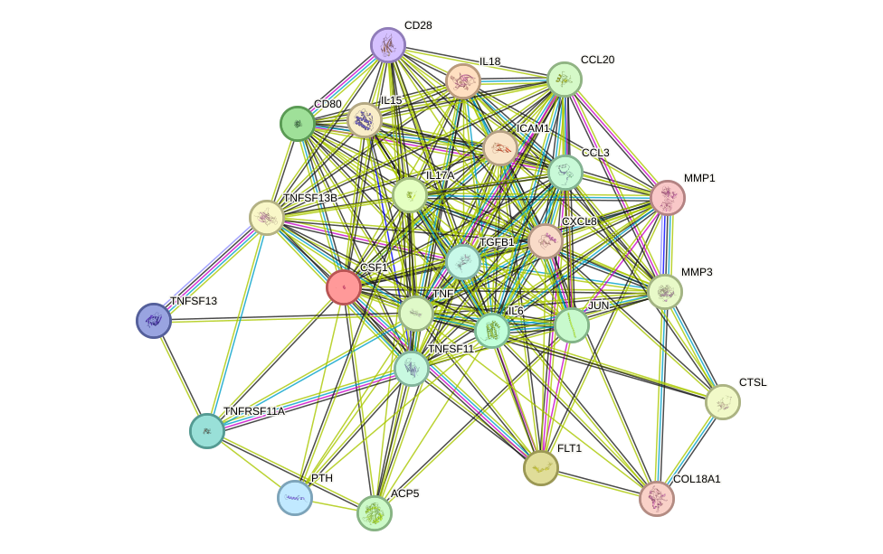
With this network context in place, it is helpful to consider the individual proteins that may be especially informative for kidney disease interpretation. During the function enrichment analysis, we identified serveral significant proteins. We will introduce them in-details in the following.
CTSL stands out because it links proteolysis directly to transcriptional control and cell-cycle regulation, processes that are highly relevant to kidney disease progression. In renal pathology, dysregulated proliferation of intrinsic kidney cells, including tubular epithelial cells, mesangial cells, and interstitial fibroblasts, contributes to maladaptive repair, fibrosis, and chronic kidney disease progression. The ability of CTSL to generate nuclear isoforms that process CUX1 suggests a mechanism by which CTSL may influence proliferative and remodeling responses in injured renal tissue. Such regulation is potentially important in settings where abnormal epithelial turnover or fibroproliferative responses drive nephron loss. Although the supplied annotation emphasizes cell-cycle control rather than a kidney-specific role, this function is mechanistically relevant because altered protease activity and aberrant transcriptional programs are recognized contributors to renal injury and chronic disease progression. [2]
A related but distinct perspective emerges from vascular biology, which may be particularly important for understanding renal microvascular integrity. VEGFA is the most prominent protein in relation to kidney disease because renal function is critically dependent on the integrity of the glomerular and peritubular microvasculature. VEGFA signaling is essential for endothelial survival, vascular permeability control, and nitric oxide production, all of which are central to glomerular filtration barrier maintenance and renal perfusion. In the kidney, dysregulated VEGFA activity can contribute to both excessive vascular permeability and endothelial injury: insufficient signaling may impair endothelial health and capillary maintenance, whereas excessive or unbalanced signaling may promote proteinuria, inflammation, and maladaptive vascular remodeling. Its activation of phosphoinositide three kinase and protein kinase B, mitogen activated protein kinase, focal adhesion kinase, and nitric oxide synthase pathways further connects VEGFA to mechanisms highly relevant to kidney disease, including endothelial dysfunction, altered hemodynamics, cytoskeletal changes, and microvascular rarefaction. The mention of soluble isoforms that can act as decoy receptors is also notable, because modulation of free VEGFA availability can profoundly influence vascular homeostasis and may contribute to renal injury states characterized by disturbed angiogenic balance. Overall, VEGFA stands out as a key mediator linking vascular biology to kidney disease mechanisms, particularly glomerular injury, chronic hypoxia, and progression of chronic kidney disease.
Beyond these individual examples, the broader cluster structure helps place these proteins within a coordinated inflammatory and remodeling program. There are also small set of proteins function together to form a cluster. The cluster forms a single connected component comprising 23 proteins and 77 retained high-confidence associations with a high mean score of 0.889, supporting a coherent biological program rather than isolated signals. Its topology is dominated by inflammatory hubs, particularly TNF (degree 17), IL6 (degree 16), CXCL8 (degree 13), IL17A (degree 11), and IL18 (degree 8), consistent with a cytokine-centered network. Several of the strongest retained associations reinforce this interpretation, including CD28-CD80 (score 0.999), TNFRSF11A-TNFSF11 (score 0.999), IL6-TNF (score 0.994), CXCL8-IL6 (score 0.991), and IL17A-IL6 (score 0.980). Where evidence includes functional, database, text-mining, and in some cases physical or experimental support, these pairs should be interpreted as strong biological associations; however, not all edges should be over-interpreted as direct physical binding. Functionally, the proteins in this cluster converge on immune activation and propagation of inflammation: IL18 activates nuclear factor kappa B and promotes T helper one and natural killer cell responses; IL15 stimulates proliferation and cytokine production in natural killer cells, T cells, and B cells through janus kinase one and janus kinase three, signal transducer and activator of transcription three and signal transducer and activator of transcription five signaling; CD80 together with CD28 augments T-cell activation, nuclear factor kappa B and mitogen activated protein kinase signaling, and phosphoinositide three kinase and protein kinase B dependent metabolic support; CSF1 supports survival, proliferation, differentiation, migration, and inflammatory chemokine release in mononuclear phagocytes; and TNFRSF11A signaling promotes nuclear factor kappa B and JUN activation through ubiquitin dependent signal assembly. Chemokine and trafficking functions are also prominent, with CCL20 recruiting CCR6 expressing dendritic cells, effector and memory T cells, B cells, T helper seventeen cells, and regulatory T cells, while CCL3 contributes to recruitment of monocytes, macrophages, T cells, dendritic cells, and neutrophil associated inflammatory amplification. CXCL8 is linked here to extracellular matrix organization and leukocyte endothelial interactions, and ICAM1 further supports immune cell adhesion related processes. In parallel, matrix and tissue remodeling are represented by MMP1 and MMP3, which are strongly associated (score 0.985) and collectively support extracellular matrix degradation, collagenase activation, cell migration, wound healing like remodeling, and inflammatory signaling. The receptor activator of nuclear factor kappa B and receptor activator of nuclear factor kappa B ligand related arm, including TNFRSF11A, TNFSF11, and ACP5, adds a bone resorption and osteoclast differentiation program mediated through nuclear factor kappa B, activator protein one, calcium two plus oscillations, and osteoclast specific transcription. In the context of kidney disease, this cluster is relevant because it integrates the major processes that drive renal injury progression: persistent pro-inflammatory cytokine signaling, immune-cell recruitment and activation, macrophage and monocyte participation, endothelial adhesion and chemotactic responses, and extracellular matrix remodeling. The central IL6 trans signaling function is explicitly linked to chronic inflammatory disease, while TNF, IL17A, and IL18 associated inflammatory programs, together with JUN, activator protein one, and nuclear factor kappa B pathway activation, are compatible with sustained inflammatory tissue damage. MMP1, MMP3, and CXCL8 related remodeling functions suggest altered matrix turnover and tissue restructuring, processes that can contribute to maladaptive repair. Finally, the inclusion of TGFB1 and the receptor activator of nuclear factor kappa B, receptor activator of nuclear factor kappa B ligand, and ACP5 axis indicates additional links to injury response regulation and mineral and bone associated pathways that are often clinically relevant in chronic kidney disease. Overall, the cluster is most consistent with an integrated inflammatory, immune activating, and remodeling network that could contribute to kidney disease by sustaining renal inflammation, promoting leukocyte infiltration, and driving pathological tissue remodeling. [3] [4] [5] [6] [7] [8] [9] [10] [11] [12] [13] [14] [15] [16] [17] [18] [19] [20] [21] [22] [23] [24] [25] [26] [27] [28] [29] [30] [31] [32] [33] [34] [35] [36] [37] [38] [39] [40] [41] [42] [43] [44] [45] [46] [47] [48] [49] [50] [51] [52] [53] [54] [55] [56] [57] [58] [59] [60] [61] [62] [63]
Carbohydrate binding is a molecular function in which a protein selectively and non-covalently interacts with carbohydrate structures, including simple sugars, complex oligosaccharides, polysaccharides, and chemically modified sugar derivatives. In biology, this function is commonly mediated by specialized carbohydrate-binding regions that recognize glycan motifs on extracellular matrix components, cell-surface glycoproteins, proteoglycans, microbial polysaccharides, or dietary and environmental carbohydrates. Through these interactions, carbohydrate-binding proteins can contribute to cell adhesion, matrix organization, signaling, host defense, molecular trafficking, and enzymatic targeting of polysaccharide substrates. In many systems, carbohydrate binding does not itself catalyze a reaction, but instead positions proteins near their substrates or interaction partners, thereby shaping tissue structure and cellular communication. Because the kidney contains highly specialized basement membranes, glycosylated receptors, and extracellular matrix networks, molecular functions involving carbohydrate recognition can in principle influence renal development, filtration barrier integrity, tubular interactions, and inflammatory responses. [64]
Against this general biological background, the available literature support for a kidney-specific connection remains limited and should be interpreted cautiously. The publication provided offers only very limited and indirect support for a relationship between carbohydrate binding and kidney disease. Specifically, the study describes structural work on the carboxyl-terminal portion of a bifunctional cellulase from Clostridium thermocellum and notes that this region contains both a polycystic kidney disease module and a carbohydrate-binding module forty-four, which were purified and crystallized for structural analysis. However, the context of this work is microbial degradation of plant cell-wall polysaccharides within the cellulosome, rather than renal physiology or human disease. Thus, the article supports the general concept that a protein region annotated as a polycystic kidney disease module can coexist with a carbohydrate-binding region in a multidomain protein, but it does not demonstrate a mechanistic role for carbohydrate binding in kidney disease pathogenesis. The most that can be inferred is that the structural association between a polycystic kidney disease-related module and a carbohydrate-binding module highlights a possible broader biological link between extracellular recognition domains and carbohydrate-mediated interactions, processes that may be relevant to kidney tissue architecture in other settings. Nevertheless, based on this publication alone, any direct connection between the carbohydrate-binding pathway and kidney disease remains speculative and insufficiently established. [64]
With that limitation in mind, the enrichment and network results still provide a useful framework for examining how this molecular function may be represented within the kidney disease-associated protein set. There were 34 kidney disease-associated proteins significantly enriched in the molecular function of carbohydrate binding, a functional category defined by selective and non-covalent interaction with carbohydrate structures that can influence extracellular matrix organization, cell communication, host defense, and tissue integrity in the kidney. Within this 34-protein set, the retained high-confidence protein-protein interaction network contained 12 edges connecting 14 proteins, with a mean retained interaction score of 0.929, indicating that the observed network support is concentrated in a subset of the enriched proteins rather than being uniformly distributed across the full set. The highest-degree proteins were C-type lectin domain family 7 member A and regenerating family member 3 alpha, each with degree 3 and weighted scores of 2.81 and 2.707, followed by regenerating family member 1 alpha, cluster of differentiation 34, and regenerating family member 1 beta, each with degree 2 and weighted scores of 1.915, 1.872, and 1.852, respectively.
This selective connectivity becomes clearer when the retained network is examined at the level of connected components and top-scoring associations. The retained network was organized into 4 connected components, including a 5-protein component with 5 edges and mean score 0.92 composed of C-type lectin domain family 4 member D, C-type lectin domain family 6 member A, C-type lectin domain family 7 member A, galectin 3, and galectin 9; a 4-protein component with 4 edges and mean score 0.921 composed of regenerating family member 1 alpha, regenerating family member 1 beta, regenerating family member 3 alpha, and regenerating family member 3 gamma; a 3-protein component with 2 edges and mean score 0.936 composed of cluster of differentiation 34, endoglin, and selectin E; and a 2-protein component with 1 edge and mean score 0.992 composed of asialoglycoprotein receptor 1 and asialoglycoprotein receptor 2. Among the top retained pairs, the strongest scores were observed for C-type lectin domain family 7 member A with galectin 3 at 0.994, asialoglycoprotein receptor 1 with asialoglycoprotein receptor 2 at 0.992, C-type lectin domain family 7 member A with galectin 9 at 0.987, regenerating family member 1 alpha with regenerating family member 1 beta at 0.977, and C-type lectin domain family 4 member D with C-type lectin domain family 6 member A at 0.97, although these STRING-supported associations should be interpreted as high-confidence functional associations rather than automatically as direct physical binding in every case. Notably, 20 of the 34 enriched proteins had no retained edges under the current high-confidence criteria, further indicating that the interaction structure is selective within this carbohydrate-binding protein set.
To complement these summary statistics, we include the network visualization and the corresponding interactive resource below. We include the protein-protein interaction network visualization below together with the interactive STRING network page.
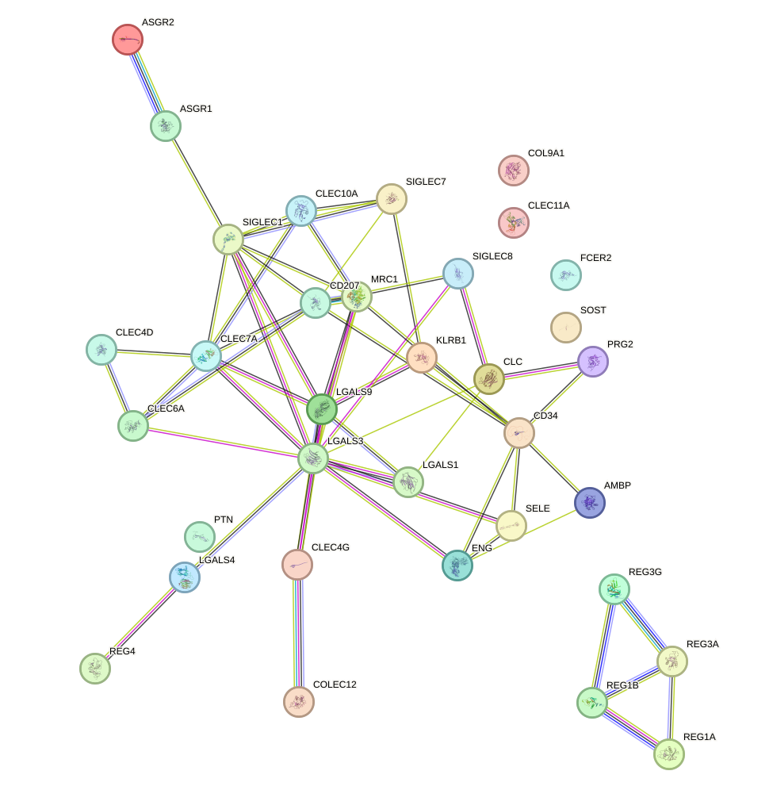
Having outlined the overall enrichment pattern, the next step is to consider the individual proteins that may be most informative for kidney disease interpretation. During the function enrichment analysis, we identified serveral significant proteins. We will introduce them in-details in the following.
ENG (endoglin) is among the most compelling kidney disease-relevant proteins in this list because renal health depends critically on endothelial integrity, microvascular homeostasis, and balanced transforming growth factor beta signaling. The kidney is highly vascularized, and glomerular and peritubular endothelial dysfunction is a central mechanism in chronic kidney disease, diabetic nephropathy, thrombotic microangiopathy, and progressive fibrosis. ENG acts as a transforming growth factor beta coreceptor and modulates both bone morphogenetic protein 9 and mothers against decapentaplegic homolog 1 signaling and transforming growth factor beta 1 and mothers against decapentaplegic homolog 3 signaling, pathways that are deeply implicated in vascular remodeling and fibrogenesis. Its documented roles in endothelial migration, vessel structure, and response to blood flow further strengthen its relevance to glomerular capillary injury and maladaptive vascular remodeling in kidney disease. Because endothelial injury often precedes albuminuria, ischemia, and interstitial fibrosis, ENG stands out as a biologically plausible mediator and potential biomarker of renal vascular pathology. [65] [66] [67] [68]
In a related but distinct way, immune regulation and tissue remodeling also emerge as recurrent themes within this enriched set. LGALS1 (galectin-1) is highly relevant to kidney disease because immune dysregulation, inflammation, and fibrosis are major drivers of renal injury. Galectins are increasingly recognized as modulators of leukocyte activation, cell death, and tissue remodeling in the injured kidney. The ability of LGALS1 to induce T-cell apoptosis and suppress T-helper 17 differentiation suggests a potentially important role in shaping renal inflammatory responses, particularly in immune-mediated nephropathies where T-cell polarization contributes to glomerular and tubulointerstitial damage. In addition, proteins controlling apoptosis and proliferation often influence tubular epithelial survival and fibrotic repair. Thus, LGALS1 stands out as a plausible immunoregulatory factor linking glycan recognition to chronic inflammation and progression of kidney injury. [69]
A similar logic extends to proteins involved in extracellular signaling and repair-associated responses. PTN (pleiotrophin) is notable in the context of kidney disease because it integrates extracellular matrix signaling, cell survival pathways, tissue repair, and vascular cell migration. Renal injury and repair are strongly influenced by proteoglycan-rich microenvironments, growth factor signaling, and epithelial, endothelial, and stromal cell crosstalk. PTN binds chondroitin sulfate-containing receptors and activates phosphoinositide 3-kinase and protein kinase B and mitogen-activated protein kinase signaling, pathways commonly involved in tubular regeneration, fibroblast activation, and maladaptive repair after acute or chronic injury. Its reported role in endothelial migration is particularly relevant to renal microvascular remodeling, while its function in hematopoietic regeneration and hemostatic balance may also intersect with inflammatory and ischemic kidney injury. Although PTN is not a classic kidney marker, its broad effects on repair biology make it a strong candidate for involvement in renal remodeling and fibrosis. [70] [71] [72] [73] [74] [75] [76] [77] [78] [79]
This theme of vascular stress and inflammatory injury is also reflected in scavenger and adhesion-related proteins. COLEC12 is relevant to kidney disease because oxidative stress, innate immune activation, and modified lipoprotein handling are central features of progressive renal injury, especially in diabetic kidney disease and atherosclerosis-associated nephropathy. Its ability to internalize oxidatively modified low-density lipoprotein suggests a potential role in vascular inflammation and endothelial dysfunction, both of which contribute to glomerular damage and chronic kidney disease progression. In addition, its host-defense and phagocytic functions may be important in the kidney's response to infection and sterile inflammation. Since renal disease often involves a convergence of inflammation, oxidative injury, and vascular compromise, COLEC12 stands out as a mechanistically plausible contributor to disease processes affecting both the renal parenchyma and renal vasculature.
Along the same lines, endothelial activation represents another plausible route by which carbohydrate-binding proteins may influence renal injury. SELE (E-selectin) is particularly relevant to kidney disease because endothelial activation and leukocyte recruitment are foundational events in many forms of renal inflammation, including acute kidney injury, diabetic nephropathy, vasculitis, and transplant rejection. Although the provided annotation specifically notes a microbial receptor function, E-selectin is widely understood as an inducible endothelial adhesion molecule that reflects inflammatory activation of the vasculature. In the kidney, increased endothelial adhesiveness promotes leukocyte infiltration into glomerular and interstitial compartments, thereby amplifying tissue injury. Its mechanistic link to endothelial dysfunction makes SELE a strong candidate marker of inflammatory renal vascular stress, even when the direct annotation here is limited.
Immune cell activation markers in the enriched set further reinforce the possibility that glycan recognition intersects with inflammatory kidney disease. SIGLEC1 is potentially relevant to kidney disease through its role in innate immune activation and antigen-presenting cell biology. Activated dendritic cells and infiltrating mononuclear phagocytes are important contributors to renal inflammation in both infection-associated and autoimmune kidney diseases. A receptor that promotes pathogen recognition and cellular entry may influence antiviral responses and downstream inflammatory cascades in the kidney. More broadly, SIGLEC1 expression is often associated with activated myeloid compartments and interferon-rich inflammatory states, both of which are relevant to lupus nephritis and other immune-mediated renal disorders. Therefore, while the supplied function is infection-focused, SIGLEC1 may still be informative as a marker or mediator of inflammatory kidney injury.
A complementary perspective is provided by inhibitory immune receptors that may shape the intensity of renal inflammation. SIGLEC7 is relevant to kidney disease because it represents an immune checkpoint-like receptor capable of suppressing cytotoxic immune responses. In the kidney, excessive activation of innate immune cells can exacerbate glomerular and tubulointerstitial damage, whereas inhibitory receptors may modulate this process. Its effects on natural killer cell cytotoxicity are potentially important in transplant immunology, viral nephropathies, and inflammatory renal diseases where innate lymphocytes contribute to tissue injury. The additional links to hematopoiesis and myeloid differentiation may also be relevant in systemic inflammatory states that secondarily affect the kidney. Thus, SIGLEC7 stands out as a plausible regulator of immune tone in renal disease settings.
This broader glyco-immune framework may also extend to receptors with more indirect renal relevance. SIGLEC8 may have kidney disease relevance through glycan-dependent immune regulation. Sulfated and sialylated glycans are prominent features of inflamed tissues and extracellular matrices, and receptors that recognize these structures can influence leukocyte trafficking, activation, and survival. Although the annotation emphasizes ligand specificity rather than a defined renal role, this type of glyco-immune interaction is potentially important in allergic, eosinophil-rich, or inflammatory conditions that may involve the kidney. Its relevance is therefore more indirect than that of ENG or LGALS1, but it remains biologically interesting in the broader context of renal immunopathology. [80] [81] [82]
At the same time, some proteins in the enriched list require more caution because the supplied annotation does not align cleanly with their expected biology. The annotation provided for MRC1 appears inconsistent with the canonical mannose receptor 1 biology and instead describes a chromatin remodeling factor. Based strictly on the supplied text, the protein would be linked to transcriptional regulation rather than immune lectin function. If this annotation is taken at face value, its kidney relevance would derive from epigenetic control of cell differentiation and repair programs, processes that are increasingly recognized in chronic kidney disease and fibrosis. However, because the functional description appears mismatched, any disease interpretation should be made cautiously. This protein is therefore less reliable for kidney-focused inference from the current dataset than proteins such as ENG, LGALS1, or PTN.
Other proteins may be relevant through convergence of coagulation, inflammation, and vascular injury. AMBP is potentially relevant to kidney disease because coagulation, protease activity, and inflammatory vascular injury are closely intertwined in renal pathology. Many kidney diseases, particularly glomerular disorders and thrombotic microangiopathies, involve dysregulated coagulation and endothelial damage. A factor ten a inhibitor could influence intrarenal thrombosis, capillary perfusion, and inflammatory signaling. Inhibition of mast cell proteases may also be relevant, as mast cells can contribute to interstitial inflammation and fibrosis. Although the provided annotation does not directly mention renal expression or disease, the convergence of coagulation and inflammation makes AMBP biologically noteworthy in the context of kidney vascular injury.
This vascular and repair-oriented interpretation is also consistent with progenitor and endothelial markers. CD34 is relevant to kidney disease primarily as a marker of progenitor cells, endothelial cells, and vascular injury and repair processes. Because renal disease frequently entails endothelial loss, capillary rarefaction, and attempted regeneration, molecules associated with stem and progenitor adhesion and trafficking may be important in repair responses. Its selectin-related adhesive functions also suggest a role in cell recruitment to injured tissues. While CD34 is not itself a disease mechanism-defining protein in the kidney, it stands out as a potentially informative marker of vascular and progenitor cell dynamics in renal pathology.
Adaptive immune regulation provides an additional, though somewhat less direct, connection to kidney disease. FCER2 may be relevant to kidney disease through its effects on adaptive immunity, B-cell biology, and antigen presentation. Immune complex formation, B-cell activation, and T-cell crosstalk are central to several glomerular diseases, including lupus nephritis and membranous nephropathy. A receptor that regulates immunoglobulin E production and antigen presentation could shape inflammatory responses in subsets of immune-mediated renal disease, particularly where allergic or parasitic immune axes overlap with kidney injury. Its connection is less direct than that of endothelial or fibrotic regulators, but it remains potentially meaningful in immunologically driven nephropathies.
Beyond inflammatory and vascular pathways, the enriched set may also intersect with the bone-kidney axis and systemic complications of chronic kidney disease. SOST (sclerostin) is highly interesting in kidney disease because wingless-related integration site signaling is a major pathway in renal fibrosis, repair, and chronic kidney disease-mineral and bone disorder. Although the supplied annotation emphasizes bone biology, sclerostin has substantial translational relevance to nephrology due to the close relationship between chronic kidney disease, altered bone turnover, and vascular calcification. In addition, wingless-related integration site pathway modulation is increasingly implicated in renal tubular injury and fibrotic progression. Therefore, SOST stands out not only as a marker of chronic kidney disease-associated bone disease but also as a candidate link between skeletal remodeling and systemic complications of kidney failure.
A similar consideration applies to proteins whose main importance may lie in systemic rather than parenchymal kidney effects. CLEC11A is potentially relevant to kidney disease mainly through the bone-kidney axis. Chronic kidney disease profoundly alters mineral metabolism, bone remodeling, and mesenchymal cell differentiation. A factor that promotes osteoblast maturation may therefore be informative in the setting of chronic kidney disease-mineral and bone disorder, where impaired bone quality and abnormal turnover are common. Although its direct role in renal parenchymal injury is less obvious, its importance in skeletal repair makes it relevant to systemic complications of chronic kidney disease.
By contrast, not all enriched proteins appear equally informative for kidney-focused interpretation. COL9A1 has limited direct relevance to kidney disease based on the supplied function. Its primary role is structural, in cartilage and ocular tissues, and no clear renal mechanism is apparent from the annotation alone. It would therefore be considered lower priority for kidney-focused interpretation unless supported by additional genetic or syndromic evidence outside the present dataset.
In addition to these individual proteins, the network structure suggests that several proteins may act together in more coherent functional groups. There are also small set of proteins function together to form a cluster. The cluster forms a single connected component of five proteins with five retained high-confidence associations (mean retained protein-protein interaction score 0.92), indicating a coherent immune-associated module under the current network criteria. Within this component, CLEC7A is the highest-degree node (degree 3; weighted score 2.81), consistent with a central role in coordinating the cluster. Functionally, CLEC7A recognizes beta-glucans from bacteria and fungi and promotes spleen associated tyrosine kinase-dependent activation of nuclear factor kappa-light-chain-enhancer of activated B cells and p38 mitogen-activated protein kinase pathways, cytokine and chemokine induction, reactive oxygen species generation, phagocytosis of C. albicans conidia, and T-cell activation and proliferation [83] [84] [85] [86] [87] [88] [89] [90] [91] [92] [93]. CLEC4D similarly functions as a myeloid pattern-recognition receptor for fungal alpha-mannans and mycobacterial trehalose 6,6'-dimycolate, promoting high affinity immunoglobulin epsilon receptor subunit gamma-associated immunoreceptor tyrosine-based activation motif signaling through spleen associated tyrosine kinase, caspase recruitment domain-containing protein 9, and nuclear factor kappa-light-chain-enhancer of activated B cells, thereby driving antigen-presenting cell maturation and T-helper 1 and T-helper 17 polarization; it also has endocytic activity relevant to antigen uptake and presentation [94] [95] [96]. CLEC6A is functionally linked to CLEC4D in the network by the highest-confidence retained pair for that submodule (CLEC4D-CLEC6A, score 0.97; evidence includes string_functional and string_physical, with the note that STRING associations should not be over-interpreted as direct binding unless explicitly supported), matching the supplied functional description that CLEC6A associates with CLEC4D-containing receptor complexes to propagate immunoreceptor tyrosine-based activation motif-spleen associated tyrosine kinase-caspase recruitment domain-containing protein 9-nuclear factor kappa-light-chain-enhancer of activated B cells signaling and shape T-cell priming [94]. LGALS3 and LGALS9 extend this receptor-driven inflammatory module toward broader leukocyte regulation: LGALS3 participates in acute inflammatory responses including neutrophil activation and adhesion, chemoattraction of monocytes and macrophages, opsonization of apoptotic neutrophils, mast-cell activation, and autophagy-linked membrane damage responses, whereas LGALS9 acts as an eosinophil chemoattractant, inhibits angiogenesis, and suppresses interferon gamma production by natural killer cells. Their strong network association with CLEC7A (CLEC7A-LGALS3 score 0.994; CLEC7A-LGALS9 score 0.987) and with each other (LGALS3-LGALS9 score 0.819) supports interpretation of the cluster as an integrated lectin-centered inflammatory and immune-regulatory program. In the context of kidney disease, the most defensible implication from the supplied functions is that this module could contribute through amplification of innate immune activation, leukocyte recruitment, oxidative and cytokine responses, and antigen-presenting cell and T-cell polarization. Such processes are highly relevant to renal inflammatory injury because persistent pattern-recognition receptor signaling, reactive oxygen species production, and recruitment and activation of neutrophils, monocytes and macrophages, eosinophils, mast cells, and T cells could plausibly intensify tissue inflammation, while LGALS9-associated anti-angiogenic activity and natural killer cell interferon gamma suppression suggest additional effects on immune balance and tissue remodeling. However, the present interpretation should remain at the level of an immune-inflammatory contribution to kidney disease, because the supplied evidence describes immune functions and high-confidence protein associations rather than kidney-specific mechanistic experiments. [94] [95] [96] [83] [84] [85] [86] [87] [88] [93] [89] [90] [91] [92] [97] [98] [99] [100]
A second connected component points to a somewhat different, but still potentially relevant, biological theme centered on epithelial defense and regeneration. The four proteins form a single connected component comprising all 4 proteins and 4 retained high-confidence associations, with a high mean retained protein-protein interaction score of 0.921, indicating a coherent functional module under the current network criteria. Within this cluster, REG3A has the highest degree (degree 3; weighted score 2.707), connecting to REG1A, REG1B, and REG3G, and therefore appears to organize the cluster around a shared stress-response or epithelial defense program. Functionally, REG3G has bactericidal activity against L. monocytogenes and methicillin-resistant S. aureus, while REG3A has bacteriostatic activity, supporting a role in antimicrobial defense. In parallel, REG1A and REG1B are both described as potential inhibitors of spontaneous calcium carbonate precipitation and as proteins associated with neuronal sprouting and regeneration in brain and pancreas, suggesting broader regenerative or injury-response functions. The strongest retained association is between REG1A and REG1B (score 0.977; coexpression, experimental, and functional evidence), consistent with their highly similar annotated roles, whereas REG3A connects both REG proteins (REG1A-REG3A score 0.938; REG1B-REG3A score 0.875) and is also linked to REG3G (score 0.894; database, functional, and physical evidence). Collectively, these data support interpretation of the cluster as a coordinated epithelial defense and regeneration-associated module rather than a purely structural complex. In the context of kidney disease, such a module may be relevant because renal injury commonly involves epithelial stress, tissue damage, and heightened susceptibility to inflammation or infection. The antimicrobial activities of REG3A and REG3G could contribute to protection against microbial challenge, whereas the regeneration-associated properties of REG1A and REG1B may reflect compensatory repair responses after tissue injury. In addition, the annotation that REG1A and REG1B may inhibit spontaneous calcium carbonate precipitation raises the possibility that they could be relevant to pathologic mineral precipitation processes, which may be pertinent in some renal disorders. However, the present interpretation should remain cautious: the supplied network supports strong protein association within one connected component, but most retained edges are supported by coexpression and functional evidence, and only the REG3A-REG3G pair includes explicit physical evidence; therefore, the cluster is best viewed as a tightly associated functional program potentially linked to kidney disease through host defense, injury response, and repair.
Allograft rejection is the immunological process through which a transplant recipient recognizes the donated kidney as foreign and mounts an adaptive and innate immune response that damages graft tissue. In kidney transplantation, this pathway is centered on antigen presentation, activation of helper and cytotoxic lymphocytes, co stimulatory signaling between antigen presenting cells and lymphocytes, production of inflammatory mediators, recruitment of effector cells, and progressive injury to the renal microvasculature, tubulointerstitium, and glomeruli. A critical step is the interaction between cluster of differentiation eighty six on antigen presenting cells and cluster of differentiation twenty eight on lymphocytes, which promotes full lymphocyte activation and sustains rejection responses. If inadequately controlled, these events lead to acute or chronic graft injury, declining filtration function, fibrosis, and eventual graft loss. Because kidney transplantation is the preferred treatment for end stage kidney disease, understanding the allograft rejection pathway is central to preserving transplanted kidney function while balancing the toxicities of immunosuppressive therapy. [1]
This clinical framework helps place the cited study in context by linking pathway biology to measurable transplant outcomes. The provided publication links the allograft rejection pathway to kidney disease by showing that long term outcome after kidney transplantation depends not only on suppression of alloimmune injury but also on avoidance of treatment related renal toxicity. The study reviewed biological blockade of co stimulatory signaling through cytotoxic lymphocyte associated protein four immunoglobulin based therapy, particularly belatacept, which inhibits the interaction between cluster of differentiation eighty six and cluster of differentiation twenty eight and thereby attenuates lymphocyte activation that drives rejection. In de novo kidney transplant recipients, belatacept based treatment was associated with significantly better kidney allograft function at one and two years than cyclosporine A based treatment, suggesting that modulation of the rejection pathway can preserve renal function more effectively when compared with calcineurin inhibitor exposure, which is itself nephrotoxic. The publication further emphasizes that chronic kidney disease within the allograft is multifactorial, with both immunological injury from rejection and non immunological injury from drug toxicity contributing to progressive graft dysfunction. Thus, in the context of kidney disease, the allograft rejection pathway is directly relevant because persistent or inadequately controlled immune activation causes structural and functional damage to the transplanted kidney, while therapeutic targeting of co stimulatory signaling may reduce rejection associated injury and improve long term graft survival, although this benefit must be weighed against safety concerns such as increased post transplant lymphoproliferative disorders in Epstein Barr virus seronegative patients treated with belatacept. [1]
Against this biological and clinical background, the enrichment results provide a quantitative view of how strongly the analyzed protein set maps onto the rejection process. There were 27 kidney disease-associated proteins analyzed in the function enrichment analysis for allograft rejection, a pathway that captures the immune recognition of the transplanted kidney, activation of helper and cytotoxic lymphocytes, co stimulatory signaling, inflammatory mediator production, effector cell recruitment, and the progressive tissue injury that ultimately compromises graft survival. This protein set is therefore quantitatively aligned with the central biological features of transplant rejection in the kidney, particularly the interaction between cluster of differentiation eighty six and cluster of differentiation twenty eight that supports full lymphocyte activation.
A closer examination of the network topology further suggests that this pathway representation is not only biologically relevant but also structurally coherent. Within this 27 protein pathway set, 59 high-confidence protein-protein association edges were retained, connecting 20 proteins, with a mean retained interaction score of 0.911, indicating a dense and strongly supported interaction structure among the connected subset. The most connected proteins were tumor necrosis factor with degree 13 and weighted score 11.76, interleukin ten with degree 12 and weighted score 11.023, interleukin seventeen A with degree 10 and weighted score 8.908, chemokine ligand nine with degree 9 and weighted score 8.168, and chemokine ligand eight with degree 9 and weighted score 8.144, supporting a network centered on inflammatory cytokine and chemokine signaling. The principal connected component contained 20 proteins and 59 edges with the same mean score of 0.911, while 7 proteins, namely complement component one q subcomponent subunit A, complement component seven, cluster of differentiation fifty five, collagen type five alpha one chain, glial cell derived neurotrophic factor, granulysin, and vascular endothelial growth factor A, had no retained edges under the current high-confidence criteria. Among the strongest retained associations were chemokine ligand eleven with chemokine ligand nine at 0.999, chemokine ligand twenty one with chemokine ligand nine at 0.999, chemokine ligand twenty one with chemokine ligand eleven at 0.999, cluster of differentiation twenty eight with cluster of differentiation eighty at 0.999, cluster of differentiation forty with cluster of differentiation eighty at 0.999, chemokine ligand nineteen with chemokine ligand thirteen at 0.998, chemokine ligand nineteen with chemokine ligand twenty one at 0.997, and cluster of differentiation twenty eight with cluster of differentiation forty at 0.997, collectively emphasizing coordinated antigen presentation, co stimulatory signaling, and chemokine driven immune cell trafficking.
To support direct inspection of these relationships, we include the protein-protein interaction network visualization below together with the STRING interactive network page for direct inspection of the retained high-confidence associations.
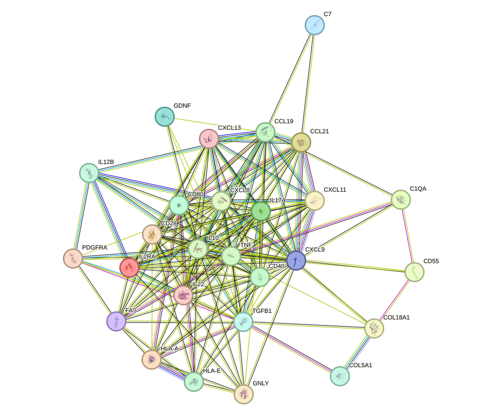
Building on this network overview, several individually annotated proteins may warrant closer consideration in relation to kidney disease biology. During the function enrichment analysis, we identified serveral significant proteins. We will introduce them in-details in the following.
VEGFA stands out as one of the most kidney-relevant proteins in this list because glomerular function depends critically on tightly controlled endothelial integrity and vascular permeability. In the kidney, VEGFA signaling is essential for maintenance of the glomerular filtration barrier, survival of glomerular endothelial cells, and preservation of the specialized capillary network. Dysregulated VEGFA activity has been strongly linked to proteinuria, endothelial injury, thrombotic microangiopathy, diabetic kidney disease, and abnormal capillary remodeling. Both deficient and excessive VEGFA signaling can be pathogenic: reduced VEGFA impairs endothelial survival and filtration barrier maintenance, whereas excessive VEGFA can promote pathological permeability and inflammatory vascular remodeling. The described activation of AKT, MAPK, FAK, SRC, and nitric oxide pathways is especially relevant because these signaling modules control endothelial survival, cytoskeletal organization, and vascular tone, all of which are central to renal microvascular homeostasis and progression of chronic kidney disease.
In parallel with vascular regulation, complement associated mechanisms may also be relevant to renal inflammatory injury. C1QA is potentially relevant to kidney disease because complement-related molecules are central mediators of renal inflammation and immune complex injury. Although the provided annotation specifically emphasizes a microbial infection-related receptor role for Epstein-Barr virus, C1QA is more broadly associated with innate immune recognition and clearance processes that can influence glomerular and tubulointerstitial inflammation. In kidney disease, especially immune-mediated nephropathies such as lupus nephritis and other complement-associated glomerulopathies, dysregulated complement activation contributes directly to tissue damage. The infection-related aspect is also notable because viral triggers can precipitate or exacerbate renal immune injury. Therefore, even though the listed function is not kidney-specific, C1QA remains biologically interesting due to its plausible connection to infection-triggered immune activation and complement-mediated renal pathology.
A related line of reasoning applies to other complement regulatory proteins within the set. CD55 is relevant to kidney disease primarily through its role in host-pathogen interactions and complement regulation. The annotation provided highlights its function as a receptor for multiple echoviruses, which is important because infection can trigger or worsen renal injury through direct viral effects or secondary immune activation. More broadly, CD55 is a well-known complement regulatory protein that protects host cells from excessive complement-mediated damage. This is highly pertinent to renal pathology, as the kidney is particularly vulnerable to complement dysregulation in glomerular and vascular compartments. Loss or insufficiency of complement control can contribute to inflammatory injury, endothelial damage, and progression of chronic kidney disease. Thus, CD55 stands out as a molecule linking infection susceptibility with complement-dependent mechanisms that are highly relevant to kidney injury.
Shifting from inflammatory regulation to developmental biology, another potentially relevant protein is GDNF. GDNF is notable because RET signaling has important developmental relevance beyond the nervous system, including the genitourinary tract. Although the listed function emphasizes neuronal survival and neural crest biology, GDNF is fundamentally involved in developmental signaling pathways that are also critical for kidney organogenesis, particularly ureteric bud branching and nephrogenic patterning. Aberrant GDNF-RET signaling has been associated with congenital anomalies of the kidney and urinary tract, which represent a major cause of pediatric kidney disease and can predispose to chronic renal dysfunction later in life. Therefore, GDNF is highly relevant from a developmental kidney disease perspective, even if the provided annotation focuses on its neurotrophic role.
In addition to developmental pathways, extracellular matrix organization may provide another mechanistic link to renal injury progression. COL5A1 is of interest in kidney disease because extracellular matrix composition and organization are major determinants of renal structural integrity. The kidney relies on highly specialized matrix networks in the interstitium, vasculature, and basement membrane-associated compartments. As a fibrillar collagen with binding capacity for heparan sulfate and other matrix-associated molecules, COL5A1 may influence matrix assembly, tissue mechanics, and cell-matrix signaling. These processes are directly relevant to renal fibrosis, glomerulosclerosis, and chronic kidney disease progression, where abnormal collagen deposition and matrix remodeling drive irreversible functional decline. Although COL5A1 is not among the most classical renal disease genes, its connective tissue and matrix-organizing properties make it a plausible contributor to fibrotic remodeling in the diseased kidney.
The same cautious interpretation can be extended to proteins that connect immunity with infection-related tissue stress. GNLY is potentially relevant to kidney disease through the intersection of immunity, infection, and inflammatory tissue injury. Renal disease is frequently influenced by infectious complications, especially in immunocompromised patients, transplant recipients, and individuals with advanced chronic kidney disease. The potent antimicrobial activity of GNLY against intracellular pathogens suggests a role in host defense that could affect susceptibility to infection-associated kidney injury. In addition, cytotoxic immune pathways that eliminate infected cells can also contribute to collateral tissue damage when dysregulated. Thus, GNLY may be relevant in settings such as infection-triggered nephritis, renal inflammation during systemic infection, and immune activation in transplanted kidneys, although its connection is more indirect than that of vascular or complement-related proteins.
Finally, glycosylation-related biology may offer a more indirect but still potentially informative connection to renal function. The annotated function for C7 describes a sialyltransferase-like activity involved in glycosylation, which is potentially relevant to kidney disease because sialylation is crucial for membrane charge, receptor function, and cell-cell interactions. In the kidney, glycosylation and sialylation are particularly important for podocyte biology and maintenance of the glomerular filtration barrier, where loss of negatively charged glycoconjugates can contribute to proteinuria. Altered sialylation patterns have also been implicated in inflammation, fibrosis, and cancer-related kidney pathology. The emphasis in the annotation on immune regulation and hormone sensitivity further supports possible renal relevance, as both immune signaling and endocrine responsiveness are central to kidney physiology and disease. However, compared with VEGFA or complement-associated proteins, the kidney connection here is more mechanistic and indirect. [101] [102]
Beyond these individually discussed proteins, the connected portion of the network may also be interpreted as a coordinated functional cluster. There are also small set of proteins function together to form a cluster.The network structure supports interpretation of this cluster as a coordinated immune-response unit that is likely to influence kidney disease through regulation of inflammatory cell recruitment, adaptive immune activation, immune restraint, and tissue remodeling. The protein association network is dense and fully connected (20/20 proteins connected; 59 retained edges; mean retained score 0.911), indicating strong functional coherence under the current STRING-derived high-confidence criteria, while still warranting caution that not all associations imply direct physical interaction. Several of the strongest retained pairs organize the cluster into biologically interpretable submodules, including chemokine associations among CXCL11, CXCL9, CCL21, CCL19, and CXCL13 (scores 0.997-0.999), and T-cell/B-cell costimulatory associations among CD28, CD80, and CD40 (scores 0.997-0.999). Hub proteins further emphasize inflammatory control points, with TNF (degree 13), IL10 (degree 12), IL17A (degree 10), CXCL9 (degree 9), and CXCL8 (degree 9) occupying central positions. Functionally, CCL19 and CCL21 promote homing of naive and activated lymphocytes to secondary lymphoid tissues, whereas CXCL9 and CXCL11 recruit activated T cells and CXCL13 attracts B cells; together, these activities are consistent with immune-cell accumulation and organization in inflamed renal tissue. CD28-CD80 costimulation augments naive T-cell activation and downstream NF-kappa-B/MAPK signaling, while CD40 and CD80 support B-cell-T-cell interactions relevant to humoral immune responses, suggesting that this cluster can sustain adaptive immune amplification once leukocytes enter the kidney. In parallel, IL2RA and IL10 indicate a counter-regulatory axis: IL2RA regulates TREG activity and immune tolerance, and IL10RA-mediated STAT3 signaling limits excessive inflammation and tissue disruption. The coexistence of inflammatory mediators (TNF, IL17A, CXCL8, CXCL9, CXCL11) with anti-inflammatory restraint (IL10, IL2RA) is consistent with a balance between immune defense and prevention of immunopathology, a balance that is highly relevant in kidney disease where persistent inflammation can damage glomerular, tubular, and interstitial compartments. Kidney relevance is also supported by the supplied epithelial and stromal functions of other members. IL22 is described as regulating epithelial barrier permeability and, notably, allowing passive sodium and calcium reabsorption across proximal tubules in kidney, linking this immune cluster to renal epithelial transport homeostasis. PDGFRA contributes to chemotaxis, wound healing, mesenchymal-cell biology, and survival signaling, which may be pertinent to renal stromal responses and maladaptive repair. TGFB1 positively regulates cell death in a tissue involution context, and FAS is linked to apoptosis-related regulation, together suggesting that inflammatory signaling in this cluster could interface with cell-death and remodeling programs during renal injury. HLA-A and HLA-E indicate antigen-presentation and immune-surveillance dimensions, including potential relevance to antiviral responses and cytotoxic lymphocyte regulation. Overall, the cluster is most parsimoniously interpreted as an integrated immunoinflammatory circuit that could contribute to kidney disease by promoting leukocyte recruitment, T-cell and B-cell activation, cytokine-driven tissue injury, and repair/remodeling responses, while also containing endogenous regulatory elements that may limit excessive damage. [6] [7] [27] [103] [104] [105] [106] [107] [33] [34] [108]
Arthritis is an inflammatory disorder of the joint characterized by immune activation within synovial tissues, infiltration of inflammatory cells, release of cytokines and chemokines, pain, swelling, and limitation of movement. Although it is anatomically centered in the musculoskeletal system, arthritis often reflects broader systemic inflammatory or autoimmune activity rather than an isolated joint process. In several immune-mediated diseases, joint inflammation occurs together with vascular, gastrointestinal, cutaneous, or renal manifestations, indicating that the biological processes driving arthritis can extend beyond the joint. These processes include activation of adaptive and innate immunity, abnormal antigen presentation, T cell co-stimulation, immune complex formation, endothelial injury, and sustained inflammatory signaling. In this context, arthritis can serve as a clinical marker of a multisystem inflammatory state that may also involve the kidney. Therefore, the pathway represented by arthritis is relevant to kidney disease not because joint inflammation directly damages renal tissue in all cases, but because it frequently arises within systemic immune conditions that can also induce glomerular inflammation, proteinuria, progressive loss of kidney function, or complications affecting kidney transplantation outcomes. [109] [1]
This broad clinical framing is supported by the provided publications, which connect the arthritis pathway to kidney disease through both systemic immune dysregulation and the therapeutic mechanisms used to control it. In children with Henoch Schonlein nephritis, arthritis was identified as one of the typical clinical manifestations of Henoch Schonlein purpura, a small vessel vasculitis in which renal involvement is the major determinant of prognosis, showing that joint inflammation can be part of a multisystem inflammatory syndrome that also targets the kidney; in that study, more severe clinical presentation was associated with higher renal histopathological stage, greater use of immunosuppressive treatment, and the need for long-term monitoring for persistent proteinuria, underscoring the clinical link between inflammatory disease manifestations and kidney outcome [109]. A second publication strengthens this connection from a therapeutic perspective: abatacept, a biological agent already approved for rheumatoid arthritis, and belatacept, a related molecule with stronger blockade of T cell co-stimulation, were discussed in kidney transplantation because modulation of the same immune pathways relevant to arthritis can improve kidney allograft function while reducing exposure to nephrotoxic calcineurin inhibitor therapy [1]. Taken together, these studies suggest that arthritis is relevant to kidney disease in two complementary ways: first, as a manifestation of systemic inflammatory disorders that can include direct renal injury, and second, as a disease context that has helped define immune-targeted therapies applicable to renal medicine, especially transplantation. Thus, the arthritis pathway may be understood as a marker and mediator of immune activity that intersects with kidney disease through shared inflammatory mechanisms, prognostic implications, and treatment strategies. [109] [1]
To extend this clinical interpretation, the enrichment results provide a network-level view of how arthritis-associated proteins may intersect with kidney disease biology. A total of 36 proteins associated with kidney disease were analyzed in the function enrichment analysis for the arthritis pathway. This pathway is relevant to kidney disease because arthritis frequently reflects a broader immune-mediated inflammatory state, and the pathway description explicitly links joint-centered inflammation with systemic processes such as adaptive and innate immune activation, abnormal antigen presentation, sustained inflammatory signaling, endothelial injury, and renal manifestations including glomerular inflammation, proteinuria, progressive loss of kidney function, and adverse outcomes after kidney transplantation.
Within this 36-protein set, 26 high-confidence protein-protein interaction edges were retained, connecting 24 proteins, with a mean retained interaction score of 0.897, indicating overall strong network support under the applied confidence threshold. The most connected proteins were interleukin 10, interleukin 6, tumor necrosis factor receptor superfamily member 1A, and interleukin 2 receptor subunit alpha, each with degree 5, followed by interferon gamma receptor 1 with degree 4; weighted scores were 4.684, 4.630, 4.531, 4.270, and 3.517, respectively. Network structure was distributed across 4 connected components, with the largest component containing 13 proteins and 19 edges at a mean score of 0.898, while smaller components contained 3 proteins and 3 edges with mean score 0.958, 2 proteins and 1 edge with mean score 0.776, and 2 proteins and 1 edge with mean score 0.822. The strongest retained associations included Fas cell surface death receptor with tumor necrosis factor receptor superfamily member 1A at 0.999, bone morphogenetic protein 6 with hemojuvelin at 0.998, interleukin 6 with tumor necrosis factor receptor superfamily member 1A at 0.997, interleukin 10 with interleukin 6 at 0.997, collagen type 3 alpha 1 chain with collagen type 5 alpha 1 chain at 0.983, aggrecan with cartilage oligomeric matrix protein at 0.980, interleukin 10 with interleukin 2 receptor subunit alpha at 0.972, and interleukin 10 with tumor necrosis factor receptor superfamily member 1A at 0.968. Notably, 12 of the 36 proteins, corresponding to 33.3 percent, had no retained edges under the current criteria, indicating that the observed network is concentrated within a connected subset rather than uniformly distributed across the full pathway protein set.
To complement these summary statistics, we include the protein-protein interaction network visualization below together with the interactive STRING network page.
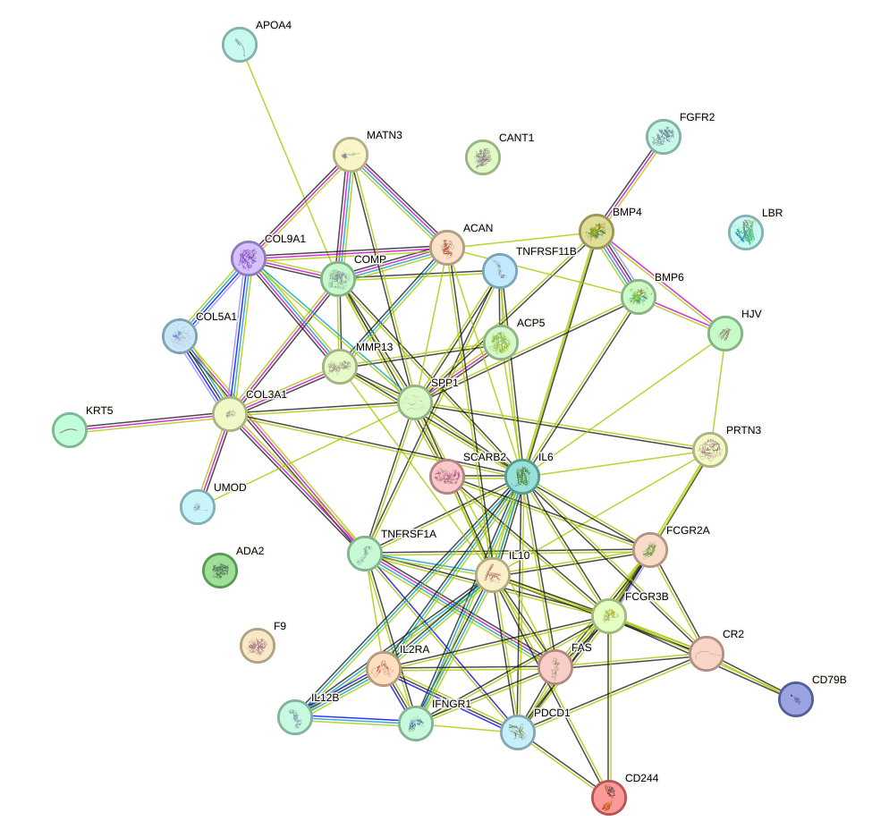
Building on this network overview, the enrichment analysis also highlighted several proteins that may be especially relevant to kidney disease and therefore merit more detailed discussion. During the function enrichment analysis, we identified serveral significant proteins. We will introduce them in-details in the following.
UMOD is among the most directly relevant proteins for kidney disease because it is produced in the thick ascending limb of the nephron and exerts kidney-specific protective functions in urine. Its reported ability to retard crystal formation and maintain supersaturated salts in solution provides a plausible mechanistic link to nephrolithiasis and tubular injury, both of which can contribute to chronic kidney damage. Equally important, UMOD binds uropathogenic E. coli and other bacteria, promoting their aggregation and urinary clearance; this is highly relevant to recurrent urinary tract infection, an established driver of pyelonephritis, renal scarring, and progressive kidney dysfunction. Thus, the listed functions support UMOD as a key mediator of tubular defense, urinary homeostasis, and protection from infectious and crystal-associated renal injury. [110] [111] [112]
In a different but related direction, several additional proteins appear to connect kidney disease with systemic complications, matrix remodeling, immune injury, or developmental repair pathways.
ACP5 is relevant to kidney disease primarily through the kidney-bone axis. Chronic kidney disease is frequently accompanied by mineral and bone disorder, characterized by altered phosphate handling, secondary hyperparathyroidism, and abnormal bone turnover. Because ACP5 is linked to osteoclastic bone resorption, it may reflect or contribute to the high-turnover skeletal state often seen in advanced renal disease. In this context, ACP5 is not a kidney-specific mediator, but it stands out as a biologically meaningful marker of systemic complications of kidney dysfunction, particularly chronic kidney disease-associated bone remodeling and disturbed mineral metabolism.
TNFRSF11B-related biology is highly pertinent to kidney disease because it connects two major pathological domains in nephrology: chronic kidney disease-mineral and bone disorder and chronic inflammation. Its role in osteoclastogenesis and bone resorption is directly relevant to the skeletal complications of chronic kidney disease, where dysregulated calcium-phosphate balance and altered bone turnover are central features. In addition, its effects on dendritic cells and T-cell proliferation suggest a broader immunoregulatory role that may influence inflammatory states accompanying renal injury. The cited signaling mechanisms involving Ca2+, NFATC1, CREB1, and mitochondrial ROS are especially notable, as oxidative stress and calcium dysregulation are also common themes in progressive kidney damage. [113]
A complementary group of proteins appears more closely tied to inflammatory and immune-mediated renal injury.
SPP1 is a particularly important kidney disease candidate because it occupies a central position at the interface of inflammation, immunity, and tissue remodeling. A cytokine profile that favors interferon-gamma and interleukin-12 while suppressing interleukin-10 indicates a strongly pro-inflammatory, type 1 immune environment. In kidney disease, such immune polarization may contribute to persistent tubulointerstitial inflammation, macrophage activation, and progressive fibrosis. Although the provided annotation is immunologic rather than renal-specific, this function is highly compatible with mechanisms that drive chronic kidney disease progression and inflammatory kidney disorders, making SPP1 one of the more compelling proteins in the list.
PRTN3 stands out because its functions map closely onto mechanisms of inflammatory renal injury. Its ability to degrade basement membrane and matrix components, including collagen IV and laminin, is especially relevant to glomerular and vascular integrity, since these structures are essential constituents of the renal filtration barrier and interstitium. Moreover, its role in neutrophil transendothelial migration and inflammatory activation suggests a contribution to leukocyte-driven kidney injury, including small-vessel and glomerular inflammation. These properties make PRTN3 mechanistically relevant to inflammatory nephropathies characterized by endothelial dysfunction, capillary injury, and tissue-destructive neutrophilic responses. [114] [115] [116] [117] [118] [119]
FCGR2A is highly relevant to kidney disease because immune complex handling and Fc receptor signaling are central to many glomerular disorders. Its role in phagocytosis, inflammatory mediator release, respiratory burst generation, and leukocyte migration indicates that it could amplify tissue injury once immune complexes or inflammatory triggers are present in the kidney. Such functions are particularly pertinent to immune-mediated nephritides, where infiltrating myeloid cells contribute to glomerular and tubulointerstitial damage through oxidative stress, degranulation, and cytokine release. Therefore, FCGR2A represents an important effector of innate immune injury in the renal microenvironment.
FCGR3B is noteworthy in kidney disease because immune complex deposition is a major pathogenic mechanism in several glomerular diseases. The annotation suggests a potentially protective buffering role, whereby FCGR3B sequesters circulating immune complexes without strongly activating neutrophils. If this trapping function is impaired, immune complexes may persist in the circulation or deposit in glomeruli, promoting complement activation and renal inflammation. Thus, even though the listed function is indirect, FCGR3B is mechanistically relevant to renal diseases driven by abnormal immune complex processing.
F9 is relevant to kidney disease through the increasingly recognized role of coagulation in renal pathology. Abnormal activation of coagulation pathways can contribute to glomerular capillary thrombosis, microvascular injury, and progressive ischemic damage within the kidney. In addition, patients with nephrotic syndrome and advanced chronic kidney disease often exhibit altered hemostatic balance. Although F9 is not kidney-specific, its central role in coagulation makes it biologically relevant to thrombotic and vascular mechanisms that may worsen renal function.
Alongside these inflammatory and vascular mediators, another subset of proteins may be more relevant to structural remodeling of the renal extracellular environment.
COL3A1 is relevant to kidney disease because collagen III is a structural extracellular matrix component and matrix remodeling is a defining feature of chronic kidney injury. Although the provided annotation emphasizes developmental neurobiology, its core identity as a fibrillar collagen makes it pertinent to renal interstitial fibrosis and scarring, where excessive deposition of fibrillar collagens disrupts tissue architecture and nephron function. Therefore, COL3A1 is best viewed as a marker and potential contributor to fibrotic remodeling rather than a kidney-specific initiator.
COL5A1 may have relevance to kidney disease through extracellular matrix organization and fibrotic remodeling. The kidney depends on tightly regulated matrix composition for normal glomerular and interstitial structure, and abnormal collagen deposition is a hallmark of chronic kidney disease progression. Its ability to interact with heparan sulfate is potentially notable because glycosaminoglycan-rich matrices are important in basement membranes and interstitial signaling. While the annotation does not directly implicate renal pathology, COL5A1 stands out as a plausible participant in matrix dysregulation and fibrosis.
CANT1 is potentially relevant to kidney disease because proteoglycans are major structural and signaling components of basement membranes and the interstitial extracellular matrix. Disturbance of proteoglycan synthesis could influence glomerular filtration barrier properties, tubular basement membrane integrity, and fibrotic remodeling. Its calcium dependence also resonates with the importance of calcium signaling in renal physiology and pathology. Although the connection is indirect, CANT1 may be important in diseases involving matrix abnormalities or altered basement membrane composition.
FGFR2 is one of the more biologically relevant developmental regulators in relation to kidney disease because branching morphogenesis is fundamental to nephrogenesis and collecting system formation. In the adult kidney, pathways governing proliferation, differentiation, and wound healing may become reactivated during injury and repair. Dysregulated FGFR2 signaling could therefore influence congenital renal anomalies, maladaptive repair, or fibrogenic responses after injury. Its broad developmental and regenerative functions make it a plausible contributor to both structural kidney defects and progression after renal damage.
SCARB2 has a more limited but still potentially meaningful connection to kidney disease through infection-related mechanisms. Viral infections can trigger kidney injury either directly through tissue tropism or indirectly through systemic inflammation and immune activation. A host receptor that facilitates viral entry may therefore influence susceptibility to infection-associated renal complications. While the annotation does not establish a kidney-specific role, SCARB2 is noteworthy in the broader context of infection-driven renal injury.
Beyond individual proteins, the network structure also suggests that a few smaller groups of proteins may function together as coherent modules. There are also small set of proteins function together to form a cluster. The network forms a single connected component comprising 13 proteins and 19 high-confidence retained associations (mean score 0.898), indicating a coherent functional module under the current STRING-based criteria, although these associations should be interpreted primarily as high-confidence functional relationships rather than uniformly direct physical interactions. The cluster is organized around several highly connected hubs, particularly IL10, IL6, TNFRSF1A, and IL2RA (all degree 5), with IFNGR1 as an additional immune-signaling hub (degree 4). Functionally, IL10RA mediates anti-inflammatory JAK1/TYK2-STAT3 signaling that limits excessive inflammatory tissue injury, whereas soluble IL6R promotes IL6 trans-signaling and is described as causative for pro-inflammatory activity and chronic inflammatory disease; the very strong IL10-IL6 association (score 0.997) therefore supports an internal balance between inflammatory amplification and anti-inflammatory restraint. IL2RA contributes to regulatory T-cell control of immune tolerance, and PDCD1-related signaling suppresses T-cell proliferation and cytokine production, suggesting that this subnetwork may modulate the magnitude and persistence of adaptive immune activation. IFNGR1 and IL12B further connect this module to antimicrobial and innate immune programs through JAK-STAT signaling, antigen-presentation-associated responses, and regulation of interferon pathways. In parallel, TNFRSF1A mediates death-inducing signaling through FADD and caspase-8, while the highest-scoring retained pair, FAS-TNFRSF1A (0.999), links apoptosis-related signaling to this inflammatory core. A second major branch of the cluster comprises extracellular matrix proteins ACAN, COMP, COL9A1, and MATN3, together with the matrix-degrading protease MMP13. Their retained associations, including ACAN-COMP (0.98), ACAN-MMP13 (0.944), COMP-MATN3 (0.923), and COL9A1-MATN3 (0.891), support a coordinated matrix structural/remodeling program in which matrix assembly and integrity are counterbalanced by proteolytic degradation. In the context of kidney disease, this combined architecture is potentially important because renal injury commonly reflects interplay among inflammatory signaling, immune tolerance failure, cell death, and extracellular matrix remodeling. Based strictly on the supplied annotations, excessive IL6-linked inflammatory signaling, insufficient IL10- and IL2RA-associated immune restraint, IFNGR1/IL12B-driven immune activation, and TNFRSF1A/FAS-associated apoptotic pathways could contribute to tissue injury, while MMP13-mediated degradation of matrix components together with altered extracellular matrix organization may favor maladaptive remodeling. Thus, the cluster is consistent with a pathogenic axis in kidney disease in which inflammatory and immune signals are tightly coupled to apoptosis and matrix turnover, processes that together may influence renal tissue damage, repair, and progression toward chronic structural dysfunction. [120] [121] [122] [123] [124] [125] [126] [127] [128] [129] [106] [107] [103] [104] [105] [8] [9]
A second, smaller component provides a more focused example of how the network may capture a distinct biological program with possible renal relevance. The network defines a single tightly connected component containing BMP4, BMP6, and HJV, with all three proteins connected and a high mean retained PPI score of 0.958. BMP6 and HJV are the strongest-supported association in the cluster (score 0.998), and this relationship is biologically coherent because HJV functions as a BMP coreceptor that enhances BMP signaling to regulate hepatic hepcidin (HAMP) expression and systemic iron homeostasis [130], whereas BMP6 is an iron-regulatory erythroid factor that suppresses hepatic hepcidin after hemorrhage, thereby promoting iron absorption and mobilization from stores [131] [132] [133] [134]. BMP4, which is also well connected in this component (degree 2), is a canonical TGF-beta superfamily growth factor that signals through BMPR1A/BMPR2 to activate SMAD1/5/8 and regulates developmental, vascular, angiogenic, and osteogenic programs; it can also engage non-canonical SRC, PI3K/AKT, and ERK/MAPK signaling [135] [136] [137] [138] [139] [140] [141]. Collectively, these features support interpretation of the cluster as a BMP-centered regulatory module linking ligand-driven morphogen signaling with iron control and tissue remodeling. In the context of kidney disease, this function is plausibly relevant because dysregulated iron handling, hepcidin control, vascular remodeling, and maladaptive tissue repair are important pathophysiologic themes in renal injury. Specifically, the BMP6-HJV axis may influence kidney disease through altered systemic iron availability and HAMP regulation, while BMP4-associated developmental and angiogenic signaling may contribute to vascular and tissue responses. BMP6 additionally regulates hepatocyte AKT-MTOR signaling, lipid uptake, and cell survival/inflammatory pathways [142] [143] [144], suggesting a broader stress-response program that could be relevant to metabolic and inflammatory aspects of kidney disease. However, the present network should be interpreted as a high-confidence protein association cluster rather than definitive proof of direct physical interactions for every pair, because the retained edges derive from mixed STRING evidence types, including functional, database, text-mining, and only some physical evidence. [130] [131] [132] [133] [134] [135] [136] [137] [138] [139] [140] [141] [142] [143] [144]
Peptide catabolic process refers to the set of biochemical reactions that degrade peptides into smaller peptide fragments and ultimately into free amino acids. This pathway is essential for maintaining protein and peptide homeostasis, terminating peptide signaling, recycling amino acid substrates, and preventing the accumulation of bioactive or potentially toxic peptide intermediates. In the kidney, peptide breakdown has particular physiological importance because the organ is continuously exposed to circulating small proteins and peptides through filtration and tubular handling. Renal cells participate in the uptake, processing, and degradation of filtered peptides, thereby contributing to metabolic balance, regulation of signaling molecules, and preservation of tissue integrity. More broadly, alteration of peptide catabolic process may influence the abundance and duration of action of regulatory peptides, including therapeutic peptide hormones, and may also reflect wider changes in cellular stress, inflammation, fibrosis, and impaired clearance that accompany chronic kidney disease. [145] [146]
Against this biological background, the provided publications suggest that peptide catabolic process may be related to kidney disease primarily through its effects on the handling and biological activity of peptide mediators that influence disease progression. The review on glucagon-like peptide-1 receptor agonists indicates that peptide-based signaling is clinically relevant in diabetic chronic kidney disease, because enhancing the action of glucagon-like peptide-1 is associated with slower progression of kidney dysfunction and improved renal outcomes relative to some alternative glucose-lowering therapies [145]. This observation, while indirect, suggests that pathways governing peptide stability and degradation may be important determinants of kidney-protective signaling, since altered peptide catabolism could modify the availability and duration of action of beneficial peptides. In parallel, the study of chronic kidney disease progression centered on the NEAT1, micro ribonucleic acid-124-3p, and C-C motif chemokine ligand 2 regulatory axis shows that advancing kidney disease is strongly associated with inflammatory activation and renal interstitial fibrosis, with C-C motif chemokine ligand 2 identified as a central mediator linked to disease severity [146]. Although this second study does not directly measure peptide breakdown enzymes, it places peptide-mediated inflammatory signaling within the core biology of chronic kidney disease progression. Taken together, these publications support a cautious model in which peptide catabolic process may be relevant to kidney disease because the kidney both regulates and responds to bioactive peptides; disruption of peptide turnover could alter protective endocrine signals on one hand and sustain injurious inflammatory and fibrotic signaling on the other, thereby contributing to the transition from metabolic stress to persistent chronic kidney injury. [145] [146]
To complement this literature-based context, the network analysis provides a more focused view of how kidney disease-associated proteins annotated to this pathway are organized. There were 6 kidney disease-associated proteins significantly enriched in the pathway of peptide catabolic process. Within this 6-protein set, 1 high-confidence protein-protein interaction edge was retained, connecting 2 proteins, which corresponds to 33.3 percent of the analyzed proteins participating in the retained network, with a mean retained interaction score of 0.883. The highest-degree proteins were angiotensin converting enzyme and membrane metalloendopeptidase, each with degree 1 and weighted score 0.883, forming the only connected component in the retained network, while 4 of 6 proteins, namely a disintegrin and metalloproteinase with thrombospondin motifs 13, carboxypeptidase A4, cathepsin H, and leukotriene A4 hydrolase, had no retained edges under the applied high-confidence criteria. The top retained pair was angiotensin converting enzyme and membrane metalloendopeptidase with a score of 0.883, supported by functional association and text-mining evidence, which should be interpreted as a high-confidence association rather than over-stated as direct physical binding.
We include the protein-protein interaction network visualization below together with the STRING network page for interactive inspection.
Building on this network overview, the function enrichment analysis highlights several proteins that may help explain how this pathway could intersect with kidney disease biology. During the function enrichment analysis, we identified serveral significant proteins. We will introduce them in-details in the following.
ADAMTS13 is highly relevant to kidney disease because it is a central regulator of microvascular thrombosis. By cleaving ultra-large vWF multimers, ADAMTS13 limits excessive platelet adhesion and thrombus formation within small vessels. This function is particularly important in renal pathology because the kidney is highly dependent on intact glomerular and arteriolar microcirculation. Reduced ADAMTS13 activity can promote thrombotic microangiopathy, endothelial injury, and impaired renal perfusion, all of which may contribute to acute kidney injury and progressive renal damage. Its role is therefore especially notable in kidney disorders characterized by vascular injury, complement-endothelial dysfunction, or thrombotic complications, where dysregulated hemostasis can directly damage glomerular capillaries and renal microvessels.
In a somewhat different but complementary way, LTA4H appears relevant because it sits at the interface between inflammatory amplification and inflammatory resolution in renal tissue. LTA4H stands out as one of the most compelling kidney disease-related proteins in this list because it occupies a pivotal position at the interface of inflammation and its resolution. Through its epoxide hydrolase activity, LTA4H generates LTB4, a potent pro-inflammatory lipid mediator that promotes leukocyte recruitment and activation. In the kidney, excessive inflammatory cell infiltration is a major driver of glomerular and tubulointerstitial injury in conditions such as acute kidney injury, diabetic kidney disease, and immune-mediated nephropathies. At the same time, LTA4H also has potentially protective functions: its aminopeptidase activity can degrade the neutrophil chemoattractant PGP, and it participates in the formation of resolvin E1 and 18S-resolvin E1, which have anti-inflammatory and pro-resolving properties. This duality is particularly important in renal disease, where the balance between persistent inflammation and effective resolution often determines whether injury progresses to fibrosis and chronic kidney disease. Therefore, LTA4H is mechanistically relevant not only as an amplifier of renal inflammation through LTB4 production, but also as a possible modulator of inflammatory resolution. [147] [148] [149]
Consistent with the broader theme of intracellular protein turnover, CTSH may represent a more indirect but still potentially meaningful connection to kidney disease. CTSH may have a meaningful connection to kidney disease because lysosomal protein degradation is essential for renal cellular homeostasis, particularly in proximal tubular epithelial cells, which are highly active in endocytosis and protein processing. Disruption of lysosomal proteolysis can contribute to accumulation of damaged proteins, cellular stress, and tubular dysfunction, all of which are recognized mechanisms in chronic kidney disease and proteinuric renal injury. Although the function provided here is general, it suggests that CTSH may influence pathways linked to proteostasis, autophagy-lysosomal flux, and tissue remodeling in the kidney. These processes are increasingly appreciated as important determinants of susceptibility to tubular injury and progression to fibrosis.
By comparison, CPA4 appears to have a more tentative and less direct relationship to renal pathobiology based on the information currently provided. CPA4 is of possible, though less direct, interest in kidney disease because of its role in peptide processing. The kidney is both a target and regulator of multiple peptide hormones, and dysregulation of peptide catabolism can influence vascular tone, inflammation, and tissue remodeling. If CPA4 participates in peptide hormone or neuropeptide turnover in renal or systemic contexts, it could potentially affect pathways relevant to blood pressure regulation, renal hemodynamics, or fibrotic signaling. However, based on the function provided, its connection to kidney disease is more speculative than that of ADAMTS13 or LTA4H, since no direct renal or inflammatory mechanism is explicitly indicated here. [150]
Taken together, these individual protein-level observations lead naturally to the small interaction cluster that was retained at high confidence in the network. There are also small set of proteins function together to form a cluster. The cluster contains ACE and MME and forms a single connected component with 2 proteins and 1 retained high-confidence association edge (mean score 0.883). Both proteins are also the highest-degree nodes in this small network fragment with degree 1 each, but the network evidence remains limited under the current retained-edge criteria because the cluster is supported by only one retained pair. The ACE-MME association is supported by STRING functional and text-mining evidence, which supports a functional relationship but should not be over-interpreted as direct physical binding. Functionally, the cluster converges on extracellular peptide processing and peptide-mediated signaling. ACE is explicitly described as a dipeptidyl carboxypeptidase that removes dipeptides from the C-terminus of substrates, and it has isoform-specific activities, including a testis-specific isoform required for male fertility; a possible GPIase activity has also been reported, although this remains uncertain and has been challenged. MME is described as participating in neurotensin-related endocrine or paracrine regulation of fat metabolism and in smooth muscle contraction by similarity. Taken together, these annotations suggest that the cluster may regulate the availability, turnover, or signaling consequences of bioactive peptides. In the context of kidney disease, such a module may be relevant because dysregulation of peptide processing and paracrine signaling can plausibly influence renal tissue signaling, vascular or smooth muscle-associated tone, and metabolic regulation; however, based strictly on the supplied annotations, the kidney-specific contribution is indirect and should be considered a functional hypothesis rather than a disease-specific mechanism established here. Therefore, the main interpretation is that this cluster represents a small, high-confidence but sparsely supported functional association linked to peptide metabolism and signaling processes that could contribute to kidney disease through altered extracellular regulatory peptide handling. [151] [152] [153] [154] [155] [156] [157] [158]
Signaling receptor regulator activity refers to the molecular function of factors that bind to a receptor and alter its activity, thereby increasing, decreasing, stabilizing, or otherwise modulating downstream signal transduction. This functional category is broad and includes extracellular ligands, soluble decoy molecules, co-regulators, antagonists, agonists, and membrane-associated modulators that influence receptor conformation, ligand binding, receptor internalization, or signal duration. Because receptors govern cellular responses to growth factors, cytokines, chemokines, hormones, morphogens, and stress signals, receptor regulators are central determinants of tissue homeostasis. In the kidney, receptor-regulatory processes are especially important because renal development, glomerular filtration barrier maintenance, tubular transport, vascular tone, inflammatory recruitment, fibrotic remodeling, and repair after injury all depend on tightly controlled receptor signaling. Dysregulation of receptor-modulating molecules can therefore amplify pathogenic pathways such as inflammation, oxidative stress, endothelial dysfunction, mesangial activation, podocyte injury, tubular epithelial dedifferentiation, fibroblast activation, and extracellular matrix accumulation. As a result, signaling receptor regulator activity is best understood not as a single linear pathway, but as a higher-order regulatory function that shapes the intensity and specificity of many kidney-relevant signaling networks.
This broad conceptual framework is important for interpreting the enrichment results that follow. No relevant publications were provided for direct analysis, so a publication-supported pathway-to-disease synthesis cannot be made from the supplied evidence set. Nevertheless, from a biological perspective, signaling receptor regulator activity is highly relevant to kidney disease because kidney injury and progression are driven by abnormal control of receptor-mediated communication among glomerular cells, tubular epithelial cells, interstitial fibroblasts, endothelial cells, and infiltrating immune cells. Molecules with signaling receptor regulator activity can influence whether receptors transmit protective or pathogenic signals, thereby affecting inflammatory activation, cell survival, hemodynamic regulation, fibrotic transformation, and regenerative responses. In kidney disease, perturbation of receptor regulation may enhance responsiveness to injurious cytokines and growth factors, prolong receptor activation, weaken feedback inhibition, or alter ligand competition, all of which can promote chronic tissue damage. Conversely, restoration of appropriate receptor modulation may limit maladaptive signaling and preserve renal structure and function. However, because no publications were supplied, any disease linkage remains a general mechanistic inference rather than a literature-supported conclusion specific to the provided evidence.
Against this biological background, the enrichment and network statistics suggest that this function captures a substantial kidney disease-relevant protein set. There were 153 kidney disease-associated proteins significantly enriched in the function of signaling receptor regulator activity, a broad receptor-modulating functional category that is highly relevant to renal homeostasis, inflammatory signaling, vascular regulation, tissue repair, and fibrotic remodeling. Within this enriched protein set, the retained high-confidence protein-protein interaction network contained 382 edges connecting 119 of 153 proteins, corresponding to a connected proportion of 77.8 percent, with a mean retained interaction score of 0.882, indicating a dense and high-confidence interaction structure under the applied filtering criteria.
A closer look at network topology further supports the view that a relatively small number of inflammatory and regulatory hubs organize much of this structure. Network centrality within the retained interaction set was led by CXCL8 with degree 31 and weighted score 27.207, followed closely by IL6 with degree 30 and weighted score 26.491, IL10 with degree 28 and weighted score 24.963, TNF with degree 28 and weighted score 24.657, and CXCL9 with degree 27 and weighted score 23.800. The network was dominated by a main connected component containing 107 proteins and 375 edges with a mean score of 0.883, whereas the remaining connected structure was distributed across three much smaller components of 4, 2, and 2 proteins, together with 34 proteins without retained edges under the current high-confidence criteria; the strongest retained associations included FST-MSTN, CCL21-CXCL9, APOA1-APOA2, CCL25-CXCL11, CCL11-CXCL9, CCL11-CXCL10, CCL20-CXCL11, and IL18-IL18BP, each with a score of 0.999, although these associations should be interpreted as high-confidence functional protein associations rather than assumed direct physical binding in every case.
To complement these summary statistics, we include the network visualization and the corresponding external resource below. We include the protein-protein interaction network visualization below, together with the interactive STRING network page.
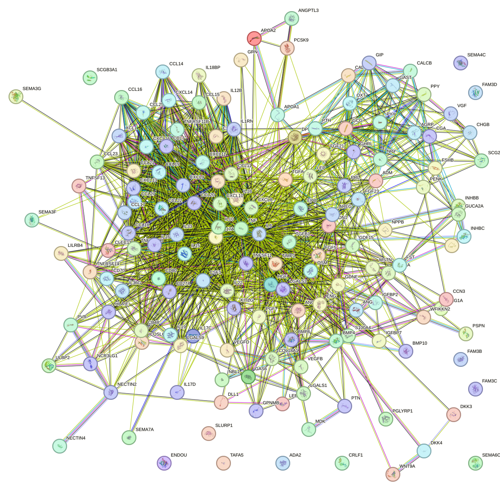
Having outlined the global network structure, we next turn to individual proteins that may be especially informative for kidney disease interpretation. During the function enrichment analysis, we identified serveral significant proteins. We will introduce them in-details in the following.
VEGFA stands out as one of the most relevant proteins for kidney disease because renal structure and function are critically dependent on a specialized microvascular network, particularly within the glomerulus and peritubular capillary bed. Dysregulated VEGFA signaling is strongly linked to major renal disease mechanisms, including glomerular endothelial injury, altered vascular permeability, proteinuria, hypoxia, and progressive tubulointerstitial damage. In the kidney, balanced VEGFA activity is required to preserve endothelial survival and filtration barrier integrity, whereas either deficiency or excess can be pathogenic. Excessive VEGFA signaling may contribute to abnormal permeability and inflammatory vascular remodeling, while insufficient signaling may impair endothelial maintenance and capillary rarefaction, thereby accelerating chronic kidney disease progression. The described activation of MAPK, AKT, FAK, SRC, and NOS pathways is especially relevant because these cascades control endothelial survival, cytoskeletal organization, and nitric oxide production, all of which are central to renal hemodynamics and microvascular homeostasis. Accordingly, VEGFA is highly pertinent to diabetic kidney disease, ischemic kidney injury, and fibrotic progression.
In a related but somewhat broader injury-response context, MDK may connect inflammatory recruitment with epithelial survival and vascular adaptation. MDK is highly relevant to kidney disease because it directly connects inflammation, injury response, vascular remodeling, and tissue repair. The functional description specifically notes epithelial cell survival after renal damage, which makes MDK particularly compelling in the context of acute kidney injury and the transition from acute injury to chronic fibrosis. Its ability to recruit neutrophils and macrophages to sites of inflammation suggests a role in amplifying renal inflammatory infiltrates, while its pro-survival and pro-angiogenic effects may influence tubular recovery and microvascular adaptation. At the same time, sustained MDK activity could contribute to maladaptive repair, persistent inflammation, and fibrogenic remodeling. Its interactions with MAPK, AKT, integrin, and NOTCH-related pathways further support a broad role in renal epithelial-mesenchymal crosstalk and vascular responses. Therefore, MDK may be mechanistically relevant both as a mediator of injury severity and as a determinant of whether renal repair is adaptive or progresses toward chronic kidney disease. [159] [160] [161] [162] [163] [164] [165] [166] [167] [168]
Another protein that may fit within developmental and injury-reactivation frameworks is DLL1. DLL1 is of substantial interest for kidney disease because Notch signaling is a well-established regulator of nephrogenesis and a recognized driver of renal injury responses in the adult kidney. The provided annotation explicitly states that DLL1 plays a role during nephron development through the Notch signaling pathway, highlighting its developmental relevance to nephron patterning and epithelial differentiation. In disease settings, reactivation of developmental pathways such as Notch commonly contributes to tubular injury, dedifferentiation, maladaptive repair, and fibrosis. DLL1-mediated effects on angiogenesis and endothelial responsiveness to VEGFA are also noteworthy, since microvascular instability and capillary loss are major determinants of chronic kidney disease progression. Thus, DLL1 may be important both in congenital or developmental kidney abnormalities and in acquired kidney disease through persistent Notch activation that promotes epithelial dysfunction and interstitial remodeling. [169] [170]
This developmental signaling theme also extends to CCN3, which may integrate hypoxic and vascular responses with receptor-level control. CCN3 is relevant to kidney disease because it integrates Notch signaling, angiogenesis, and hypoxia-related regulation, three processes that are central to renal injury and repair. The kidney is highly sensitive to oxygen imbalance, and chronic hypoxia is a major mechanism driving tubulointerstitial fibrosis. The reported ability of CCN3 to enhance HIF1A function suggests potential involvement in hypoxic adaptation pathways. In parallel, its negative regulation of endothelial proliferation and migration indicates that CCN3 may influence renal microvascular remodeling, capillary stability, and ischemic susceptibility. Because dysregulated Notch signaling contributes to podocyte injury, tubular epithelial activation, and fibrogenesis, a protein with receptor-level control over differentiation and apoptosis is particularly noteworthy. CCN3 may therefore represent a mechanistic link between developmental signaling programs and the vascular-hypoxic remodeling observed in progressive kidney disease.
A closely related pathway-level consideration involves Wnt signaling modulators, beginning with DKK3. DKK3 is highly pertinent to kidney disease because Wnt/beta-catenin signaling is a major pathway in renal development, tubular injury responses, fibroblast activation, and progression to chronic fibrosis. Although the annotation emphasizes developmental and bone-related roles, the described function as a Wnt antagonist is directly relevant to kidney pathobiology. In the injured kidney, excessive or prolonged Wnt signaling has been associated with epithelial dedifferentiation, profibrotic transcriptional programs, and interstitial matrix accumulation. A modulator such as DKK3 may therefore influence the balance between adaptive repair and fibrotic progression. Given the importance of LRP5/6-dependent signaling in tissue remodeling, DKK3 stands out as a plausible regulator of chronic kidney disease progression and a candidate biomarker or mediator of tubulointerstitial injury.
Within the same signaling axis, DKK4 appears noteworthy for similar reasons, although the current annotation is less kidney-specific. DKK4 is also potentially relevant to kidney disease because of its ability to suppress canonical Wnt signaling, a pathway deeply implicated in nephron development and in the maladaptive repair responses that follow renal injury. In chronic kidney disease, persistent Wnt activation is commonly linked to fibrosis, tubular epithelial stress, and altered regenerative programs. Therefore, DKK4 may affect disease susceptibility or progression by modulating the intensity and duration of Wnt pathway activation. Although the current annotation is general and does not explicitly mention the kidney, the pathway-level relevance is strong enough to make DKK4 noteworthy, especially in fibrotic and developmental renal disorders.
Beyond local renal signaling, some enriched proteins may be relevant through systemic metabolic regulation, as illustrated by FGF21. FGF21 is important in kidney disease primarily through its close connection to systemic metabolic control. Diabetes and insulin resistance are dominant drivers of chronic kidney disease, and proteins that regulate glucose handling and insulin sensitivity can have major downstream effects on renal injury. By improving glucose uptake and systemic insulin responsiveness, FGF21 may influence the severity of diabetic kidney disease, glomerular hyperfiltration, lipotoxicity, oxidative stress, and inflammatory signaling. Although its annotated function is not kidney-specific, its endocrine role makes it highly relevant to metabolic nephropathy. FGF21 is therefore best viewed as a systemic modifier of renal risk, with potential importance in diabetic and obesity-associated kidney disease.
A related systemic stress-associated factor is GDF15, which may be especially informative in advanced disease states. GDF15 is relevant to kidney disease because it is a canonical stress-induced factor and is closely linked to systemic illness, inflammation, anorexia, and metabolic adaptation. In patients with chronic kidney disease, elevated GDF15 is often interpreted as a marker of cellular stress, mitochondrial dysfunction, inflammation, and poor nutritional status. The functional annotation emphasizes its role in stress-induced appetite suppression and downstream RET-MAPK/AKT signaling, which is especially pertinent to renal cachexia and the wasting syndromes frequently seen in advanced kidney disease. Thus, while GDF15 may not be a direct renal effector in this list, it stands out as a clinically meaningful biomarker and potential mediator of systemic complications associated with chronic kidney dysfunction and uremic stress. [171] [172] [173] [174] [175] [176] [177] [178] [179] [180] [181] [182] [183]
In contrast to these systemic modifiers, NPPB may be connected more directly to fluid balance and cardiorenal physiology. NPPB is directly relevant to kidney disease because it lies at the interface of cardiac and renal physiology and is central to volume homeostasis. Its natriuretic and diuretic actions make it highly important in disorders characterized by fluid overload, reduced glomerular filtration, cardiorenal syndrome, and hypertension. In chronic kidney disease, altered NPPB signaling reflects and influences the body’s compensatory response to sodium retention and volume expansion. Beyond its established clinical use as a biomarker in heart failure, the functional annotation supports a mechanistic role in maintaining fluid-electrolyte balance, which is a core aspect of kidney function. Therefore, NPPB is especially relevant to edema, hypertensive kidney injury, and cardiorenal interactions. [184] [185]
A conceptually related regulator is NPPC, whose relevance may arise from shaping natriuretic peptide availability rather than acting as a primary signaling driver. NPPC is relevant to kidney disease because it modulates natriuretic peptide bioavailability and thereby may affect diuresis, blood pressure control, and extracellular volume regulation. Even though it functions primarily as a clearance receptor rather than a signaling guanylate cyclase receptor, this role is physiologically important in renal disease states where sodium balance and vascular tone are disturbed. By shaping the local activity of natriuretic peptides, NPPC may influence susceptibility to hypertension, fluid retention, and cardiorenal dysfunction. Its relevance is therefore indirect but meaningful, particularly in chronic kidney disease accompanied by impaired volume handling and elevated cardiovascular risk. [186] [187]
A more indirect homeostatic connection may be present for GUCA2A. GUCA2A may have a more indirect but still potentially meaningful connection to kidney disease through cyclic GMP biology and fluid-electrolyte regulation. Although the annotation is centered on intestinal guanylate cyclase activation, guanylate cyclase signaling intersects with systemic salt and water balance, which are fundamental to renal physiology. In addition, intestinal-renal crosstalk is increasingly recognized in chronic kidney disease, particularly in relation to electrolyte handling, uremic toxin generation, and mucosal barrier dysfunction. Therefore, GUCA2A is not a primary kidney disease candidate in this list, but it may be relevant in broader homeostatic and cardiorenal contexts.
The next group of proteins is more strongly aligned with inflammatory and endothelial activation pathways. IL17D is notable for kidney disease because it can promote endothelial inflammatory activation, a process central to many renal pathologies including glomerulonephritis, vasculitic injury, ischemia-reperfusion injury, and chronic inflammatory fibrosis. The induction of IL6, IL8, and GM-CSF suggests that IL17D may amplify leukocyte recruitment, cytokine cascades, and endothelial dysfunction within the renal microvasculature. Since endothelial activation contributes to capillary leak, inflammatory cell infiltration, and progressive tissue damage, IL17D may participate in both acute and chronic kidney inflammatory states. Its main relevance is therefore as a potential mediator of vascular inflammation in the kidney.
Within this inflammatory context, IL36G may be particularly relevant to innate immune amplification. IL36G is highly relevant to kidney disease because NF-kappa B-driven innate immune activation is a major mechanism of renal inflammation and fibrosis. The ability of IL36G to stimulate dendritic cell maturation and induce a broad panel of pro-inflammatory cytokines suggests that it could amplify intrarenal immune activation in tubulointerstitial nephritis, autoimmune kidney disease, and inflammatory progression after acute injury. Its role in epithelial barrier inflammation is also noteworthy, as renal tubular epithelium can behave as an immunologically active barrier-like tissue during injury. Thus, IL36G may contribute to a pro-inflammatory microenvironment that promotes leukocyte recruitment, cytokine amplification, and progression to chronic kidney damage.
Balancing these pro-inflammatory candidates, LGALS1 may represent a more regulatory immune modulator. LGALS1 is relevant to kidney disease because it is an immunoregulatory lectin capable of reshaping T-cell responses, apoptosis, and inflammatory balance. These functions are important in autoimmune and inflammatory kidney diseases, where pathogenic T-cell activation and Th17-associated responses contribute to glomerular and interstitial injury. The reported suppression of Th17 differentiation is especially notable, as the Th17 axis has been implicated in several forms of nephritis. In addition, regulation of apoptosis and cell differentiation may influence renal epithelial and immune cell turnover in damaged tissue. Therefore, LGALS1 may act as a modulator of renal immune injury, potentially exerting protective or context-dependent effects depending on the inflammatory milieu. [69]
This immune-cell trafficking and remodeling theme also highlights SEMA7A. SEMA7A is of particular interest in kidney disease because it links immune activation, macrophage behavior, and cell migration with intracellular signaling pathways known to drive tissue remodeling. In the kidney, macrophage recruitment and activation are major determinants of both acute injury severity and chronic fibrotic progression. SEMA7A-mediated activation of FAK and MAPK pathways may promote inflammatory cell trafficking and local tissue responses, while its effects on monocytes, macrophages, and T-cell-mediated immunity suggest a broader role in sustaining renal inflammation. Because progressive kidney disease depends on coordinated inflammatory and migratory programs, SEMA7A represents a plausible contributor to tubulointerstitial injury and fibrosis.
A potentially related but somewhat more exploratory candidate is TAFA5. TAFA5 may be relevant to kidney disease because of its effects on macrophage migration and vascular remodeling. Macrophage accumulation is a hallmark of many renal diseases and strongly influences the transition from acute injury to chronic fibrosis. Through FPR2-dependent chemotaxis and ERK/AKT signaling, TAFA5 may modulate inflammatory cell recruitment into injured renal tissue. Its inhibitory effects on vascular smooth muscle proliferation and neointima formation also suggest possible relevance to renovascular disease and the vascular complications of chronic kidney disease. Although the kidney-specific evidence in the annotation is limited, the underlying biology supports a plausible role in renal inflammation and vascular injury.
Returning to vascular and epithelial stress biology, IGFBP7 may be notable at the interface of angiogenesis and injury response. IGFBP7 is relevant to kidney disease because it combines angiogenic and cell-adhesion functions with stress-associated biology that is often important in renal epithelial injury. Its ability to regulate angiogenesis via CD93 is particularly meaningful in the kidney, where endothelial-tubular interactions are essential for maintaining oxygen delivery and filtration function. Altered cell adhesion and vascular responses are central to both acute kidney injury and chronic kidney disease progression. Even though the annotation here is concise, IGFBP7 stands out as a plausible participant in renal microvascular dysfunction and epithelial stress responses, making it potentially relevant as both a mechanistic factor and a biomarker in kidney injury contexts. [188]
At a more exploratory mechanistic level, ENDOU may point toward post-transcriptional regulation as an additional layer of disease modulation. ENDOU is potentially relevant to kidney disease because post-transcriptional regulation of mRNA stability is increasingly recognized as an important determinant of inflammatory signaling, epithelial stress responses, and fibrosis. An RNase that selectively cleaves mRNAs could influence the expression of cytokines, stress-response genes, transporters, or fibrotic mediators in renal cells. While the annotation does not provide kidney-specific evidence, the mechanism is biologically important and may be particularly relevant in conditions where altered RNA processing contributes to maladaptive injury responses. ENDOU is therefore a more exploratory candidate compared with the stronger vascular and inflammatory proteins listed above.
Finally, WNT9A may be considered as another pathway-relevant developmental ligand with possible importance in renal injury reprogramming. WNT9A is potentially connected to kidney disease through the canonical Wnt/beta-catenin pathway, which is a major regulator of renal development and fibrosis. Although the annotation focuses on skeletal biology, Wnt ligands as a class are highly relevant to nephrogenesis and to the reactivation of developmental pathways during renal injury. Persistent Wnt signaling in the adult kidney is commonly associated with tubular dedifferentiation, fibroblast activation, and matrix deposition. Therefore, WNT9A merits consideration as a pathway-relevant protein even though direct renal functions are not specified in the provided annotation.
Beyond single proteins, the network also contains smaller groups of proteins that appear to function together and may provide additional mechanistic context. There are also small set of proteins function together to form a cluster.The overall architecture of this cluster is consistent with a coordinated response system that links inflammation, endothelial biology, epithelial defense, and structural remodeling, all of which are highly relevant to kidney disease. Network-level support for this interpretation is strong because all 107 proteins are contained within a single connected component with 375 retained high-confidence associations (mean retained PPI score 0.883), and the highest-degree nodes are canonical inflammatory hubs, including CXCL8 (degree 31), IL6 (degree 30), IL10 (degree 28), TNF (degree 28), and CXCL9 (degree 27). Functionally, many members promote leukocyte trafficking and inflammatory amplification, including CCL3, CCL20, CCL21, CCL22, CCL23, CCL25, CCL27, CXCL9, CXCL10, CXCL11, CXCL13, CXCL14, CXCL16, XCL1, IL18, IL15, IL17C, and TNF; several of these are connected by very high-confidence associations, such as CCL21-CXCL10, CCL21-CXCL9, CXCL10-CXCL9, CXCL10-CXCL11, and CXCL11-CXCL9 (all score 0.999), supporting a tightly coordinated chemokine subnetwork. In kidney disease, such programs are plausibly linked to recruitment of monocytes, macrophages, T cells, NK cells, dendritic cells, and neutrophils into renal tissue, thereby sustaining inflammatory injury. Counter-regulatory pathways are also present, including IL10 signaling, IL18 neutralization by IL18BP (score 0.999), and immune inhibitory checkpoints involving CD274 and CD80 (score 0.999), indicating that this cluster contains both inflammatory drivers and endogenous brakes on tissue damage. A second major theme is vascular and endothelial dysfunction, which is central to renal injury. EDN1 is a vasoconstrictor that promotes mesangial signaling and vascular wall remodeling via ROCK and NFATC3; ADM signals through CALCRL-RAMP complexes; ANGPT2/TEK-related signaling regulates angiogenesis, endothelial survival, permeability, and vascular quiescence; ENG modulates TGF-beta/BMP signaling in endothelium; and VEGF-family members contribute to vascular and lymphatic remodeling. Together, these proteins support a role for the cluster in altered renal perfusion, glomerular endothelial stress, inflammatory vascular leak, and maladaptive angiogenic responses. A third theme is epithelial and barrier defense. IL17C acts in epithelial innate immunity through NF-kappa-B and MAPK pathways and can synergize with IL22, TNF, and IL1B; IL18 promotes inflammatory mediator production through NF-kappa-B; IL33 has endothelial inflammatory regulatory functions; and IL22-related barrier functions are linked to epithelial permeability and ion flux. In the kidney, these activities are relevant to tubular epithelial stress, barrier adaptation, and inflammatory cross-talk with infiltrating immune cells. The cluster also contains matrix and remodeling mediators such as TIMP1, which inhibits multiple metalloproteinases and also signals through CD63/ITGB1, and S100A4, which promotes cell motility and invasiveness, suggesting potential roles in fibrosis and structural reorganization. Bone-mineral and endocrine elements, including TNFSF11 and its decoy receptor TNFRSF11B (score 0.999), FGF23/Klotho-related signaling, EPO, and CALCA/CALCB, further indicate relevance to systemic complications of kidney disease, particularly chronic kidney disease-associated mineral dysregulation and bone remodeling. Overall, the cluster most plausibly captures a kidney disease-relevant program in which inflammatory chemokine circuits, endothelial dysfunction, epithelial stress signaling, and tissue remodeling act together to drive renal injury progression while being modulated by anti-inflammatory and checkpoint pathways. [189] [6] [7] [190] [191] [192] [193] [194] [195] [3] [4] [5] [196] [197] [198] [199] [8] [9] [103] [104] [105] [200] [201] [202] [203] [204] [205] [206] [207] [208] [209] [210] [211] [212] [213] [214] [215] [46] [47] [48] [216] [217] [218] [219] [220] [221] [222] [223] [224] [225] [226] [227] [228] [229] [230] [35] [36] [34] [37] [38] [42] [231] [232] [233] [234] [235] [50] [49] [51] [52] [53] [54] [113] [65] [66] [67] [68] [236] [237] [238] [239] [240] [241] [242] [243] [244] [245] [246] [247] [248] [131] [132] [133] [134] [144] [143]
In addition to this large inflammatory-vascular component, a much smaller lipid-associated component may point to a distinct but potentially complementary disease mechanism. The cluster contains four proteins within a single connected component (4 proteins, 3 retained edges; mean retained PPI score 0.851), with APOA1 and PCSK9 serving as the highest-degree nodes (degree 2 each), consistent with their central roles in the retained association network. Functionally, APOA1 promotes reverse cholesterol transport and acts as a cofactor for LCAT, while APOA2 may stabilize HDL structure and influence HDL metabolism, supporting a shared HDL-related axis; this is also the strongest retained association in the network (APOA1-APOA2, score 0.999), with evidence including string_physical alongside coexpression, database, functional, and text-mining support. PCSK9 is a major regulator of plasma cholesterol homeostasis through degradation of LDLR family members and related control of lipoprotein handling, and it is linked in the network to APOA1 (score 0.781) and ANGPTL3 (score 0.773), although these latter edges are supported by functional and text-mining evidence and therefore should be interpreted as high-confidence associations rather than direct physical interactions. ANGPTL3 adds a kidney-relevant cellular dimension because it is implicated in angiogenesis, endothelial signaling through integrin alpha-V/beta-3 with activation of FAK, MAPK, and Akt pathways, and may increase podocyte motility, modulate glomerular endothelial cell properties, and induce actin filament rearrangements in podocytes via integrin alpha-V/beta-3 and Rac1 activation [249] [250] [251]. Taken together, the cluster may contribute to kidney disease by linking dysregulated lipid homeostasis with glomerular cell dysfunction: altered cholesterol transport and receptor turnover may affect circulating lipoprotein balance, while ANGPTL3-associated effects on podocytes and glomerular endothelial cells provide a plausible route to impairment of the filtration barrier. However, the network evidence is modest under the current retained-edge criteria, as only three high-confidence associations connect the four proteins, so mechanistic inferences should remain cautious. [252] [253] [254] [255] [256] [257] [258] [249] [250] [251] [259]
The cytokine-cytokine receptor interaction pathway comprises the extracellular signaling network through which secreted immune and stromal mediators bind to specific cell-surface receptors and regulate inflammation, cell survival, proliferation, differentiation, migration, tissue repair, and fibrosis. This pathway includes interleukins, interferons, tumor necrosis factor family ligands, chemokines, colony-stimulating factors, transforming growth factor family members, and related receptors expressed on immune cells, endothelial cells, epithelial cells, mesangial cells, podocytes, and fibroblasts. Ligand binding triggers intracellular signaling cascades that alter transcriptional programs and cellular behavior, thereby coordinating host defense and tissue homeostasis. In the kidney, cytokine-cytokine receptor interactions are central to communication among infiltrating leukocytes and resident renal cells during injury and repair. Dysregulation of this pathway can amplify inflammatory cell recruitment, enhance endothelial and tubular injury, promote mesangial activation, stimulate extracellular matrix deposition, and drive progression from acute injury to chronic fibrosis. Because kidney disease is strongly shaped by inflammatory and fibrotic processes, this pathway is broadly relevant to many forms of renal pathology, including glomerular disease, tubulointerstitial injury, diabetic kidney disease, immune-mediated nephritis, and chronic kidney disease progression.
Against this biological background, the pathway can be interpreted as a plausible mechanistic framework for integrating immune activation with renal parenchymal injury and repair responses.
No relevant publications were provided in the input, so a citation-supported synthesis specific to the supplied literature cannot be performed. Nevertheless, based on established biological understanding, the cytokine-cytokine receptor interaction pathway is highly relevant to kidney disease because renal injury is accompanied by intense signaling between immune cells and intrinsic kidney cells. Proinflammatory cytokines and chemokines increase leukocyte recruitment into the glomerular and tubulointerstitial compartments, intensify endothelial dysfunction, and promote injury to podocytes and tubular epithelial cells. At the same time, profibrotic cytokine signaling activates fibroblasts and myofibroblast-like cells, increases extracellular matrix production, and contributes to glomerulosclerosis and tubulointerstitial fibrosis, which are major determinants of irreversible renal function loss. Persistent activation of cytokine receptors can also sustain maladaptive repair, perpetuate chronic inflammation, and worsen capillary rarefaction and tissue hypoxia. Thus, even in the absence of pathway-specific publications in the provided list, this pathway should be regarded cautiously as a core mechanistic axis in kidney disease pathogenesis and progression, linking immune activation, parenchymal cell injury, and fibrotic remodeling.
This conceptual relevance is further supported by the scale and structure of the enriched protein set identified in the present analysis.
There were 109 kidney disease-associated proteins analyzed in the function enrichment analysis of the cytokine-cytokine receptor interaction pathway, a signaling system that is highly relevant to renal inflammation, cellular injury responses, tissue repair, and fibrosis. This protein set is consistent with the central role of cytokine-mediated communication in kidney disease, where dysregulated signaling between infiltrating immune cells and resident renal cells can promote progression across glomerular, tubulointerstitial, diabetic, immune-mediated, and chronic forms of renal injury.
To better define how these proteins may relate to one another, the network topology provides an additional layer of evidence.
Within this 109-protein pathway set, 529 high-confidence protein-protein association edges were retained, connecting 102 proteins and yielding a mean retained interaction score of 0.887, which supports a dense and strongly supported interaction structure under the applied confidence criteria. Network centrality was led by tumor necrosis factor with degree 45 and weighted score 40.209, followed by interleukin 6 with degree 44 and weighted score 39.558, interleukin 10 with degree 40 and weighted score 35.866, chemokine ligand 8 with degree 31 and weighted score 27.346, and cluster of differentiation 4 with degree 29 and weighted score 25.145. The network was dominated by one large connected component containing 102 proteins and all 529 retained edges, while 7 proteins, namely ectodysplasin A2 receptor, interleukin 32, interleukin 36 gamma, receptor expressed in lymphoid tissues, tumor necrosis factor receptor superfamily member 19, tumor necrosis factor receptor superfamily member 6B, and tumor necrosis factor receptor superfamily member 9, had no retained edges under the current filtering criteria. The highest-confidence retained pairs each reached a score of 0.999, including activin A receptor like type 1 with bone morphogenetic protein 10, transforming growth factor beta 1 with transforming growth factor beta receptor 1, tumor necrosis factor receptor superfamily member 13B with tumor necrosis factor superfamily member 13B, tumor necrosis factor receptor superfamily member 13B with tumor necrosis factor superfamily member 13, tumor necrosis factor receptor superfamily member 11B with tumor necrosis factor superfamily member 11, tumor necrosis factor receptor superfamily member 11A with tumor necrosis factor superfamily member 11, and tumor necrosis factor with tumor necrosis factor receptor superfamily member 1B or member 1A; these are high-confidence associations and should be interpreted as network evidence rather than uniformly direct physical binding.
To complement these quantitative network features, we include the corresponding visualization below together with the Search Tool for the Retrieval of Interacting Genes and Proteins interactive network page.
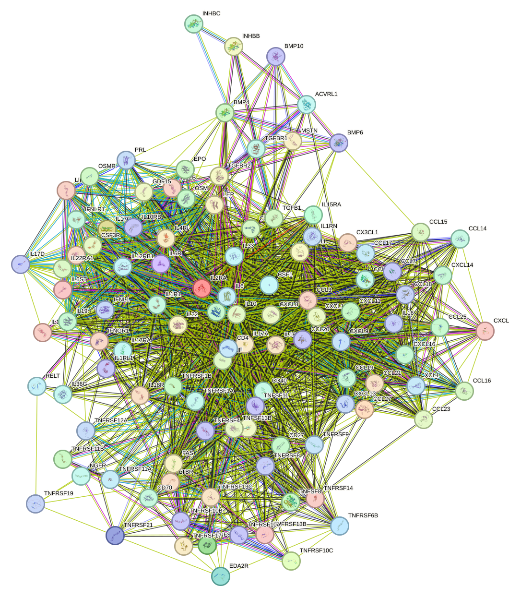
With this overall network context in place, the following paragraphs introduce several significant proteins identified during the function enrichment analysis and discuss their possible relevance in a cautious, mechanism-based manner.
During the function enrichment analysis, we identified serveral significant proteins. We will introduce them in-details in the following.
EDA2R stands out as potentially relevant to kidney disease because it directly engages two signaling axes, nuclear factor kappa B and c-Jun N-terminal kinase, that are central to renal inflammation, tubular stress responses, and progressive fibrotic remodeling. In kidney disorders, sustained nuclear factor kappa B activity is strongly linked to inflammatory cytokine production, leukocyte recruitment, and chronic tissue injury, while c-Jun N-terminal kinase signaling contributes to apoptosis and stress-induced damage in tubular epithelial and glomerular cells. The reported coupling of EDA2R to tumor necrosis factor receptor associated factor 3 and tumor necrosis factor receptor associated factor 6 further increases its relevance, as tumor necrosis factor receptor associated factor-dependent signaling is a common upstream mechanism in innate and cytokine-driven inflammatory responses. Although the description provided does not cite kidney-specific studies, the mechanistic profile of EDA2R suggests that aberrant activation could plausibly amplify inflammatory injury and tissue remodeling in chronic kidney disease.
In a related but distinct way, the next protein appears potentially relevant through redox adaptation and oxygen-sensitive biology rather than primarily through canonical inflammatory signaling.
IL32 is particularly interesting in the context of kidney disease because the function provided links it to oxygen sensing, redox regulation, and thiol metabolism, all of which are highly relevant to renal pathophysiology. The kidney is exceptionally sensitive to hypoxia and oxidative stress, especially in chronic kidney disease and ischemic injury, where disturbed oxygen homeostasis drives tubular dysfunction, inflammation, and fibrosis. The reported oxidation of cysteamine to hypotaurine and modification of N-terminal cysteine-containing proteins suggests a role in redox-adaptive signaling and protein stability control under variable oxygen conditions. The specific oxidation of regulator of G protein signaling 5 is notable because regulator of G protein signaling 5 has recognized vascular and pericyte-associated functions, raising the possibility that this pathway could influence renal microvascular tone or hypoxia responses. Thus, the cited biochemical activities support a plausible connection between IL32-associated enzymatic regulation and mechanisms of kidney injury progression, particularly those involving hypoxia, oxidative stress, and vascular maladaptation. [260] [261]
Whereas IL32 may be connected more closely to oxygen and redox biology, the following cytokine is more directly positioned within broad inflammatory amplification.
IL36G is one of the strongest candidates for kidney disease relevance because it is a potent pro-inflammatory cytokine that activates nuclear factor kappa B and induces broad immune activation. The described ability of IL36G to stimulate dendritic cells, increase expression of cluster of differentiation 80, cluster of differentiation 86, and major histocompatibility complex class two, and induce cytokines such as interleukin 12, interleukin 1 beta, interleukin 6, tumor necrosis factor alpha, and interleukin 23 indicates a capacity to amplify both innate and adaptive immune responses. These are precisely the pathways implicated in inflammatory kidney disorders, including glomerulonephritis, tubulointerstitial nephritis, and chronic kidney disease progression. Its role in epithelial barrier immunity is also relevant because renal tubular epithelium is an immunologically active compartment that can propagate sterile inflammation after injury. By promoting T-cell-derived interferon gamma, interleukin 4, and interleukin 17, IL36G may further contribute to pathogenic immune polarization that worsens renal tissue damage and fibrosis. Even though the supplied annotations emphasize skin and airway inflammation, the underlying cytokine network is highly transferable to renal inflammatory disease mechanisms.
This inflammatory theme then extends to receptors that may connect stress signaling with apoptotic regulation.
RELT is relevant to kidney disease primarily because of its association with apoptosis and stress-activated mitogen-activated protein kinase signaling. Both p38 and c-Jun N-terminal kinase pathways are major mediators of renal cell injury in acute kidney injury, diabetic nephropathy, and chronic kidney disease, where they regulate inflammatory gene expression, tubular epithelial death, and fibrogenic responses. The observation that RELT can activate these cascades when overexpressed suggests that it may function as an upstream enhancer of injury signaling under pathological conditions. Its putative role in apoptosis is especially important because excessive apoptosis of tubular or glomerular cells contributes directly to nephron loss and declining renal function. Therefore, the cited studies support RELT as a plausible modulator of stress-response pathways that are mechanistically important in kidney disease progression. [262] [263] [264] [265]
Closely related to this, the next receptor may also integrate inflammatory signaling with cell death control, although the evidence remains inferential.
TNFRSF19 is potentially important in kidney disease because it combines inflammatory signaling with cell death regulation. Activation of c-Jun and nuclear factor kappa B places this receptor within two major pathways that drive renal injury responses, including cytokine production, epithelial stress signaling, and maladaptive remodeling. Its potential to promote caspase-independent cell death is also notable, as non-canonical death programs can contribute to tubular injury and inflammatory amplification in the kidney. The mention of decoy receptor isoforms adds another layer of interest, suggesting that alternative splicing or isoform balance could modulate the intensity of tumor necrosis factor-family signaling in disease states. Overall, TNFRSF19 represents a plausible regulator of how renal cells integrate inflammatory and death signals during chronic or acute injury.
A somewhat different but complementary perspective is provided by the following receptor, which may intersect not only with inflammation and apoptosis but also with vascular and transplantation-related biology.
TNFRSF6B is highly relevant to kidney disease because it intersects with inflammation, apoptosis, vascular biology, and alloimmunity. Nuclear factor kappa B activation and caspase-mediated apoptosis are core mechanisms in renal parenchymal injury, while inhibition of endothelial growth and angiogenesis is particularly important because microvascular rarefaction is a recognized driver of chronic kidney disease progression and renal hypoxia. The reported promotion of splenocyte alloactivation further suggests possible significance in transplantation, where immune activation contributes to allograft rejection and chronic allograft dysfunction. Taken together, the functional profile of TNFRSF6B aligns closely with several important kidney disease mechanisms, including inflammatory injury, vascular compromise, and immune-mediated damage.
Finally, the last of these individually discussed proteins appears most relevant through adaptive immune regulation rather than direct intrinsic renal cell signaling.
TNFRSF9 is most relevant to kidney disease through its immunoregulatory effects on cytotoxic T cells. Enhanced cluster of differentiation 8-positive T-cell survival and effector function can be beneficial in antiviral defense, which may matter in infection-associated renal injury, but the same pathway may also contribute to immune-mediated tissue damage in the kidney or in transplanted kidneys. The increase in mitochondrial activity further implies durable T-cell activation, which can intensify chronic immune responses. In the setting of kidney transplantation, such costimulatory pathways are especially important because they can influence alloimmune activation and graft injury. Thus, although TNFRSF9 is not a classical intrinsic renal injury mediator, its function is potentially meaningful in kidney disease contexts where adaptive immunity is a major determinant of pathology.
Beyond these individual proteins, the network also contains a smaller coordinated cluster whose collective structure may be informative for kidney disease biology.
There are also small set of proteins function together to form a cluster. The functional composition and network structure of this cluster indicate a coordinated immunoregulatory and tissue-remodeling program that is highly relevant to kidney disease. First, the dominant hubs tumor necrosis factor (degree 45), interleukin 6 (degree 44), and interleukin 10 (degree 40), together with chemokine ligand 8 and cluster of differentiation 4, place the cluster at the interface of inflammatory activation and counter-regulation. The retained high-confidence associations support canonical cytokine receptor systems, including interleukin 6-interleukin 6 receptor-interleukin 6 signal transducer (all pair scores 0.999), interleukin 10-interleukin 10 receptor subunit beta (0.999), interleukin 22-interleukin 22 receptor subunit alpha 1 and interleukin 10 receptor subunit beta (0.999), interleukin 18-interleukin 18 receptor 1 (0.999), interleukin 15-interleukin 15 receptor subunit alpha (0.999), interleukin 17A-interleukin 17 receptor A and interleukin 17 receptor A-interleukin 17 receptor B (0.999), and tumor necrosis factor with tumor necrosis factor receptor superfamily member 1A or tumor necrosis factor receptor superfamily member 1B among the top retained pairs (0.999). Because the Search Tool for the Retrieval of Interacting Genes and Proteins-derived network includes functional, experimental, physical, database, and text-mining evidence, these associations should be interpreted primarily as high-confidence biological relationships rather than uniformly direct physical contacts. Functionally, many members promote leukocyte trafficking to inflamed tissues: chemokine ligand 19, chemokine ligand 21, chemokine ligand 20, chemokine ligand 22, chemokine ligand 27, chemokine ligand 17, chemokine ligand 23, chemokine ligand 10, chemokine ligand 11, chemokine ligand 13, chemokine ligand 16, chemokine ligand 17, chemokine ligand 1, and chemokine ligand 1 regulate recruitment of naive and activated T cells, B cells, dendritic cells, monocytes or macrophages, natural killer cells, eosinophils, and neutrophils. In kidney disease, such a program is plausibly relevant because sustained chemotaxis and adhesion can drive inflammatory cell accumulation within renal interstitium and glomerular or vascular compartments. Second, the cluster contains multiple pathways that amplify inflammatory effector responses and innate host defense, including interferon gamma receptor 1-dependent Janus kinase-signal transducer and activator of transcription 1 signaling, interleukin 18-interleukin 18 receptor 1-mediated induction of interferon gamma, interleukin 17C- and interleukin 17A-related inflammatory signaling through nuclear factor kappa B and mitogen-activated protein kinase pathways, interleukin 15-interleukin 15 receptor subunit alpha-mediated activation of natural killer cells, T cells, B cells, and neutrophil phagocytosis, and colony stimulating factor 1-colony stimulating factor 1 receptor and colony stimulating factor 3 receptor pathways that support mononuclear phagocyte and granulocytic survival and differentiation. These processes are consistent with persistent renal inflammation, especially where macrophage, monocyte, neutrophil, and T-cell activation contribute to tissue injury. Third, the cluster also contains anti-inflammatory and homeostatic elements, notably interleukin 10 signaling through interleukin 10 receptor subunit alpha and interleukin 10 receptor subunit beta and interleukin 19-mediated T helper 2-skewing, as well as interleukin 2 receptor subunit alpha-associated regulatory T-cell control of immune tolerance. Their inclusion suggests that the cluster does not merely encode inflammatory activation, but rather a dynamic balance between immune activation and compensatory suppression; dysregulation of this balance could favor chronic inflammation and progressive kidney damage. Fourth, epithelial and barrier-associated cytokines in the cluster are notable for kidney relevance. Interleukin 22 signaling through interleukin 22 receptor subunit alpha 1 and interleukin 10 receptor subunit beta activates Janus kinase-signal transducer and activator of transcription, mitogen-activated protein kinase, and protein kinase B pathways, while interleukin 17C promotes epithelial antibacterial and pro-inflammatory programs and can be either protective or pathogenic depending on context. Such pathways may influence renal epithelial stress responses and host defense at mucosal-like barrier interfaces. In addition, interleukin 6 signal transducer has a documented role in epithelial regeneration and broad cytokine signal transduction, and sortilin related receptor 1-like functions described under the interleukin 6 receptor entry include regulation of renal ion homeostasis through solute carrier family 12 member 1 phospho-regulation, directly linking this cluster to renal transport processes. Fifth, the cluster includes strong remodeling and fibrosis-related signaling through transforming growth factor beta 1, transforming growth factor beta receptor 1, transforming growth factor beta receptor 2, activin A receptor like type 1, bone morphogenetic protein 4, bone morphogenetic protein 6, bone morphogenetic protein 10, myostatin, and inhibin subunit beta B or inhibin subunit beta C. The top retained pair transforming growth factor beta 1-transforming growth factor beta receptor 1 (0.999) and activin A receptor like type 1-bone morphogenetic protein 10 (0.999) support a tightly connected transforming growth factor beta-bone morphogenetic protein submodule. Given that transforming growth factor beta signaling regulates extracellular matrix production, wound healing, immunosuppression, epithelial-to-mesenchymal transition, and apoptosis, this arm of the cluster is highly compatible with mechanisms of renal scarring and maladaptive repair. Bone morphogenetic protein pathways may counterbalance or reshape these responses, whereas erythropoietin-related functions in iron handling, autophagy suppression, protein kinase B-mechanistic target of rapamycin signaling, and indirect promotion of bone resorption indicate broader metabolic-stress integration. Finally, tumor necrosis factor receptor superfamily member 11A, tumor necrosis factor superfamily member 11, tumor necrosis factor receptor superfamily member 11B, and related tumor necrosis factor receptor family members, together with tumor necrosis factor receptor associated factor-like signaling functions represented in the annotations, connect inflammation to nuclear factor kappa B activation, apoptosis, osteoclastogenic signaling, and immune-cell survival. In aggregate, this cluster is best interpreted cautiously as a dense inflammatory-immune and tissue-remodeling network whose dysregulation could contribute to kidney disease by promoting leukocyte recruitment, cytokine amplification, epithelial stress responses, maladaptive repair, fibrosis, and altered renal homeostasis, while also containing endogenous counter-regulatory pathways that may influence disease severity or chronicity. [266] [267] [268] [269] [270] [271] [272] [103] [104] [105] [3] [4] [5] [273] [55] [56] [57] [58] [59] [60] [61] [123] [124] [125] [126] [127] [128] [129] [274] [275] [216] [217] [218] [219] [220] [221] [222] [223] [224] [225] [226] [227] [228] [229] [230] [203] [204] [205] [206] [276] [277] [278] [279] [135] [136] [137] [138] [139] [140] [141] [171] [172] [173] [174] [175] [176] [177] [178] [179] [180] [182] [183] [8] [9] [280] [281] [282] [283] [284]
Extracellular matrix organization is the coordinated biological process that governs the synthesis, secretion, assembly, crosslinking, remodeling, and degradation of the structural macromolecules that form the tissue scaffold surrounding cells. This scaffold is composed principally of collagens, laminins, fibronectin, proteoglycans, and glycosaminoglycans, together with matricellular proteins and the enzymes that modify or degrade these components. In the kidney, extracellular matrix organization is essential for the formation and maintenance of the glomerular basement membrane, mesangial matrix, tubular basement membranes, and interstitial connective tissue. Proper organization of this matrix preserves tissue architecture, mechanical stability, filtration barrier integrity, cell polarity, and signaling between resident kidney cells and infiltrating immune cells. This pathway is dynamically regulated by growth factors, inflammatory mediators, integrin-dependent cell adhesion, proteolytic systems such as matrix metalloproteinases, and their endogenous inhibitors. Physiological extracellular matrix organization supports development, repair, and homeostasis, whereas dysregulated matrix production or impaired matrix turnover drives basement membrane thickening, mesangial expansion, tubulointerstitial scarring, vascular remodeling, and progressive loss of kidney function.
Against this biological background, the relevance of extracellular matrix organization to kidney disease becomes more apparent because pathological kidney injury, regardless of initiating cause, commonly converges on maladaptive remodeling of the extracellular matrix. In glomerular and tubulointerstitial compartments, persistent injury stimulates resident fibroblasts, mesangial cells, tubular epithelial cells, endothelial cells, and inflammatory cells to alter the balance between matrix synthesis and degradation, leading to excessive deposition of collagens, fibronectin, and other matrix components. This process disrupts the normal architecture of the filtration barrier and interstitium, promotes tissue stiffening, impairs oxygen and solute diffusion, and amplifies profibrotic and proinflammatory signaling through cell matrix interactions. As a result, extracellular matrix accumulation is a central histopathological feature of chronic kidney disease and a major determinant of progression toward kidney failure. However, no relevant publications were provided in the input, so this conclusion is based on established biological understanding of kidney pathology rather than on the specific cited literature requested for analysis.
Consistent with this general framework, the function enrichment analysis for kidney disease assigned 79 proteins to the pathway extracellular matrix organization, highlighting a substantial matrix-centered signal within the disease-associated protein set. Given the central role of extracellular matrix organization in glomerular basement membrane integrity, mesangial matrix homeostasis, tubular basement membrane maintenance, and interstitial tissue architecture, this enrichment is consistent with structural remodeling processes that accompany progressive kidney injury.
To further characterize how these proteins may relate to one another, the network structure provides an additional layer of context. Within this 79-protein pathway set, 192 high-confidence protein-protein interaction edges were retained, connecting 69 proteins, which corresponds to 87.3 percent of all pathway proteins, with a mean retained interaction score of 0.882. Network connectivity was concentrated around several high-degree proteins, most prominently matrix metallopeptidase 9 with degree 18 and weighted score 16.046, matrix metallopeptidase 3 with degree 14 and weighted score 12.356, tissue inhibitor of metallopeptidases 1 with degree 13 and weighted score 11.58, heparan sulfate proteoglycan 2 with degree 13 and weighted score 11.556, and integrin subunit alpha V with degree 12 and weighted score 11.083. The largest connected component contained all 69 connected proteins and 192 edges at the same mean score of 0.882, while 10 proteins, namely ADAM8, ADAM9, ADAMTS16, BMP10, BMP4, CTRB1, ICAM5, P4HB, PRSS2, and TPSAB1, had no retained edges under the current high-confidence criteria. Among the strongest retained associations, several pairs reached a score of 0.999, including heparan sulfate proteoglycan 2 with nidogen 1, decorin with transforming growth factor beta 1, matrix metallopeptidase 9 with tissue inhibitor of metallopeptidases 1, intercellular adhesion molecule 1 with vascular cell adhesion molecule 1, integrin subunit alpha V with integrin subunit beta 6, matrix metallopeptidase 1 with tissue inhibitor of metallopeptidases 1, integrin subunit alpha V with secreted phosphoprotein 1, and matrix metallopeptidase 3 with tissue inhibitor of metallopeptidases 1; these are high-confidence associations and should be interpreted as network-supported relationships rather than uniformly direct physical binding.
To complement these quantitative network features, we include the protein-protein interaction network visualization below together with the interactive STRING network page.
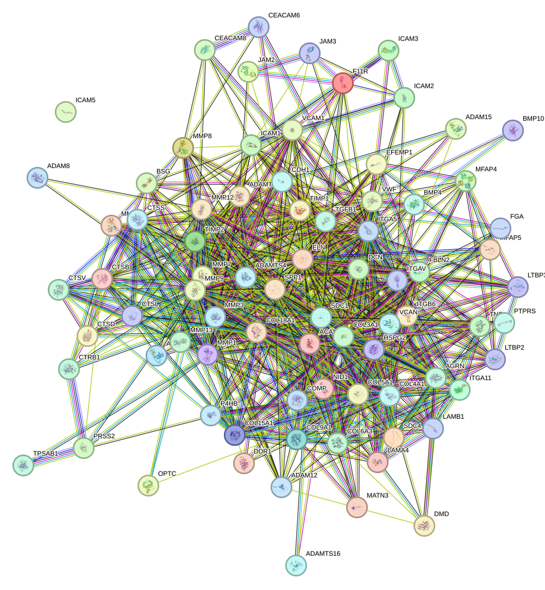
Building on the pathway-level and network-level observations, the function enrichment analysis also identified several proteins that may merit more detailed consideration. We introduce them in detail below.
ADAM9 stands out as a potentially kidney-relevant protein because it integrates extracellular matrix remodeling, endothelial signaling, leukocyte adhesion, and cell migration. These processes are central to the pathogenesis of chronic kidney disease and acute kidney injury, where endothelial dysfunction, inflammatory cell recruitment, and maladaptive tissue remodeling drive progression toward fibrosis. Its ability to shed vascular regulators such as TEK, KDR and EPHB4, together with adhesion-related molecules including VCAM1 and CDH5, suggests that ADAM9 could influence glomerular and peritubular capillary integrity, vascular permeability, and inflammatory activation in the kidney. In addition, its interaction with integrin-mediated motility pathways may be relevant to mesangial, tubular epithelial, and infiltrating immune cell behavior during renal injury. Thus, even though the provided annotation is not kidney-specific, ADAM9 maps closely onto mechanisms that are highly relevant to renal vascular injury and fibrotic remodeling. [285] [286] [287]
In a related but somewhat distinct way, proteins linked to morphogen signaling may also be relevant because endothelial stability and matrix responses are tightly interconnected during kidney injury.
BMP10 is notable in the context of kidney disease because it is linked to endothelial homeostasis and canonical SMAD signaling, both of which are highly pertinent to renal microvascular health. The kidney is a vascular-rich organ whose filtration and tubular functions depend on intact endothelial signaling; therefore, factors that inhibit endothelial migration and growth may influence capillary repair, vascular rarefaction, or maladaptive remodeling after injury. Its signaling through ALK receptors and SMAD1/5/8 also places BMP10 within the broader BMP network, which frequently counterbalances profibrotic TGF-beta pathways in renal disease biology. Although the annotation emphasizes cardiac development, the anti-migratory effects on endothelial cells and regulation of cell-matrix adhesion suggest possible relevance to glomerular endothelial stability, interstitial remodeling, and progression of chronic kidney damage.
This line of reasoning extends naturally to another member of the same signaling space, for which the kidney-related implications may be even more direct.
BMP4 is one of the most compelling proteins in this list for kidney disease relevance because it directly links developmental signaling, angiogenesis, and SMAD-dependent transcriptional control. BMP signaling has well-established importance in renal development and in adult kidney injury responses, where imbalance between BMP and TGF-beta pathways can influence inflammation, epithelial plasticity, fibrosis, and vascular remodeling. The canonical BMPR-SMAD1/5/8 axis is particularly relevant because protective BMP signaling is often discussed in opposition to profibrotic TGF-beta signaling in chronic kidney disease. Moreover, BMP4's ability to engage non-canonical SRC and VEGFR2 signaling suggests a plausible role in glomerular and peritubular capillary responses, endothelial activation, and angiogenic remodeling under stress conditions. Taken together, BMP4 stands out as a biologically important regulator whose known functions align closely with mechanisms of renal development, vascular injury, and fibrogenesis. [135] [136] [137] [288] [138] [139] [140] [141]
Whereas the preceding proteins primarily emphasize signaling and vascular biology, the next candidate may be more closely connected to proteostasis, redox balance, and immune-associated remodeling.
P4HB is highly relevant to kidney disease because it intersects with redox regulation, proteostasis, extracellular protein remodeling, and immune cell migration. Renal injury is strongly influenced by oxidative stress, endoplasmic reticulum stress, and accumulation of misfolded proteins, particularly in tubular epithelial cells exposed to metabolic or toxic injury. As a disulfide isomerase and chaperone, P4HB may affect how kidney cells respond to proteotoxic stress and may participate in adaptive or maladaptive unfolded protein responses. Its cell-surface reductase activity could also alter extracellular matrix-associated or membrane proteins involved in adhesion and signaling, thereby influencing fibrosis and inflammatory cell interactions. Particularly notable is its LGALS9-dependent role in enhancing Th2 cell migration, because immune-cell trafficking and redox-dependent signaling are central components of many inflammatory kidney disorders. Overall, P4HB stands out as a mechanistically rich candidate linking oxidative stress, immune regulation, and tissue remodeling in renal disease. [289]
Shifting from proteostasis to innate immune effectors, mast cell-associated pathways may provide another possible connection to extracellular matrix remodeling in diseased kidney tissue.
TPSAB1 is of interest for kidney disease because mast cell activation and protease release are increasingly recognized as contributors to renal inflammation and fibrosis. Tryptase can promote inflammatory signaling, vascular permeability changes, and extracellular matrix remodeling, all of which are relevant to progressive kidney injury. In chronic kidney disease and some immune-mediated nephropathies, mast cell infiltration has been associated with interstitial fibrosis and deterioration of renal function. Although the provided annotation is brief, the fact that TPSAB1 encodes the dominant mast-cell protease makes it a plausible mediator of innate immune activation and tissue remodeling within the diseased kidney microenvironment.
Along similar lines, additional protease-related molecules may be relevant through their effects on inflammatory cell trafficking.
ADAM8 is potentially relevant to kidney disease because leukocyte extravasation is a fundamental step in renal inflammation. In both acute and chronic kidney injury, recruitment of monocytes, neutrophils, and lymphocytes into glomerular and tubulointerstitial compartments amplifies tissue damage and promotes fibrosis. A protein that facilitates leukocyte passage across vascular barriers could therefore contribute to inflammatory burden and disease progression. While the annotation provided is limited, ADAM8 warrants attention as a candidate regulator of immune-cell trafficking in nephritic and fibrotic kidney disorders.
This focus on leukocyte movement also provides a useful transition to adhesion molecules that may participate in related inflammatory processes.
ICAM5 is not classically considered a kidney-focused molecule, but its annotated ability to bind LFA-1 makes it conceptually relevant to kidney disease because leukocyte adhesion is a key event in renal inflammation. Interactions between adhesion molecules and leukocyte integrins regulate immune-cell retention and activation within inflamed tissues. In kidney disease, analogous adhesion pathways contribute to glomerular and interstitial infiltration by inflammatory cells, thereby sustaining injury. Although the current annotation does not establish a direct renal role, the LFA-1-binding property suggests possible relevance to immune-mediated mechanisms if ICAM5 is expressed or released in relevant renal or systemic contexts.
Beyond these individually discussed proteins, there is also a small set of proteins that function together to form a cluster, and this broader module helps place the single-protein observations into a more integrated biological context.
The cluster is strongly consistent with a tissue-remodeling and inflammatory microenvironment centered on the extracellular matrix. Multiple proteins are canonical extracellular matrix structural components or organizers, including COL4A1, COL3A1, COL5A1, COL6A3, COL9A1, COL15A1, COL18A1, LAMA4, LAMB1, NID1, HSPG2, ELN, FBLN2, MFAP4, MFAP5, DCN, VCAN, ACAN, COMP, MATN3 and LTBP2, indicating representation of basement membrane, interstitial matrix, cartilage-like proteoglycan networks, and elastic-fiber architecture. This structural module is coupled to a prominent proteolytic arm composed of MMP1, MMP3, MMP7, MMP8, MMP9, MMP10, MMP12, MMP13, ADAM15, ADAMTS1 and ADAMTS4, together with cathepsins CTSB, CTSL, CTSD, CTSS and CTSV, supporting broad capacity for collagen, gelatin, fibronectin, laminin, elastin, and aggrecan turnover. The network topology reinforces this interpretation: MMP9 is the highest-degree hub with degree 18, followed by MMP3 with degree 14, while TIMP1, HSPG2 and ITGAV are also highly connected, and the retained network is dense for a single component, with 69 of 69 proteins connected, 192 high-confidence associations, and a mean retained score of 0.882. Several of the strongest retained associations link core matrix and remodeling regulators, including HSPG2-NID1 with score 0.999, MMP9-TIMP1 with 0.999, MMP1-TIMP1 with 0.999, MMP3-TIMP1 with 0.999, ITGAV-ITGB6 with 0.999, ITGAV-SPP1 with 0.999, DCN-TGFB1 with 0.999, and LTBP3-TGFB1 with 0.996. Because the evidence types include functional, database, text-mining, and in some cases physical or experimental support, these edges support a tightly coordinated remodeling program, but they should generally be interpreted as high-confidence associations rather than uniformly direct physical contacts. Functionally, the cluster also contains a substantial inflammatory and endothelial adhesion module, including VCAM1, ICAM1, ICAM2, ICAM3, JAM2, JAM3, F11R, CEACAM6, CEACAM8 and SPP1, together with integrin receptors such as ITGAV, ITGA5 and ITGA11. These proteins mediate leukocyte adhesion, rolling, transmigration, stromal retention, and extracellular matrix-dependent signaling, indicating that the cluster can couple matrix remodeling to immune-cell recruitment and vascular activation. In parallel, angiogenesis-regulatory proteins with both pro- and anti-angiogenic functions are present, including OPTC, COL4A1-derived arresten activity, COL15A1/restin, COL18A1/endostatin-like anti-angiogenic activity, HSPG2 anti-angiogenic properties, JAM3 pro-angiogenic activity, TNC-mediated endothelial sprouting, and ADAM15-associated pathological neovascularization, suggesting dynamic regulation of microvascular remodeling. The presence of TGFB1, LTBP3, ITGAV and ITGB6 further links this cluster to localized TGF-beta activation and signaling, a major axis for matrix deposition, collagen production, epithelial-to-mesenchymal transition-like responses, and immune regulation. In the context of kidney disease, this constellation is highly relevant because renal injury commonly involves basement membrane disruption, interstitial extracellular matrix accumulation and reorganization, inflammatory cell recruitment across activated endothelium, maladaptive wound healing, and altered microvascular integrity. Proteases such as MMPs, ADAMTS proteases and cathepsins could contribute to degradation of basement membrane and interstitial matrix components, while TIMP1 and TIMP2 may shift the balance toward matrix retention when proteolysis is restrained. Integrin-, syndecan-, DDR1- and TGF-beta-related signaling may further amplify cell-matrix crosstalk, fibroproliferative remodeling, and persistent repair responses. The inclusion of vascular and coagulation-related proteins such as VWF and FGA also suggests potential linkage to endothelial injury, fibrin deposition, and tissue repair processes. Collectively, the cluster is most consistent with a kidney disease-relevant program of extracellular matrix turnover and fibrosis, inflammatory leukocyte trafficking, endothelial activation, and angiogenic remodeling that could promote progression from tissue injury to chronic structural damage. [290] [291] [292] [293] [294] [295] [296] [297] [298] [299] [300] [301] [302] [303] [304] [305] [306] [307] [308] [309] [310] [311] [312] [313] [2] [314] [315] [316] [317] [318] [319] [320] [321] [322] [323] [324] [325] [28] [29] [326] [120] [121] [122] [327] [328] [329] [330] [331] [332] [333] [334] [62] [335] [336] [337] [140]
The pathway described as an overview of proinflammatory and profibrotic mediators represents a conceptual network rather than a single linear signaling cascade. It integrates extracellular danger signals, immune receptors, intracellular signaling modules, inflammatory cytokines, chemokines, growth factors, vasoactive mediators, oxidative stress pathways, and matrix remodeling programs that together drive tissue injury and scarring. In biological terms, tissue stress or injury activates resident epithelial cells, endothelial cells, mesangial cells, fibroblasts, and infiltrating leukocytes, leading to the production of proinflammatory mediators such as tumor necrosis factor, interleukin one, interleukin six, chemokine ligand two, and other leukocyte recruiting signals. These inflammatory signals engage transcriptional regulators including nuclear factor kappa B and activator protein one, thereby amplifying cytokine production, leukocyte adhesion, and innate immune activation. In parallel, profibrotic mediators such as transforming growth factor beta, connective tissue growth factor, platelet derived growth factor, endothelin, angiotensin two, and related signaling systems promote fibroblast activation, myofibroblast differentiation, extracellular matrix deposition, and suppression of matrix degradation. Crosstalk between inflammation and fibrosis is a defining feature of this pathway, because persistent inflammatory signaling enhances profibrotic gene expression, while matrix accumulation and microvascular injury may further sustain inflammatory cell recruitment and parenchymal dysfunction. Taken together, this pathway provides a systems level framework for understanding how chronic injury may progress from acute inflammatory responses to irreversible fibrotic remodeling.
This systems perspective is particularly relevant in the kidney, where tightly coupled vascular, epithelial, and interstitial compartments can be highly sensitive to sustained injury signals. In kidney disease, the network of proinflammatory and profibrotic mediators is central to both disease initiation and disease progression because the kidney is highly vulnerable to sustained immune activation, microvascular dysfunction, and maladaptive tissue repair. Injury to glomerular cells, tubular epithelial cells, endothelial cells, or interstitial compartments induces the release of inflammatory cytokines and chemotactic factors that recruit monocytes, macrophages, neutrophils, and lymphocytes into renal tissue. These infiltrating and resident cells then generate additional inflammatory mediators, reactive oxygen related signals, and vasoactive factors, creating a self-reinforcing inflammatory environment. When this response is not resolved, profibrotic mediators, particularly transforming growth factor beta centered programs, stimulate fibroblast proliferation, transition toward matrix producing phenotypes, and excessive accumulation of collagen, fibronectin, and other extracellular matrix components in the glomerulus and tubulointerstitium. This process contributes to glomerulosclerosis, tubular atrophy, interstitial fibrosis, capillary rarefaction, and progressive loss of filtration function. Because no relevant publications were provided with the pathway description, this analysis is based on established biological knowledge of renal inflammation and fibrosis rather than on the specific cited literature requested. Consequently, although the mechanistic relationship between this pathway and kidney disease appears strong and biologically well supported in the broader field, no publication specific citations can be listed from the materials supplied.
To complement this biological interpretation, the network level properties of the enriched protein set provide a more quantitative view of how these mediators may be organized. There were 52 kidney disease-associated proteins analyzed in the function enrichment analysis for the pathway described as an overview of proinflammatory and profibrotic mediators. Within this set, the retained high-confidence protein-protein interaction network contained 268 association edges, connecting 46 of 52 proteins, which corresponds to 88.5 percent network coverage among the analyzed proteins, with a mean retained interaction score of 0.888. Network centrality was concentrated in several chemokine and cytokine nodes, with chemokine ligand eight showing the highest degree at 30 and the highest weighted score at 26.453, followed by chemokine ligand ten and chemokine ligand nine with degrees of 26 and weighted scores of 24.344 and 23.246, and interleukin six and interleukin ten with degrees of 25 and weighted scores of 22.387 and 22.292, respectively.
This concentration of centrality within a small set of inflammatory mediators is consistent with a network structure dominated by coordinated immune signaling. The retained network was dominated by a single connected component comprising 46 proteins and all 268 retained edges, indicating that most proteins in this enrichment result participate in a densely linked inflammatory and profibrotic association structure under the current high-confidence criteria. The strongest retained pairs all reached a score of 0.999, including chemokine ligand twenty five with chemokine ligand eleven, chemokine ligand ten with chemokine ligand nine, chemokine ligand twenty one with chemokine ligand nine, chemokine ligand eleven with chemokine ligand ten, chemokine ligand twenty one with chemokine ligand ten, chemokine ligand ten with chemokine ligand eleven, chemokine ligand eleven with chemokine ligand nine, and chemokine ligand twenty with chemokine ligand eleven. By contrast, amphiregulin, erythropoietin, interleukin twelve subunit beta, interleukin seventeen D, interleukin thirty six gamma, and vascular endothelial growth factor A had no retained edges in this pathway set under the applied filtering threshold.
To make these relationships easier to interpret visually, we include the network representation together with the corresponding external resource. We include the protein-protein interaction network visualization below together with the STRING interactive network page.
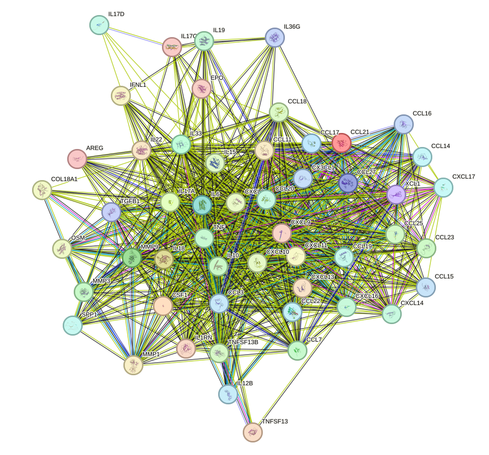
Building on this global network view, the following paragraphs consider several individually notable proteins that emerged from the function enrichment analysis. During the function enrichment analysis, we identified serveral significant proteins. We will introduce them in-details in the following.
VEGFA stands out as one of the most kidney-relevant proteins in this list because renal function depends critically on the integrity of specialized microvascular beds, particularly the glomerular and peritubular capillary networks. VEGFA-driven endothelial survival, cytoskeletal remodeling, vascular permeability, and nitric oxide production are all directly pertinent to glomerular filtration barrier maintenance and renal perfusion. Dysregulated VEGFA signaling has strong mechanistic relevance to kidney disease: insufficient VEGFA activity can impair endothelial health and promote capillary rarefaction, ischemic injury, and chronic kidney disease progression, whereas excessive or imbalanced VEGFA signaling may contribute to abnormal permeability and inflammatory vascular remodeling. The described activation of phosphoinositide three kinase and protein kinase B, extracellular signal-regulated kinase, focal adhesion kinase, and nitric oxide synthase pathways further supports its importance in endothelial adaptation and injury responses that are highly relevant in diabetic nephropathy, proteinuric kidney disease, and microvascular complications of chronic kidney injury. Accordingly, vascular endothelial growth factor A appears to be a particularly important protein to prioritize when considering kidney disease mechanisms centered on vascular dysfunction and endothelial injury.
Closely related to this vascular and tissue adaptation theme, erythropoietin may connect renal endocrine function with broader stress response pathways. EPO is highly relevant to kidney disease because the kidney is the principal physiological source of erythropoietin, and impaired EPO production is a defining feature of anemia in chronic kidney disease. The functions listed here broaden its significance beyond erythropoiesis. Its ability to suppress hepcidin and enhance iron mobilization is particularly important in kidney disease, where functional iron deficiency and inflammation-associated disturbances in iron handling are common. In addition, the reported anti-apoptotic and anti-inflammatory effects mediated through protein kinase B signaling suggest a potential cytoprotective role in stressed tissues, which may be relevant to renal parenchymal injury. The inhibition of nutrient deficiency-induced autophagy through protein kinase B and mechanistic target of rapamycin signaling also connects EPO to metabolic stress responses that are frequently altered in kidney disease. Finally, the links to lipid uptake and bone remodeling are notable because chronic kidney disease is often accompanied by metabolic dysfunction and chronic kidney disease mineral and bone disorder. Thus, erythropoietin stands out as a multifunctional factor connecting anemia, iron homeostasis, cell survival signaling, and systemic complications of kidney disease. [131] [132] [133] [134] [142] [144] [143]
Moving from endocrine and vascular regulation toward inflammatory amplification, interleukin thirty six gamma may be relevant in settings of persistent renal immune activation. IL36G is relevant to kidney disease because it is a potent amplifier of innate and adaptive inflammatory signaling. Its ability to activate nuclear factor kappa B and induce major inflammatory mediators including interleukin one beta, interleukin six, tumor necrosis factor alpha, interleukin twelve, and interleukin twenty three places it within pathways that are strongly implicated in renal inflammation, tubulointerstitial injury, and progression of chronic kidney disease. The promotion of dendritic cell maturation and downstream T-cell cytokine production suggests that interleukin thirty six gamma may help sustain immune cell recruitment and activation within injured renal tissue. These properties are particularly pertinent in inflammatory kidney disorders, where epithelial and immune cell crosstalk contributes to persistent tissue damage and fibrosis. Although the provided description emphasizes epithelial barriers, skin, and airway inflammation, the same inflammatory logic appears highly translatable to the kidney, especially in settings characterized by cytokine-driven injury and immune activation.
A related, although somewhat more limited, inflammatory connection may be considered for interleukin seventeen D through its effects on endothelial activation. IL17D is potentially important in kidney disease because it acts on endothelial cells to induce interleukin six, interleukin eight, and granulocyte-macrophage colony-stimulating factor, all of which are highly relevant mediators of inflammatory cell recruitment and vascular activation. In the kidney, endothelial activation is a major component of glomerular and peritubular injury, and cytokine- and chemokine-driven leukocyte recruitment can intensify tissue damage. Interleukin eight is particularly associated with neutrophil chemotaxis, while interleukin six has broad roles in acute and chronic inflammatory responses; granulocyte-macrophage colony-stimulating factor can further support myeloid cell activation. Therefore, interleukin seventeen D may contribute to renal inflammatory amplification, especially in disease contexts where endothelial dysfunction and leukocyte infiltration are prominent. Although the functional annotation provided is concise, the endothelial-centered inflammatory effects make interleukin seventeen D a plausible mediator of kidney vascular inflammation.
In parallel with inflammatory signaling, epithelial repair and fibrotic remodeling also emerge as important themes. AREG is of interest in kidney disease primarily because epidermal growth factor receptor signaling is closely linked to epithelial repair, maladaptive regeneration, and fibrosis. The annotation that amphiregulin functions as an autocrine growth factor and stimulates fibroblasts is especially relevant, since fibroblast activation and proliferation are central drivers of renal fibrogenesis. In injured kidneys, epidermal growth factor receptor ligands can support short-term repair responses, but persistent activation may promote extracellular matrix accumulation, tubular remodeling, and chronic disease progression. Thus, amphiregulin may be functionally connected to kidney disease through pathways of tissue remodeling and fibrosis, making it a potentially meaningful marker or mediator in chronic kidney injury contexts.
This remodeling perspective also intersects with cellular stress adaptation and immune regulation. IL12B is noteworthy for kidney disease because it links autophagy, oxidative stress responses, and innate immune regulation, three processes that are central to both acute and chronic renal injury. The ability to regulate selective autophagy and intracellular protein quality control is particularly relevant in renal tubular cells, which are highly sensitive to proteotoxic and metabolic stress. Its reported role in promoting sequestosome one accumulation and activating the kelch-like ECH-associated protein one and nuclear factor erythroid two-related factor two antioxidant pathway suggests a mechanism by which cells may adapt to oxidative stress, a major driver of kidney injury progression. In parallel, modulation of type one interferon signaling and interleukin twelve trafficking indicates broader immunoregulatory effects that could influence inflammatory kidney diseases. While the annotation is mechanistically rich and somewhat indirect with respect to the kidney, the convergence on autophagy, oxidative stress, and immune signaling makes this protein biologically relevant to renal pathophysiology. [106] [107]
Beyond these individual proteins, the network also suggests the presence of a broader coordinated module of interacting inflammatory mediators. There are also small set of proteins function together to form a cluster. The cluster is most consistent with a coordinated immune-inflammatory program that couples chemokine-guided leukocyte trafficking to cytokine-mediated activation, epithelial defense, and extracellular matrix remodeling. Multiple members are dedicated to selective immune-cell recruitment: chemokine ligand twenty one and chemokine ligand nineteen promote homing of naive T cells and lymphocyte positioning within secondary lymphoid tissues; chemokine ligand thirteen attracts B cells; chemokine ligand one supports thymic dendritic-cell accumulation and regulatory T-cell development; chemokine ligand twenty recruits dendritic cells, effector or memory T cells, B cells, T helper seventeen cells, and regulatory T cells at skin and mucosal surfaces; chemokine ligand seventeen and chemokine ligand twenty two preferentially attract activated or T helper two skewed T cells; chemokine ligand eleven promotes eosinophil accumulation; chemokine ligand nine, chemokine ligand ten, and chemokine ligand eleven recruit activated T cells through C-X-C motif chemokine receptor three associated inflammatory programs; and chemokine ligand one regulates monocyte, macrophage, natural killer cell, and microglial trafficking. In parallel, inflammatory amplification is provided by interleukin eighteen, interleukin fifteen, tumor necrosis factor, interleukin six trans-signaling, oncostatin M, colony stimulating factor one, and secreted phosphoprotein one, whereas interleukin ten, interleukin one receptor antagonist, and interleukin nineteen provide counter-regulatory or anti-inflammatory influences. Barrier and innate defense functions are also prominent: interleukin seventeen C stimulates epithelial antibacterial and pro-inflammatory responses through nuclear factor kappa B and mitogen-activated protein kinase, interleukin twenty two regulates epithelial permeability and ion and water fluxes, interferon lambda one associated receptor signaling induces antiviral interferon-stimulated genes, and chemokine ligand twenty, interleukin seventeen A, tumor necrosis factor, and chemokine ligand seventeen contribute antimicrobial activity. Tissue remodeling is represented by matrix metallopeptidase three, matrix metallopeptidase nine, and matrix metallopeptidase one together with chemokine ligand eight associated matrix organization, indicating that the cluster not only recruits immune cells but also reshapes the tissue microenvironment during injury and repair. These functions are plausibly relevant to kidney disease because renal injury commonly involves inflammatory cell infiltration, cytokine-driven amplification, tubular and endothelial stress, and maladaptive matrix remodeling. In this context, the cluster could contribute to kidney disease by promoting recruitment of monocytes or macrophages, T cells, dendritic cells, neutrophils, eosinophils, and B-cell-associated immune programs into renal tissue; by sustaining pro-inflammatory signaling through nuclear factor kappa B, janus kinase and signal transducer and activator of transcription, mitogen-activated protein kinase, and related pathways; and by coupling these responses to extracellular matrix degradation and repair processes that may influence tissue regeneration or progression toward chronic inflammatory damage. Kidney relevance is further supported by supplied renal-associated functions within the cluster, including interleukin twenty two-mediated passive sodium and calcium reabsorption across proximal tubules and interleukin six trans-signaling effects on chronic inflammatory states. Network topology reinforces this interpretation: the entire set forms one highly connected component, and the highest-degree nodes, chemokine ligand eight at degree 30, chemokine ligand ten at degree 26, chemokine ligand nine at degree 26, interleukin six at degree 25, and interleukin ten at degree 25, indicate convergence of chemotactic, inflammatory, and regulatory signals. The strongest retained associations, such as chemokine ligand ten with chemokine ligand nine, chemokine ligand ten with chemokine ligand eleven, chemokine ligand twenty one with chemokine ligand ten, chemokine ligand twenty one with chemokine ligand nine, and chemokine ligand nineteen with chemokine ligand thirteen, are high-confidence STRING associations and support coordinated pathway-level coupling; however, these should be interpreted as strong functional associations rather than uniformly direct physical interactions unless physical evidence is explicitly included for a given pair. [3] [4] [5] [8] [9] [231] [232] [233] [234] [235] [274] [275] [297] [298] [299] [300] [28] [29] [338] [339] [340] [341] [342] [35] [36] [34] [37] [38] [39] [40] [41] [42] [33] [30] [31] [32] [196] [197] [198] [199] [103] [104] [105] [343] [344] [345] [346] [347] [348] [349] [350] [351] [352] [353] [216] [217] [218] [219] [220] [221] [222] [223] [224] [225] [226] [227] [228] [229] [230] [62] [63] [50] [55] [56] [57] [58] [59] [60] [61]
The pathway entitled regulation of insulin-like growth factor transport and uptake by insulin-like growth factor binding proteins describes an extracellular control system that determines the bioavailability, tissue distribution, receptor access, and cellular actions of insulin-like growth factors. Insulin-like growth factor one and insulin-like growth factor two are growth-promoting peptides that regulate cell survival, proliferation, differentiation, metabolism, and tissue repair. In the circulation and in local tissue microenvironments, these ligands are not present primarily as free molecules. Instead, they are bound by a family of insulin-like growth factor binding proteins, classically including insulin-like growth factor binding protein one, insulin-like growth factor binding protein two, insulin-like growth factor binding protein three, insulin-like growth factor binding protein four, insulin-like growth factor binding protein five, and insulin-like growth factor binding protein six. These binding proteins prolong ligand half-life, protect ligands from degradation, direct their movement between blood and tissues, and either restrict or facilitate their interaction with the insulin-like growth factor one receptor and related cell-surface targets. The pathway also includes ternary complex formation with acid-labile subunit, which stabilizes circulating insulin-like growth factor bound to insulin-like growth factor binding protein three or insulin-like growth factor binding protein five, thereby creating a large reservoir of hormone in blood. At the tissue level, the biological outcome depends on dynamic release of insulin-like growth factors from binding proteins through proteolysis, post-translational modification, interaction with extracellular matrix components, and changes in local expression of the individual binding proteins. Some insulin-like growth factor binding proteins also exert insulin-like growth factor independent effects by interacting directly with cell surfaces, integrins, or intracellular targets, thereby influencing apoptosis, inflammation, fibrosis, and repair. Overall, this pathway is a central regulator of how much insulin-like growth factor reaches renal and extra-renal cells, when receptor activation occurs, and whether signaling promotes adaptive regeneration or maladaptive remodeling.
This mechanistic framework provides a useful basis for considering potential relevance to kidney disease. Although no relevant publications were provided in the input list, the pathway is biologically and clinically relevant to kidney disease because the kidney is both a target organ and a regulator of the insulin-like growth factor system. In kidney disease, altered filtration, tubular handling, hepatic endocrine feedback, inflammation, and protease activity can change circulating and intrarenal concentrations of insulin-like growth factor binding proteins, thereby modifying the fraction of insulin-like growth factor that is sequestered, transported, or released to activate receptors in glomerular, tubular, interstitial, and vascular cells. This has important consequences for disease progression because insulin-like growth factor signaling can support epithelial survival and repair after injury, yet excessive or dysregulated signaling may also contribute to mesangial expansion, cellular hypertrophy, extracellular matrix accumulation, and fibrotic remodeling. In parallel, several insulin-like growth factor binding proteins, especially those with strong matrix association or direct signaling functions, have been implicated in profibrotic and proinflammatory responses that are highly relevant to chronic kidney disease. Thus, the disease connection is best understood as a disturbance in ligand buffering and tissue delivery: when kidney dysfunction alters the normal balance between insulin-like growth factors and their binding proteins, the result may be either insufficient regenerative signaling or persistent activation of pathways that favor sclerosis and fibrosis. Because no publications were supplied, this conclusion should be regarded as a pathway-based mechanistic interpretation rather than a publication-supported synthesis for this specific request.
Consistent with this pathway-level interpretation, the enrichment results indicate a substantial representation of kidney disease-associated proteins within this system. There were 48 kidney disease-associated proteins significantly enriched in the pathway entitled regulation of insulin-like growth factor transport and uptake by insulin-like growth factor binding proteins. This enrichment profile is consistent with a regulatory system that controls insulin-like growth factor bioavailability, extracellular distribution, receptor access, and downstream effects on survival, proliferation, differentiation, metabolism, fibrosis, and tissue repair in renal and extra-renal contexts.
To further define how these enriched proteins may be organized, the retained interaction network was examined under high-confidence filtering criteria. Within this 48-protein set, 21 high-confidence protein-protein interaction edges were retained, connecting 23 proteins, with a mean retained interaction score of 0.895, indicating overall strong network support under the applied filtering criteria. The most connected proteins were apolipoprotein A1 with degree 4 and weighted score 3.508, followed by apolipoprotein A2 with degree 3 and weighted score 2.797, insulin-like growth factor binding protein one with degree 3 and weighted score 2.763, tissue inhibitor of metalloproteinase one with degree 3 and weighted score 2.718, and interleukin six with degree 3 and weighted score 2.619. The network was organized into four connected components, including a largest component of 9 proteins with 9 edges and mean score 0.897, a second component of 7 proteins with 7 edges and mean score 0.884, a third component of 3 proteins with 3 edges and mean score 0.949, and a fourth component of 2 proteins with 1 edge and mean score 0.762, while 20 proteins had no retained edges under the current high-confidence criteria. Among the strongest retained pairs were apolipoprotein A1 with apolipoprotein A2 at score 0.999, matrix metallopeptidase one with tissue inhibitor of metalloproteinase one at score 0.999, chromogranin B with secretogranin two at score 0.986, insulin-like growth factor binding protein one with insulin-like growth factor binding protein four at score 0.972, and insulin-like growth factor binding protein one with insulin-like growth factor binding protein six at score 0.956; these data should be interpreted as high-confidence associations rather than uniformly direct physical binding.
For visual inspection of these relationships, we include the protein-protein interaction network below together with the corresponding external resource. We include the protein-protein interaction network visualization below together with the STRING network page for interactive inspection.
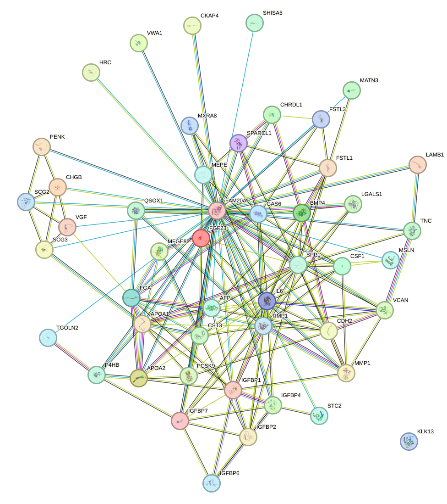
The enrichment analysis also highlighted several proteins that may be mechanistically informative in the context of kidney disease. During the function enrichment analysis, we identified serveral significant proteins. We will introduce them in-details in the following.
BMP4 is among the most compelling proteins in this list for kidney disease because bone morphogenetic protein and transforming growth factor beta pathway balance is a central determinant of renal development, fibrosis, and vascular remodeling. Its described functions in developmental patterning, angiogenesis, and receptor-mediated SMAD signaling strongly align with processes that are highly relevant to nephrogenesis and chronic kidney injury. In the kidney, dysregulated bone morphogenetic protein signaling can influence tubular epithelial behavior, interstitial fibroblast activation, and endothelial homeostasis, all of which contribute to progression of chronic kidney disease. The additional ability of BMP4 to activate SRC and vascular endothelial growth factor receptor two-linked angiogenic responses further suggests potential relevance to glomerular and peritubular capillary remodeling, which are major determinants of renal hypoxia and fibrotic progression. Thus, even though the annotation emphasizes tooth, vascular, and developmental systems, the pathway architecture itself makes BMP4 highly relevant to kidney disease mechanisms, particularly fibrosis and microvascular injury. [135] [136] [137] [288] [138] [139] [140] [141]
A closely related consideration is the regulation of bone morphogenetic protein signaling intensity in the extracellular space. CHRDL1 stands out because it is a direct extracellular antagonist of BMP4, thereby potentially shaping the same bone morphogenetic protein-driven processes that are relevant to renal injury and repair. In kidney disease, the intensity and spatial restriction of bone morphogenetic protein signaling can determine whether tissue responses favor regeneration or fibrosis. A BMP4 antagonist such as CHRDL1 could therefore alter epithelial, stromal, and endothelial responses within the diseased kidney. Its reported role in endothelial BMP4 modulation is particularly noteworthy, as endothelial dysfunction and aberrant angiogenesis are central features of diabetic kidney disease, ischemic nephropathy, and progressive chronic kidney disease. Although the provided annotation does not directly mention renal tissue, CHRDL1 is mechanistically important because it could function as a regulator of bone morphogenetic protein-dependent fibrotic and vascular programs.
Another protein that may connect extracellular morphogen regulation with injury responses is FSTL1. FSTL1 is highly relevant to kidney disease because it integrates several biological axes that drive renal pathology: inflammation, endothelial survival, tissue remodeling, and bone morphogenetic protein-related signaling. Its ability to promote endothelial cell survival and migration suggests a potential role in preserving or remodeling the renal microvasculature, a critical determinant of oxygen delivery and progression to tubulointerstitial fibrosis. In addition, signaling through toll-like receptor four and bone morphogenetic protein receptors places FSTL1 at the intersection of inflammatory and morphogenetic pathways, both of which are heavily implicated in acute kidney injury and chronic kidney disease. Because renal disease progression often reflects a combination of inflammatory activation, capillary rarefaction, and maladaptive repair, FSTL1 emerges as a particularly interesting candidate with plausible roles in both injury propagation and compensatory vascular responses. [354] [355] [356]
Within the same broader signaling landscape, FSTL3 may also be relevant through its effects on activin and bone morphogenetic protein family members. FSTL3 is notable for kidney disease because activin and bone morphogenetic protein family signaling are increasingly recognized as important regulators of renal fibrosis, inflammation, and repair. By antagonizing activin and bone morphogenetic protein two, FSTL3 could shift the balance of transforming growth factor beta superfamily signaling toward either protective or pathogenic outcomes depending on context. This is particularly relevant because activin signaling has been associated with tissue injury responses and fibrosis in multiple organs, including the kidney. Its effects on adhesion to fibronectin are also potentially meaningful, since fibronectin-rich extracellular matrix expansion is a hallmark of progressive chronic kidney disease. Therefore, although indirect in the provided annotation, FSTL3 is mechanistically connected to matrix remodeling and growth factor signaling networks that are central to renal disease progression.
A somewhat different but complementary axis is represented by GAS6, which links survival signaling to vascular and inflammatory regulation. GAS6 is one of the strongest kidney disease candidates in the list because the GAS6 and AXL signaling axis has broad relevance to renal inflammation, cell survival, and fibrogenesis. The annotated roles in endothelial survival, cell migration, and thrombotic regulation are especially important in the kidney, where endothelial injury, capillary loss, and microthrombotic or procoagulant states can accelerate chronic damage. In addition, AXL pathway activation is widely associated with tissue remodeling and inflammatory signaling, making GAS6 a plausible contributor to both acute kidney injury and chronic kidney disease progression. Its survival-promoting effects could be protective in some contexts, but persistent activation may also support maladaptive remodeling and fibrosis. This duality makes GAS6 particularly interesting as both a mechanistic marker and a potential therapeutic axis.
This emphasis on injury response and vascular adaptation also brings attention to proteins already linked to renal stress states. IGFBP7 is especially important in the kidney disease context because it is already widely recognized as a biomarker of tubular stress and acute kidney injury, and the functions listed here are biologically consistent with that relevance. Its effects on cell adhesion and angiogenesis suggest potential roles in tubular epithelial integrity and microvascular adaptation, both of which are central to renal injury responses. Interaction with CD93 further points to endothelial and vascular mechanisms that may influence glomerular and peritubular capillary function. Although the annotation provided does not mention kidney directly, IGFBP7 stands out because its known stress-associated biology and the listed vascular and adhesive functions fit closely with mechanisms underlying acute kidney injury and progression to chronic kidney disease. [188]
From signaling and stress responses, the analysis then extends naturally to structural components of the extracellular environment. LAMB1 is highly relevant to kidney disease because laminins are fundamental structural components of basement membranes, including the glomerular basement membrane and tubular basement membrane. The annotated role in mediating cell attachment and tissue organization directly maps onto processes required for maintaining nephron architecture and filtration barrier integrity. In kidney disease, disruption of basement membrane composition contributes to proteinuria, epithelial detachment, maladaptive repair, and fibrosis. Although the supplied description emphasizes embryonic and neural tissue organization, the core extracellular matrix function of LAMB1 strongly supports a plausible role in renal structural integrity and disease-associated matrix remodeling.
A related aspect of matrix remodeling involves protein folding and maturation pathways that support extracellular matrix deposition. P4HB is particularly relevant to kidney disease because it links endoplasmic reticulum proteostasis, extracellular matrix maturation, and cell-surface redox regulation. These functions are highly pertinent to renal disorders characterized by secretory stress, oxidative injury, and fibrosis. As a component of prolyl four-hydroxylase-related machinery, P4HB may influence collagen maturation and thereby contribute to interstitial matrix accumulation, a defining feature of chronic kidney disease. Its chaperone and disulfide isomerase activities also suggest importance in handling the heavy protein-folding burden of renal epithelial cells, especially under stress conditions such as proteinuria, ischemia, or diabetes. Thus, P4HB stands out as a plausible mediator of both maladaptive extracellular matrix deposition and intracellular stress responses in the diseased kidney. [289]
Another extracellular matrix-associated factor that may be relevant is QSOX1, particularly through its role in matrix assembly. QSOX1 has a meaningful connection to kidney disease because it directly regulates extracellular matrix assembly and laminin incorporation, both of which are crucial for basement membrane integrity and tissue remodeling. In the kidney, abnormal matrix deposition and altered basement membrane composition are central features of glomerulosclerosis and tubulointerstitial fibrosis. By controlling disulfide bond formation in extracellular proteins, QSOX1 may influence matrix stability, epithelial adhesion, and repair after injury. Its documented requirement for laminin incorporation is particularly notable, given the importance of laminin-rich basement membranes in maintaining glomerular filtration and tubular architecture. Therefore, QSOX1 is a strong candidate for involvement in renal fibrotic remodeling and structural injury responses. [357] [358] [359] [360] [361] [362]
In parallel with these structural regulators, injury-associated matrix glycoproteins may help shape the remodeling environment. TNC is highly relevant to kidney disease because it is a classic injury-associated extracellular matrix glycoprotein linked to tissue remodeling, inflammation, and fibrosis. The listed functions in cell migration and angiogenesis fit well with processes observed during renal injury, where activated fibroblasts, inflammatory cells, and endothelial cells reshape the interstitial environment. In chronic kidney disease, excessive or persistent matrix remodeling contributes to scarring and loss of function, while abnormal angiogenic responses can worsen hypoxia and structural disorganization. TNC therefore stands out as a plausible marker and mediator of maladaptive repair in the kidney, especially in fibrotic and inflammatory settings. [326]
Along the same line, proteoglycan-rich matrix remodeling may also influence inflammatory and fibrotic progression. VCAN is relevant to kidney disease because extracellular matrix expansion and altered cell-matrix communication are central mechanisms of renal fibrosis. As a hyaluronan-binding proteoglycan, VCAN may contribute to the formation of a permissive inflammatory and fibrotic matrix niche within the interstitium. Its functions in regulating motility, growth, and differentiation are also consistent with roles in fibroblast activation, epithelial plasticity, and leukocyte trafficking during chronic injury. Although the annotation is general, VCAN stands out as a matrix-associated regulator that could meaningfully influence renal scarring and remodeling.
Beyond matrix remodeling, immune regulation represents an additional layer that may shape disease progression. LGALS1 is of interest in kidney disease primarily because of its immunoregulatory functions. Renal injury and progression often depend on the balance between pro-inflammatory and immunosuppressive pathways, and LGALS1 has the capacity to modulate T-cell survival and differentiation. Its ability to induce T-cell apoptosis and suppress T helper seventeen differentiation suggests potential relevance to autoimmune and inflammatory kidney diseases, including glomerulonephritis and interstitial nephritis. Furthermore, galectins often participate in fibrosis and cell-matrix signaling, so LGALS1 may also influence the inflammatory-fibrotic transition in chronic kidney disease. Thus, it stands out as an immune-modulating protein with plausible significance in renal inflammatory pathology. [69]
In addition to individual proteins, the network analysis suggests that several proteins may act together in more coherent functional groups. There are also small set of proteins function together to form a cluster.The network comprises a single connected component of 9 proteins with 9 retained high-confidence associations (mean score 0.897), indicating a coherent functional module under the current STRING-based criteria, while still requiring cautious interpretation because these associations should not be over-stated as uniformly direct physical interactions. The dominant theme of the cluster is circulating metabolic and extracellular homeostasis. APOA1, the highest-degree node (degree 4), promotes reverse cholesterol transport and cholesterol efflux and acts as a cofactor for LCAT, whereas APOA2 stabilizes HDL structure and influences HDL metabolism; their strongest retained association (score 0.999) supports a central HDL-related axis. PCSK9 further extends this lipid-regulatory module by controlling plasma cholesterol homeostasis through degradation of LDL receptor family members and enhancement of hepatic LDLR turnover, with a retained functional and text-mining association to APOA1 (score 0.781). A second prominent subnetwork is formed by IGFBP1, IGFBP4, and IGFBP6, with very strong retained associations between IGFBP1 and IGFBP4 (score 0.972) and IGFBP1 and IGFBP6 (score 0.956). These proteins regulate the availability and receptor engagement of insulin-like growth factors, thereby influencing cell migration, proliferation, differentiation, apoptosis, and mitogen-activated protein kinase signaling; IGFBP1 additionally signals through integrin alpha five:integrin beta one and protein tyrosine kinase two and mitogen-activated protein kinase pathways, while IGFBP6 also induces cell migration. FGA contributes a complementary axis related to fibrin matrix formation, hemostasis, wound stabilization, re-epithelialization, and immune-associated fibrin deposition, and it is functionally linked to both APOA1 (score 0.902) and APOA2 (score 0.893). CST3 adds regulation of cysteine protease activity, consistent with extracellular proteolytic control, and AFP contributes ligand-binding capacity for fatty acids and metal ions. In relation to kidney disease, this cluster is plausibly relevant because it integrates processes that are highly pertinent to renal injury and progression: dysregulated cholesterol and lipoprotein metabolism, altered growth factor signaling, vascular and hemostatic remodeling, wound repair, apoptosis, and extracellular protease balance. Specifically, PCSK9-mediated low-density lipoprotein receptor degradation and the APOA1 and APOA2 high-density lipoprotein axis implicate disturbed lipid handling; the IGFBP proteins implicate altered insulin-like growth factor-dependent survival and migratory responses; FGA implicates fibrin deposition and repair-associated remodeling; and CST3 suggests altered local protease regulation. Together, the cluster is most consistent with a circulating and extracellular response module that could contribute to kidney disease through combined effects on metabolic homeostasis, tissue repair, and vascular-extracellular remodeling. Network support is substantial at the cluster level, but several retained edges are supported primarily as functional associations rather than explicitly direct binding interactions. [253] [254] [255] [256] [257] [258]
A second cluster appears to connect mineral handling, inflammation, and extracellular matrix turnover. The 7-protein cluster forms a single connected component with 7 retained high-confidence associations (mean retained protein-protein interaction score 0.884), indicating a coherent functional module under the current network criteria. The strongest retained association is between MMP1 and TIMP1 (score 0.999; supported by string_experimental, string_functional, string_physical, and string_textmining), which is biologically consistent with TIMP1-mediated inhibition of metalloproteinases and supports a central role for extracellular matrix turnover. Additional hub structure is provided by TIMP1 and IL6, each with degree 3, placing inflammatory signaling and matrix regulation at the center of the cluster. IL6, particularly through soluble interleukin six receptor-mediated trans-signaling, is described as causative for pro-inflammatory interleukin six activity and chronic inflammatory disease and is required for vascular endothelial growth factor induction [8] [9]. Its retained associations with TIMP1 (score 0.938), MMP1 (score 0.854), and CSF1 (score 0.827) therefore support a network organization in which inflammatory signaling is coupled to matrix remodeling and monocyte and macrophage-related pathways. CSF1 contributes further by regulating survival, proliferation, and differentiation of mononuclear phagocytes, promoting pro-inflammatory chemokine release, and participating in osteoclast proliferation, bone resorption, and normal bone and tooth development. On the mineral metabolism side, MEPE regulates renal phosphate and uric acid excretion [363] and controls bone, cartilage, and craniofacial matrix mineralization [364] [365] [366] [367] [368], while FGF23 is linked here to Klotho-associated endocrine regulation and inhibition of insulin-like growth factor one signaling. The retained FGF23 and MEPE association (score 0.865) and MEPE and SPP1 association (score 0.922) are functional and text-mining supported associations and should therefore be interpreted as high-confidence biological relatedness rather than direct physical binding. SPP1 adds an immune-polarizing cytokine function that enhances interferon gamma and interleukin twelve while reducing interleukin ten, reinforcing the inflammatory character of the module. In the context of kidney disease, this cluster may be relevant because it combines proteins directly involved in renal phosphate excretion and mineral balance with mediators of chronic inflammation, macrophage biology, and extracellular matrix remodeling, processes that are central to progressive renal injury and the broader bone-kidney axis. Overall, the network supports a model in which disturbed phosphate and mineral handling is linked to inflammatory signaling and matrix remodeling, potentially contributing to kidney disease progression and associated mineral-bone abnormalities; however, except for the MMP1 and TIMP1 pair, the retained network evidence mainly supports functional association rather than direct physical interaction. [363] [364] [365] [366] [367] [368] [8] [9]
Humoral immune response refers to the arm of immunity that is mediated through soluble factors present in body fluids, especially antibodies produced by B lymphocytes and plasma cells, together with complement components, circulating cytokines, chemokines, and other secreted immune mediators. This pathway is initiated when antigens are recognized by B lymphocytes directly or with help from T lymphocytes, leading to clonal expansion, differentiation into antibody-secreting cells, immunoglobulin class switching, and generation of immunological memory. The resulting antibodies can neutralize pathogens, promote opsonization, activate complement, and form immune complexes. Although this response is essential for host defense, dysregulated humoral immunity can drive tissue injury through autoantibody production, immune complex deposition, complement activation, and sustained inflammatory signaling. In the kidney, these mechanisms are particularly important because the glomerular capillary network continuously filters plasma and is therefore highly exposed to circulating antibodies, immune complexes, and complement proteins. As a consequence, abnormal activation of humoral immune response is a central pathogenic process in many forms of kidney disease, especially immune-mediated glomerular disorders.
This general biological context helps frame why the pathway remains relevant even when the supplied evidence set does not include pathway-specific publications. No relevant publications were provided in the input list, so the relationship between humoral immune response and kidney disease cannot be attributed to specific cited studies from the supplied evidence set. Nevertheless, based on established biological understanding, humoral immune response is closely related to kidney disease because the kidney is a major target of injury caused by circulating antibodies, immune complexes, and complement activation. In many immune-mediated kidney disorders, antibodies directed against self-antigens or foreign antigens form immune complexes that deposit in glomerular structures, where they trigger complement activation, recruit inflammatory cells, alter podocyte and endothelial cell function, and damage the filtration barrier. This process can lead to hematuria, proteinuria, declining filtration capacity, interstitial inflammation, and progressive fibrosis. Humoral immune mechanisms are also involved in antibody-mediated transplant injury and in systemic autoimmune diseases with renal involvement, where persistent antibody production sustains chronic renal inflammation. Therefore, even in the absence of pathway-specific publications in the provided dataset, humoral immune response should be considered highly relevant to kidney disease pathogenesis, progression, and, in some settings, therapeutic targeting.
Against this background, the enrichment and network statistics provide a more quantitative view of how strongly kidney disease-associated proteins map to this pathway. There were 60 kidney disease-associated proteins significantly enriched in the pathway of humoral immune response, a process that is highly relevant to kidney injury because circulating antibodies, immune complexes, complement components, cytokines, and chemokines are continuously exposed to the glomerular filtration interface. Within this 60-protein set, the retained high-confidence protein interaction network contained 80 associations, connected 41 proteins, and showed a mean retained interaction score of 0.886, indicating a relatively dense and high-confidence functional interaction structure for a substantial subset of the enriched proteins.
A closer inspection of network topology further clarifies how this enriched set is organized. Network topology further highlighted several highly connected proteins, with C-X-C motif chemokine ligand 8 showing the highest degree at 14 and the highest weighted score at 12.221, followed by C-C motif chemokine ligand 19 with degree 12 and weighted score 10.58, C-C motif chemokine ligand 21 with degree 10 and weighted score 9.474, C-C motif chemokine ligand 11 with degree 10 and weighted score 9.35, and C-X-C motif chemokine ligand 13 with degree 10 and weighted score 8.623. The largest connected component comprised 26 proteins linked by 69 retained associations with a mean score of 0.885, while smaller modules included a 4-protein complement-regulatory cluster with 3 edges and mean score 0.828, a 4-protein regenerating family cluster with 4 edges and mean score 0.921, and a 3-protein module containing complement component 1q subcomponent subunit A, triggering receptor expressed on myeloid cells 2, and V-set and immunoglobulin domain containing 4 with 2 edges and mean score 0.912. The strongest retained pairs reached scores of 0.998, including C-C motif chemokine ligand 19 with C-X-C motif chemokine ligand 13, C-C motif chemokine ligand 11 with C-C motif chemokine ligand 18, and C-C motif chemokine ligand 21 with lymphotactin, supporting a prominent chemokine-centered organization within the enriched pathway set. At the same time, 19 of 60 proteins, corresponding to 31.7 percent, had no retained edges under the current high-confidence criteria, indicating that the observed network is concentrated within specific functional subgroups rather than uniformly distributed across all enriched proteins.
To support direct evaluation of these associations, we include both the static network view and the external interactive resource below. We include the protein interaction network visualization below together with the interactive STRING network page for direct inspection of the retained high-confidence associations.
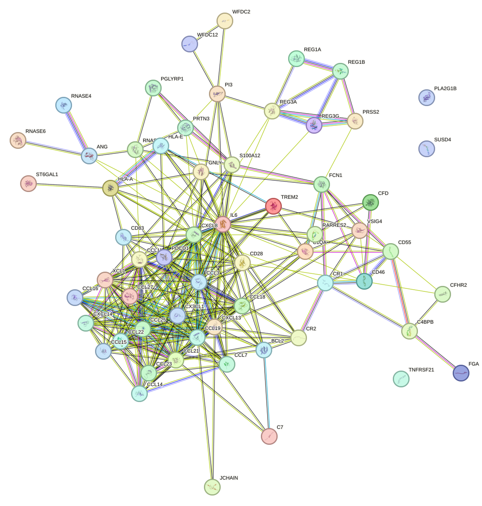
With this network-level context established, the following paragraphs summarize the individual proteins that appeared especially notable in the enrichment analysis. During the function enrichment analysis, we identified serveral significant proteins. We will introduce them in-details in the following.
C4BPB is highly relevant to kidney disease because dysregulated complement activation is a central pathogenic mechanism in several renal disorders, including immune-complex glomerulonephritis, lupus nephritis, C3 glomerulopathy, and thrombotic microangiopathy. By limiting classical pathway amplification through C4b inactivation and C3 convertase decay, C4BPB may protect glomerular capillaries and tubulointerstitial tissues from complement-mediated inflammation and injury. Its interaction with protein S is also notable, as coagulation-complement crosstalk is increasingly recognized in renal microvascular damage. Therefore, altered abundance or activity of C4BPB could plausibly influence susceptibility to inflammatory and thrombotic kidney injury.
In a closely related complement context, CFD appears particularly important because it regulates an amplification step that is often central to renal injury. CFD stands out as one of the most kidney-relevant proteins in this list because the alternative complement pathway is a major driver of renal injury in diseases such as C3 glomerulopathy, atypical hemolytic uremic syndrome, and some forms of membranoproliferative glomerulonephritis. Factor D is rate-limiting for amplification of alternative pathway activation; thus, excessive CFD activity can intensify glomerular C3 deposition, endothelial injury, and inflammatory cell recruitment. Since renal tissue is especially vulnerable to sustained complement amplification, CFD is not only mechanistically important but also therapeutically actionable, as factor D inhibition is being explored in complement-mediated renal disease.
This complement-regulatory theme also extends to proteins that may alter the balance between activation and inhibition on renal tissue surfaces. CFHR2 is particularly important in the context of kidney disease because the CFH-CFHR axis is strongly implicated in complement-mediated glomerular disorders. Competition between CFHR2 and the physiological inhibitor factor H can shift the balance toward persistent complement activation on tissue surfaces, including the glomerular basement membrane and renal microvasculature. Such dysregulation is mechanistically relevant to C3 glomerulopathy and related nephropathies characterized by uncontrolled alternative pathway activity. Its possible association with lipoproteins is also of interest, given the contribution of disordered lipid handling to chronic kidney disease progression and glomerular injury.
By contrast, the next protein appears to connect to kidney disease through a more indirect stress-response framework rather than through canonical complement biology. Although the annotation provided here does not describe the canonical complement receptor 1 function, the listed role in proline biosynthesis and oxidative stress response remains potentially relevant to kidney disease. Oxidative stress is a major mediator of tubular injury, interstitial fibrosis, and progression of chronic kidney disease. Proline metabolism is also linked to redox balance and extracellular matrix production, both of which are central to renal fibrogenesis. Accordingly, proteins that modulate oxidative stress resilience may influence susceptibility to ischemic, toxic, or inflammatory renal injury. However, compared with complement regulators in this list, the kidney relevance of this annotation is more indirect.
Returning to innate immune effector pathways, FCN1 may be relevant because lectin pathway activation has been implicated across several forms of renal injury. FCN1 is relevant to kidney disease because activation of the lectin complement pathway contributes to renal inflammation in infection-associated kidney injury, diabetic kidney disease, ischemia-reperfusion injury, and some glomerulopathies. As a pattern-recognition molecule, FCN1 may link microbial or damage-associated signals to complement activation within the kidney, thereby promoting leukocyte recruitment and local tissue injury. Its capacity to stimulate monocytes and induce interleukin 8 further strengthens its potential role in amplifying renal inflammation, especially in settings where innate immune activation drives tubulointerstitial damage.
A related but distinct axis of kidney injury involves coagulation and matrix deposition, which makes FGA noteworthy in this dataset. FGA is highly pertinent to kidney disease because coagulation abnormalities and fibrin deposition are common features of both acute and chronic renal injury. In glomerular disease, fibrin accumulation can accompany capillary wall damage and crescent formation, while in acute kidney injury and thrombotic microangiopathy, intrarenal coagulation contributes to ischemia and inflammation. The role of fibrin in wound repair and immune signaling is also relevant, as persistent fibrin-rich matrices can promote maladaptive repair, fibrosis, and leukocyte recruitment. Thus, FGA links hemostasis, inflammation, and tissue remodeling, three major processes in renal disease progression.
Shifting from complement and coagulation to podocyte biology, PLA2G1B may have especially direct glomerular relevance. PLA2G1B is one of the most directly kidney-relevant proteins in the dataset because its interaction with PLA2R1 is explicitly connected to podocyte survival and glomerular homeostasis [369]. Podocyte injury is a defining mechanism in proteinuric kidney diseases, including membranous nephropathy, focal segmental glomerulosclerosis, and diabetic kidney disease. Because PLA2R1 is a major autoantigen in primary membranous nephropathy, proteins that engage this receptor may influence podocyte signaling, stress responses, and glomerular barrier integrity. In addition, phospholipid metabolism and inflammatory lipid mediators are increasingly recognized as contributors to renal injury and repair. Therefore, PLA2G1B has both mechanistic and translational relevance to glomerular disease. [370] [371] [372] [369] [373]
Another protein with strong renal relevance, though through vasculitic injury rather than podocyte signaling, is PRTN3. PRTN3 is highly relevant to kidney disease because it is a well-established autoantigen in ANCA-associated vasculitis, a major cause of rapidly progressive glomerulonephritis. Its proteolytic activity can remodel extracellular matrix and contribute to vascular and glomerular injury, while its role in neutrophil activation and transendothelial migration aligns closely with the pathogenesis of pauci-immune necrotizing crescentic nephritis. The cited functions linking PRTN3 to inflammatory signaling and endothelial interactions support its importance in small-vessel inflammation, which in the kidney can culminate in capillary rupture, crescent formation, and acute loss of renal function. [114] [115] [116] [117] [118] [119]
In comparison with these more classically immune-mediated examples, RARRES2 may connect kidney disease to broader immunometabolic dysfunction. RARRES2 is relevant to kidney disease because chronic kidney disease is tightly linked to systemic inflammation, metabolic dysfunction, endothelial injury, and altered adipokine signaling. The protein’s dual immunometabolic functions make it especially interesting in obesity-related kidney disease, diabetic nephropathy, and cardiorenal syndromes. Its pro-inflammatory actions may exacerbate insulin resistance, vascular dysfunction, and leukocyte recruitment, whereas its anti-inflammatory endothelial effects suggest that context-dependent processing may determine whether it is protective or pathogenic. This balance is highly pertinent to renal disease, where metabolic stress and inflammation frequently coexist and drive progressive nephron loss.
Host defense within the urinary tract provides another plausible route by which enriched proteins may influence renal outcomes. RNASE6 has a meaningful connection to kidney disease through host defense in the urinary tract [374]. Urinary tract infections are a major cause of ascending renal infection, pyelonephritis, and recurrent inflammatory injury that can ultimately impair renal function. By contributing to urinary tract sterility and exerting broad antibacterial activity, RNASE6 may help prevent microbial colonization and limit infection-driven kidney damage. This is particularly relevant in patients with structural urinary abnormalities, catheter use, diabetes, or chronic kidney disease, all of whom are at increased risk of infection-related renal complications. [375] [374]
At the same time, post-translational regulation of immune and structural proteins may also be relevant to renal injury susceptibility. ST6GAL1 is potentially relevant to kidney disease because glycosylation, and particularly sialylation, is critical for the stability and function of circulating glycoproteins, immune mediators, and cell-surface receptors. In the kidney, altered sialylation can influence podocyte charge barrier properties, complement regulation, leukocyte interactions, and fibrotic signaling. Although the annotation here is concise, enzymes controlling sialylation are increasingly implicated in inflammatory and fibrotic diseases, suggesting that ST6GAL1 may affect renal susceptibility to immune injury and chronic remodeling.
This discussion naturally returns to complement control, where SUSD4 may represent another endogenous protective factor. SUSD4 is strongly relevant to kidney disease because it directly restrains complement activation at the level of C3 convertase assembly and C3b deposition. Since excessive complement activity is a major cause of glomerular and microvascular injury, proteins such as SUSD4 may be important endogenous protectors against renal inflammation. Its ability to inhibit both classical and alternative pathway-mediated C3b deposition is especially notable, as many kidney diseases involve overlapping complement triggers. Reduced SUSD4 function could therefore predispose to glomerular complement deposition, while increased expression might represent a compensatory protective response.
Beyond complement biology, cell death and inflammatory signaling pathways may provide an additional layer of disease relevance. TNFRSF21 is relevant to kidney disease because apoptosis, inflammatory cell signaling, and pyroptosis are central mechanisms of renal parenchymal loss in both acute and chronic settings. Death receptor signaling can contribute to tubular epithelial injury, interstitial inflammation, and maladaptive remodeling. Its described roles in adaptive immune regulation further connect it to immune-mediated nephropathies, while the reactive oxygen species-linked pyroptosis pathway is particularly interesting given the prominence of oxidative stress and inflammasome-like injury in acute kidney injury and progressive chronic kidney disease. Thus, TNFRSF21 may integrate immune activation with direct tissue injury in the diseased kidney. [376] [377] [378] [379] [380]
Myeloid cell regulation offers a related but distinct perspective on renal inflammation and repair. TREM2 is of interest in kidney disease because monocytes, macrophages, and dendritic cells are major determinants of renal inflammation, repair, and fibrosis. The TREM2 signaling axis has been increasingly associated with tissue macrophage activation states that can either promote debris clearance and recovery or drive chronic inflammatory remodeling. Its roles in phagocytosis, cytokine regulation, and myeloid cell activation suggest that it may shape the balance between protective and maladaptive immune responses in injured kidneys. This is particularly relevant in acute kidney injury, interstitial nephritis, and fibrotic chronic kidney disease, where macrophage phenotype strongly influences outcome. [381] [382] [383] [384] [385] [99] [386] [387] [388] [389] [390] [391] [392]
Protease regulation may represent yet another mechanism by which this pathway intersects with kidney remodeling. WFDC2 may have kidney relevance through regulation of protease activity in inflammatory and remodeling environments. Protease-antiprotease imbalance contributes to extracellular matrix turnover, epithelial injury, and fibrosis in renal disease. Although the annotation is brief, broad-range protease inhibitors can be important modulators of tissue protection, limiting excessive proteolysis during inflammation or injury. This makes WFDC2 a potentially relevant marker or mediator in chronic kidney disease progression, especially in disorders characterized by ongoing epithelial damage and matrix remodeling.
A similar logic may apply to WFDC12, although the available evidence appears more tentative and indirect. WFDC12 may be relevant to kidney disease in two complementary ways. First, its antibacterial activity suggests a role in host defense against urinary pathogens, which is important for preventing ascending infection and renal parenchymal injury. Second, as a putative proteinase inhibitor, it may modulate inflammatory tissue damage by constraining excessive protease activity. Although direct renal evidence is not provided in the annotation, both antimicrobial defense and protease regulation are biologically plausible mechanisms linking WFDC12 to preservation of urinary tract and kidney integrity.
Beyond individual proteins, the network also suggests that subsets of proteins may function together as coordinated modules. There are also small set of proteins function together to form a cluster.The network supports a coherent interpretation of this cluster as an immune-inflammatory trafficking module with potential relevance to kidney disease through regulation of leukocyte recruitment, inflammatory persistence, and tissue remodeling. The protein interaction structure is robust under the retained criteria, with all 26 proteins contained in a single connected component supported by 69 high-confidence associations (mean retained score 0.885). The highest-degree nodes, including C-X-C motif chemokine ligand 8 (degree 14), C-C motif chemokine ligand 19 (degree 12), C-C motif chemokine ligand 21 (degree 10), C-C motif chemokine ligand 11 (degree 10), and C-X-C motif chemokine ligand 13 (degree 10), indicate that chemokine-centered communication is the dominant organizing principle of the cluster. Functionally, several members direct compartment-specific leukocyte homing: C-C motif chemokine ligand 19 and C-C motif chemokine ligand 21 recruit naive T cells and support lymphocyte positioning in secondary lymphoid tissues; C-X-C motif chemokine ligand 13 is chemotactic for B lymphocytes; C-C motif chemokine ligand 27 attracts skin-associated memory T cells; C-C motif chemokine ligand 22 recruits activated or effector T cells, monocytes, dendritic cells, and natural killer cells; C-C motif chemokine ligand 23 and C-C motif chemokine ligand 16 attract monocytes and lymphocytes; lymphotactin contributes to thymic dendritic-cell localization and regulatory T-cell development; C-C motif chemokine ligand 11 promotes eosinophil accumulation; and C-X3-C motif chemokine ligand 1 and C-X3-C motif chemokine receptor 1 signaling mediates monocyte, macrophage, and natural killer-cell migration and survival in inflamed tissues. These functions are relevant to kidney disease because renal injury commonly involves coordinated infiltration of monocytes or macrophages, T cells, and other leukocytes, followed by sustained cytokine production and structural damage. Interleukin 6 trans-signaling is particularly notable because the soluble interleukin 6 receptor confers pro-inflammatory interleukin 6 activity and is implicated in chronic inflammatory disease, while also inducing vascular endothelial growth factor production and influencing regeneration. S100 calcium binding protein A12 further amplifies innate inflammation through advanced glycosylation end-product specific receptor, mitogen-activated protein kinase, and nuclear factor kappa B pathways, promoting cytokine or chemokine production and leukocyte adhesion. C-X-C motif chemokine ligand 8 contributes additional inflammatory context through effects on extracellular matrix organization, endothelial chemokine handling, leukocyte rolling, and limitation or shaping of neutrophil recruitment. B-cell lymphoma 2 may prolong survival of infiltrating or resident cells by suppressing apoptosis and may also attenuate inflammasome-linked interleukin 1 beta release, whereas programmed cell death 1- and cluster of differentiation 28-related functions indicate that the balance between T-cell activation and inhibition is embedded within the cluster. Cluster of differentiation 83 is consistent with antigen-presentation processes that can sustain adaptive immune responses. Ribonuclease A family member 4, which has antimicrobial activity against uropathogenic Escherichia coli and may contribute to urinary tract sterility, together with angiogenin-related ribonuclease regulation, suggests a host-defense layer that may be relevant in kidney disease settings linked to urinary tract infection or pyelonephritis. The retained association pattern further supports coordinated chemokine biology rather than isolated factors, with especially strong links such as C-C motif chemokine ligand 19-C-X-C motif chemokine ligand 13 (score 0.998), C-C motif chemokine ligand 19-C-C motif chemokine ligand 21 (0.997), C-C motif chemokine ligand 21-lymphotactin (0.998), C-C motif chemokine ligand 21-C-C motif chemokine ligand 23 (0.997), C-C motif chemokine ligand 21-C-X-C motif chemokine ligand 14 (0.997), and C-X-C motif chemokine ligand 8-interleukin 6 (0.991). Because STRING associations integrate functional, coexpression, database, text-mining, experimental, and in some cases physical evidence, these edges should be interpreted as high-confidence biological associations and not uniformly as direct physical interactions. Overall, the cluster is most consistent with a kidney disease-relevant program of immune-cell recruitment, inflammatory signal propagation, antigen-driven lymphocyte organization, and tissue microenvironment remodeling that could contribute to renal inflammation, chronic injury, and impaired resolution. [8] [9] [393] [27] [343] [344] [394] [395] [396] [397] [398] [399] [400] [46] [47] [401] [402] [403] [404] [405] [406] [407] [408] [409] [216] [217] [218] [219] [220] [221] [222] [223] [224] [225] [226] [227] [228] [229] [230] [63] [50]
A second, smaller module appears more compact and may point toward a different biological theme. The cluster contains four proteins in one connected component with four retained high-confidence associations (mean protein interaction score 0.921), indicating a coherent functional module under the current network criteria. REG3A is the highest-degree node (degree 3; weighted score 2.707), linking REG1A, REG1B, and REG3G, and therefore appears to organize the cluster’s shared biology. The strongest association is between REG1A and REG1B (score 0.977; coexpression, experimental, and functional evidence), which is consistent with their highly similar annotated roles in calcium carbonate precipitation inhibition and regeneration-related processes. REG3A is also strongly associated with REG1A (score 0.938) and REG1B (score 0.875) through coexpression and functional evidence, while REG3A and REG3G are connected by a high-confidence association (score 0.894) supported by database, functional, and physical evidence; however, these STRING-derived associations should be interpreted as high-confidence protein associations and not uniformly as direct physical binding. Functionally, the cluster therefore supports a combined interpretation of epithelial or secreted tissue-protective activity, coupling regenerative programs with antibacterial defense. In the context of kidney disease, this type of module may be relevant because renal injury commonly involves tissue damage together with heightened susceptibility to infection or inflammatory stress. The antimicrobial activities of REG3A and REG3G could be pertinent to host defense during renal compromise, whereas the regeneration-associated properties of REG1A and REG1B may reflect responses linked to tissue repair. In addition, the annotation that REG1A and REG1B may inhibit spontaneous calcium carbonate precipitation suggests a potential connection to pathological mineral handling, which could be relevant in kidney disease settings where abnormal precipitation or stone-related processes contribute to injury. Overall, the network supports a compact, high-confidence association cluster consistent with coordinated regenerative and antimicrobial functions that may contribute to kidney disease through injury response, protection against microbial challenge, and possible modulation of abnormal mineral precipitation.
This pathway label refers to a biological state in which colon goblet cells are present at low abundance or higher, indicating variation in the representation or activity of the mucus-secreting epithelial lineage within the colon. Goblet cells are specialized epithelial cells that synthesize and secrete mucins, trefoil factors, antimicrobial mediators, and other components that form the intestinal mucus barrier. Through these functions, goblet cells help maintain spatial separation between intestinal microorganisms and the epithelial surface, regulate antigen exposure, support epithelial repair, and contribute to immune homeostasis in the gut. Alterations in goblet cell number, differentiation, or secretory function can weaken the mucus barrier, increase intestinal permeability, promote microbial translocation, and amplify local and systemic inflammation. Because the intestine and the kidney are linked through immune, metabolic, and microbial mechanisms, changes in colon goblet cell biology are potentially relevant to kidney disease, particularly through the broader gut-kidney axis.
Given this biological context, the potential kidney relevance of the pathway can be considered, although the available evidence remains limited.
No relevant publications were provided for this pathway, so a direct literature-supported pathway-to-kidney disease analysis cannot be made from the supplied evidence. Nevertheless, from a biological perspective, colon goblet cells are plausibly related to kidney disease because they are central to preservation of the intestinal mucus barrier, and disruption of this barrier can increase exposure of the host to microbial products, inflammatory signals, and gut-derived metabolites that may contribute to systemic inflammation and renal injury. In kidney disease, especially chronic forms, intestinal barrier dysfunction, dysbiosis, and accumulation of microbially derived uremic toxins are widely considered important components of the gut-kidney axis. Within that framework, reduced goblet cell abundance or impaired goblet cell function could favor mucus depletion, epithelial stress, and enhanced passage of pro-inflammatory or nephroactive compounds into the circulation, thereby potentially worsening kidney inflammation, fibrosis, and functional decline. However, because the publication list is empty, this relationship should be regarded as a biologically reasoned hypothesis rather than a conclusion directly supported by the cited literature for this specific pathway.
To complement this cautious biological interpretation, the network-level properties of the kidney disease-associated proteins provide an additional, although still indirect, layer of evidence.
There were 58 kidney disease-associated proteins significantly enriched in the pathway describing variation in colon goblet cell abundance or activity, a biological state linked to mucus barrier maintenance, epithelial protection, and broader gut-kidney axis signaling. Within this 58-protein set, 14 high-confidence protein-protein interaction edges were retained, connecting 19 proteins, which corresponds to 32.8 percent of all pathway proteins, with a mean retained interaction score of 0.841. Network centrality was modest and distributed across a small subset of proteins, with protein disulfide isomerase family A member 3 and anterior gradient 2 each showing degree 3, followed by keratin 18, keratin 19, and cadherin 1 with degree 2; the highest weighted scores were 2.636 for protein disulfide isomerase family A member 3, 2.405 for anterior gradient 2, 1.809 for keratin 18, 1.805 for keratin 19, and 1.690 for cadherin 1.
This overall topology further suggests that the retained interactions are concentrated in a limited number of interpretable modules rather than being broadly distributed across the full protein set.
The retained network was organized into 4 connected components, indicating a fragmented but interpretable interaction structure. The largest component contained 6 proteins and 6 edges with a mean score of 0.835, including anterior gradient 2, beta-2-microglobulin, prolyl 4-hydroxylase subunit beta, protein disulfide isomerase family A member 3, trefoil factor 1, and trefoil factor 3, whereas the second component contained 5 proteins and 4 edges with a higher mean score of 0.874 and included cadherin 1, carcinoembryonic antigen-related cell adhesion molecule 5, Kruppel-like factor 4, keratin 18, and keratin 19. Additional smaller components comprised cadherin 17 with galectin 4 at a score of 0.762 and cathepsin S with legumain at a score of 0.932. Among the strongest retained pairs were beta-2-microglobulin with protein disulfide isomerase family A member 3 at 0.999, cathepsin S with legumain at 0.932, and keratin 18 with keratin 19 at 0.928, although these associations should be interpreted as high-confidence functional or knowledge-based relationships rather than over-stated as direct physical binding in every case.
For visual reference, we include the corresponding network representation and the linked external resource below.
We include the protein-protein interaction network visualization below together with the interactive STRING network page.
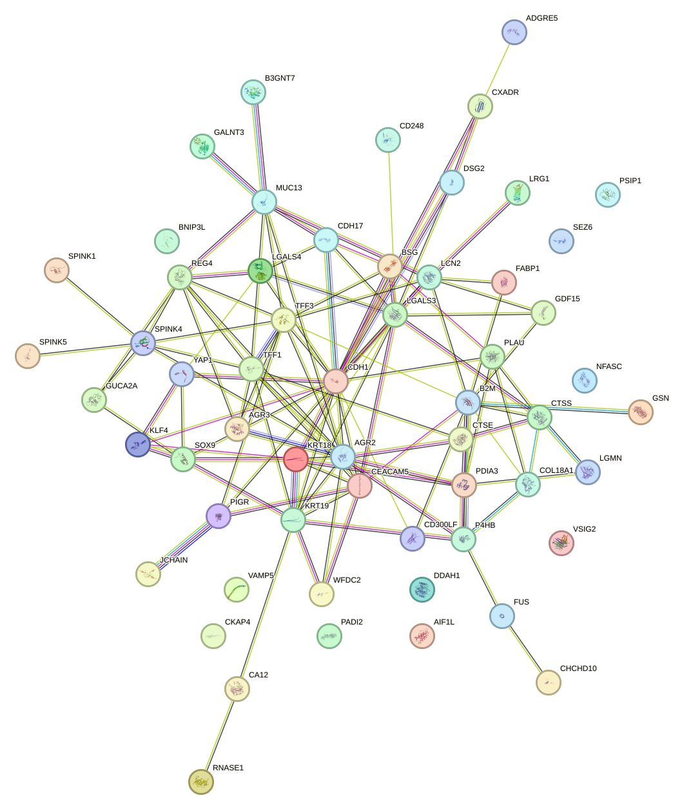
Moving from network structure to individual candidates, the function enrichment analysis highlights several proteins that may be relevant to kidney disease to varying degrees.
During the function enrichment analysis, we identified serveral significant proteins. We will introduce them in-details in the following.
DDAH1 is highly relevant to kidney disease because nitric oxide bioavailability is a central determinant of renal vascular tone, glomerular hemodynamics, endothelial integrity, and tubulointerstitial perfusion. By degrading ADMA and MMA, DDAH1 counteracts endogenous inhibition of nitric oxide synthase and supports nitric oxide production. This function is important in chronic kidney disease and diabetic kidney disease, where endothelial dysfunction, intrarenal hypoxia, and microvascular injury are common pathogenic features. Impaired DDAH1 activity or increased ADMA levels would be expected to exacerbate vasoconstriction, oxidative stress, inflammation, and progressive nephron loss. Thus, among the listed proteins, DDAH1 stands out as a mechanistically plausible regulator of renal vascular injury and progression of kidney dysfunction.
Another protein with comparatively direct kidney relevance is LCN2, whose known biology aligns closely with established injury pathways.
LCN2 is one of the strongest kidney-related candidates in this list because it has direct roles in renal biology and is widely recognized as a marker and mediator of kidney injury. Its annotated roles in renal development, iron handling, apoptosis, and innate immunity are all highly pertinent to kidney disease. In injured renal tubules, dysregulated iron metabolism can amplify oxidative stress and mitochondrial damage, while LCN2-mediated iron trafficking may influence whether cells survive or undergo apoptosis. Its antimicrobial iron-sequestration function is also relevant in urinary tract and kidney infections. The combination of epithelial stress signaling, tubular injury, inflammation, and iron-dependent toxicity makes LCN2 particularly important in acute kidney injury and chronic kidney disease progression. [410] [411] [412]
A related but distinct aspect of kidney pathology involves lysosomal processing and tubular homeostasis, which brings LGMN into focus.
LGMN has a direct and compelling connection to kidney disease because its annotation explicitly states that it is required for normal lysosomal protein degradation in renal proximal tubules. Proximal tubular cells depend heavily on lysosomal processing to handle reabsorbed proteins and maintain cellular homeostasis. Defects in this pathway can promote tubular protein overload, lysosomal stress, inflammation, and progressive tubulointerstitial damage. In addition, the role of LGMN in antigen presentation links it to renal inflammatory and immune-mediated injury, while its involvement in EGFR degradation suggests a possible influence on epithelial proliferation and maladaptive repair after injury. These combined functions place LGMN at the intersection of tubular homeostasis, immune activation, and repair mechanisms relevant to kidney disease. [413] [414]
In comparison with these tubular mechanisms, CD248 may be more relevant to stromal, vascular, and inflammatory remodeling during disease progression.
CD248 is notable in the context of kidney disease because it integrates several processes central to renal injury progression: microvascular remodeling, inflammation, fibrosis-associated stromal activation, coagulation, and metabolic signaling. Its role in pericyte proliferation through PDGF receptor signaling is particularly relevant, since pericyte activation and detachment are implicated in capillary rarefaction and myofibroblast generation during chronic kidney disease. Its ability to amplify macrophage inflammatory responses suggests a contribution to persistent renal inflammation, while its effects on insulin signaling may be relevant to diabetic kidney disease. The factor X scaffolding function also raises the possibility of links to intrarenal coagulation and vascular injury. Overall, CD248 stands out as a plausible mediator of fibrovascular remodeling in progressive nephropathy. [415] [416] [417] [418] [419] [420]
Extracellular matrix regulation and angiogenic balance provide another mechanistic angle, which is reflected in COL18A1.
COL18A1 is relevant to kidney disease because the renal microvasculature is essential for maintaining filtration and oxygen delivery, and dysregulated angiogenesis is a feature of both chronic kidney disease and diabetic nephropathy. The anti-angiogenic activity of COL18A1, including inhibition of VEGFA-KDR/VEGFR2 signaling, may influence glomerular endothelial survival, capillary stability, and repair responses after injury. In the kidney, excessive anti-angiogenic signaling can contribute to capillary rarefaction and hypoxia, whereas altered extracellular matrix signaling can promote fibrosis. Therefore, COL18A1 is important as a matrix-derived regulator of endothelial behavior with potential implications for glomerular and peritubular vascular pathology. [332] [333]
Mitochondrial quality control is also a recurring theme in kidney injury, making BNIP3L a plausible candidate in this context.
BNIP3L is a strong mechanistic candidate for kidney disease relevance because mitochondrial injury and defective mitophagy are central drivers of tubular cell death and chronic progression after acute injury. Renal tubular epithelial cells are highly energy-dependent, and accumulation of damaged mitochondria promotes oxidative stress, inflammasome activation, and fibrosis. The annotated role of BNIP3L in apoptosis and mitochondrial protein quality control suggests that it may influence whether stressed renal cells adapt or undergo cell death. This is particularly pertinent in ischemic, toxic, and diabetic kidney injury, where mitochondrial dysfunction is a major pathogenic event.
Consistent with this mitochondrial theme, CHCHD10 may also merit consideration, although the annotation provides a more limited basis for inference.
Although the annotation is concise, CHCHD10 is potentially relevant to kidney disease because mitochondrial architecture is critical for oxidative phosphorylation in renal tubular cells. Cristae disruption impairs ATP generation and can trigger reactive oxygen species production, apoptosis, and maladaptive repair. Since mitochondrial structural defects are increasingly recognized in acute kidney injury and chronic kidney disease, proteins such as CHCHD10 that preserve mitochondrial organization may be important determinants of renal resilience to metabolic and toxic stress.
Inflammatory signaling and maladaptive tissue repair are represented by another candidate, LGALS3.
LGALS3 is highly relevant to kidney disease because inflammation and maladaptive repair are major determinants of renal fibrosis and functional decline. Its roles in leukocyte recruitment and activation suggest a direct contribution to the inflammatory milieu that drives glomerular and tubulointerstitial injury. In addition, its involvement in membrane damage recognition and autophagy-related processes may affect how renal epithelial and immune cells respond to stress. These functions are especially pertinent in chronic kidney disease, where persistent macrophage-rich inflammation and defective stress responses promote scarring.
Immune processing functions also point toward potential relevance for CTSE, particularly in immune-mediated forms of renal injury.
CTSE is potentially important in kidney disease because antigen processing and adaptive immune activation are central to many forms of glomerulonephritis and tubulointerstitial nephritis. By contributing to MHC class II-mediated antigen presentation, CTSE may influence local or systemic immune responses against renal antigens or deposited immune complexes. Although the annotation does not mention the kidney directly, this immunologic function gives CTSE plausible relevance in immune-mediated renal injury.
By contrast, the kidney connection for CTSS appears more indirect on the basis of the supplied annotation.
CTSS is less directly linked to kidney disease on the basis of the provided annotation alone. However, because cell-cycle regulation influences tubular epithelial proliferation and repair after injury, proteins affecting mitotic progression can still be relevant in renal regeneration or maladaptive proliferation. The kidney connection here is therefore more indirect and weaker than for inflammatory, vascular, or mitochondrial proteins in this list.
Developmental regulation introduces another potentially informative perspective, particularly in the case of SOX9.
SOX9 stands out because its annotation explicitly includes a role in kidney development. Developmental regulators often remain relevant in disease, particularly in injury-induced repair, epithelial plasticity, and fibrosis. SOX9-mediated control of progenitor behavior, differentiation, and extracellular matrix programs suggests that it may influence renal morphogenesis as well as reactivation of developmental pathways during chronic injury. In kidney disease, aberrant re-engagement of developmental transcriptional programs can contribute either to adaptive regeneration or to maladaptive remodeling and fibrosis. [421] [422]
For some proteins, however, the available annotation is too limited to support a meaningful evidence-based interpretation.
CA12 cannot be prioritized confidently from the supplied annotation because no function is given. Consequently, no evidence-based kidney disease interpretation can be drawn here from the provided data alone.
A similar limitation applies to LRG1.
LRG1 cannot be fully interpreted from the current input because no function is listed. Therefore, despite potential biological interest, it cannot be robustly connected to kidney disease using only the provided annotation.
Lipid handling provides yet another mechanistic route through which pathway proteins may intersect with kidney disease biology.
FABP1 is relevant to kidney disease because lipid dysmetabolism contributes to tubular toxicity, oxidative stress, and chronic kidney disease progression. Although the annotation emphasizes hepatocyte biology, the core function of intracellular lipid binding and trafficking is mechanistically pertinent to renal epithelial cells, which are vulnerable to lipotoxic injury in diabetes, obesity-associated kidney disease, and proteinuric states. Proteins that regulate cellular handling of fatty acids and cholesterol may therefore influence renal metabolic stress and fibrotic remodeling.
Some pathway components may act more through systemic stress adaptation than through direct renal cell-autonomous mechanisms, as illustrated by GDF15 pathway components.
GDF15 pathway components are relevant to kidney disease primarily through systemic stress and metabolic adaptation rather than direct renal cell biology in the provided annotation. In advanced kidney disease, anorexia, weight loss, inflammation, and altered energy balance are common clinical features; therefore, a stress-responsive pathway that suppresses appetite and modulates metabolism may have translational importance. However, based strictly on the supplied function, its connection to kidney disease is more indirect than that of proteins involved in tubular homeostasis, vascular regulation, or inflammation. [171] [172] [173] [174] [175] [176] [177] [178] [179] [180] [181] [182] [183]
Finally, WFDC2 may also be relevant, although the current evidence supports a relatively cautious interpretation.
WFDC2 may be relevant to kidney disease because protease-antiprotease balance influences extracellular matrix turnover, epithelial barrier integrity, and inflammatory tissue remodeling. In chronic kidney disease, dysregulated proteolysis can contribute to fibrosis and structural damage. Although the annotation is brief, a broad-spectrum protease inhibitor could plausibly affect renal remodeling and inflammatory injury, but the kidney link remains less direct than for proteins with explicit roles in renal tubules, vasculature, or immune processing.
Beyond individual proteins, the retained interaction network also contains small functional clusters that may help organize these signals into biologically coherent modules.
There are also small set of proteins function together to form a cluster.The cluster contains six proteins in a single connected component with six retained high-confidence associations (mean retained PPI score 0.835), indicating a coherent functional module under the current network criteria. The highest-degree nodes, PDIA3 and AGR2 (degree 3 each), suggest that secretory protein quality control and epithelial mucus-associated biology are central organizing themes in this cluster. AGR2 is required for MUC2 post-transcriptional synthesis and secretion and may support mucus production by intestinal cells, while also promoting cell adhesion and being implicated in cell migration, differentiation, and growth [423]. TFF1 and TFF3 further reinforce a protective epithelial program: TFF1 stabilizes the mucous gel barrier over gastrointestinal mucosa and may inhibit calcium oxalate crystal growth in urine, whereas TFF3 supports maintenance and repair of intestinal mucosa and promotes epithelial motility during healing. These functions converge on epithelial protection, restitution, and secretory barrier integrity. PDIA3 and P4HB contribute complementary endoplasmic reticulum and cell-surface oxidoreductase/chaperone activities that regulate disulfide bond formation, protein folding, and structural maturation of client proteins; notably, PDIA3 is a core component of the MHC class I peptide-loading complex and is essential for TAPBP folding and antigen presentation to cytotoxic T cells, while B2M is directly relevant to MHC class I biology. The strongest retained association is B2M-PDIA3 (score 0.999), supported by multiple STRING evidence categories including experimental and physical evidence, consistent with a close relationship in antigen-presentation pathways, although STRING associations should not be over-interpreted as uniformly direct binding. Additional retained edges, including AGR2-PDIA3 (score 0.82), P4HB-PDIA3 (0.817), AGR2-TFF3 (0.799), TFF1-TFF3 (0.791), and AGR2-TFF1 (0.786), support functional coupling between secretory folding machinery and epithelial repair/barrier factors, although several of these are based on functional association evidence rather than explicit direct physical interaction. In the context of kidney disease, this cluster may be relevant through two main mechanisms supported by the supplied annotations: first, epithelial protection and repair programs may influence renal or urinary tract barrier resilience under injury conditions; second, TFF1 may be particularly pertinent because it may inhibit calcium oxalate crystal growth in urine, suggesting a potential protective role against crystal-associated renal injury. In parallel, PDIA3-, P4HB-, and B2M-linked antigen presentation and protein-folding functions could contribute to inflammatory or adaptive immune processes that modulate kidney pathology. Overall, the cluster is best interpreted as a functionally connected module integrating epithelial secretory/barrier maintenance, tissue restitution, proteostasis, and immune presentation, with plausible relevance to kidney disease through urinary crystal modulation, epithelial injury responses, and immune-associated tissue damage. [423] [289]
A second small cluster points toward epithelial identity and host interaction processes, providing a complementary perspective on the retained network.
The cluster contains five proteins connected in a single component with four retained high-confidence associations (mean score 0.874), indicating a coherent but relatively small network under the current filtering criteria. The strongest retained association is between KRT18 and KRT19 (score 0.928; evidence includes string_functional, string_physical, and string_textmining), which is consistent with their related cytoskeletal roles. KRT18 and KRT19 are also the highest-degree proteins in the cluster, alongside CDH1, suggesting that epithelial structural organization is a central feature of this module. Functionally, KRT18 and KRT19 support cytoskeletal integrity and organization, whereas CDH1 serves as a receptor for Listeria monocytogenes and CEACAM5 serves as a receptor for E. coli Dr adhesins, highlighting a host–pathogen interaction axis at the epithelial surface. KLF4 adds a regulatory layer by controlling transcriptional programs involved in epithelial differentiation, barrier establishment, embryonic development, stem cell maintenance, and repression of TP53 transcription. Taken together, the cluster plausibly represents a coordinated program linking epithelial identity, barrier maintenance, cytoskeletal architecture, and susceptibility to microbial engagement. In the context of kidney disease, these functions are relevant because renal health depends on preserved epithelial differentiation and barrier properties, as well as maintenance of structural integrity. Disruption of epithelial regulatory programs or cytoskeletal organization could contribute to epithelial dysfunction, while the presence of microbial receptor functions suggests a potential connection to infection-associated injury or inflammatory stress in kidney-associated epithelia. The network evidence should, however, be interpreted cautiously: although all five proteins are connected in one component, only four retained edges are present, and most associations are supported by functional/text-mining evidence rather than explicit direct physical interaction evidence. Therefore, the cluster supports a biologically plausible epithelial and infection-response module relevant to kidney disease, but the current retained-edge criteria provide limited mechanistic resolution. [424] [425] [426] [427] [428] [429] [430] [431]
1 Weclawiak H, Kamar N, Ould-Mohamed A, Cardeau-Desangles I, Rostaing L. Biological agents in kidney transplantation: belatacept is entering the field.. Expert opinion on biological therapy. 2010 Oct.
2 Goulet B, Baruch A, Moon NS, Poirier M, Sansregret LL, Erickson A, Bogyo M, Nepveu A. A cathepsin L isoform that is devoid of a signal peptide localizes to the nucleus in S phase and processes the CDP/Cux transcription factor.. Molecular cell. 2004 Apr 23.
3 Levy M, Thaiss CA, Zeevi D, Dohnalova L, Zilberman-Schapira G, Mahdi JA, David E, Savidor A, Korem T, Herzig Y, Pevsner-Fischer M, Shapiro H, Christ A, Harmelin A, Halpern Z, Latz E, Flavell RA, Amit I, Segal E, Elinav E. Microbiota-Modulated Metabolites Shape the Intestinal Microenvironment by Regulating NLRP6 Inflammasome Signaling.. Cell. 2015 Dec 3.
4 Nowarski R, Jackson R, Gagliani N, de Zoete MR, Palm NW, Bailis W, Low JS, Harman CC, Graham M, Elinav E, Flavell RA. Epithelial IL-18 Equilibrium Controls Barrier Function in Colitis.. Cell. 2015 Dec 3.
5 Hara H, Seregin SS, Yang D, Fukase K, Chamaillard M, Alnemri ES, Inohara N, Chen GY, Nunez G. The NLRP6 Inflammasome Recognizes Lipoteichoic Acid and Regulates Gram-Positive Pathogen Infection.. Cell. 2018 Nov 29.
6 Tseng SY, Liu M, Dustin ML. CD80 cytoplasmic domain controls localization of CD28, CTLA-4, and protein kinase Ctheta in the immunological synapse.. Journal of immunology (Baltimore, Md. : 1950). 2005 Dec 15.
7 Good-Jacobson KL, Song E, Anderson S, Sharpe AH, Shlomchik MJ. CD80 expression on B cells regulates murine T follicular helper development, germinal center B cell survival, and plasma cell generation.. Journal of immunology (Baltimore, Md. : 1950). 2012 May 1.
8 Garbers C, Thaiss W, Jones GW, Waetzig GH, Lorenzen I, Guilhot F, Lissilaa R, Ferlin WG, Grotzinger J, Jones SA, Rose-John S, Scheller J. Inhibition of classic signaling is a novel function of soluble glycoprotein 130 (sgp130), which is controlled by the ratio of interleukin 6 and soluble interleukin 6 receptor.. The Journal of biological chemistry. 2011 Dec 16.
9 Nakahara H, Song J, Sugimoto M, Hagihara K, Kishimoto T, Yoshizaki K, Nishimoto N. Anti-interleukin-6 receptor antibody therapy reduces vascular endothelial growth factor production in rheumatoid arthritis.. Arthritis and rheumatism. 2003 Jun.
10 Deng L, Wang C, Spencer E, Yang L, Braun A, You J, Slaughter C, Pickart C, Chen ZJ. Activation of the IkappaB kinase complex by TRAF6 requires a dimeric ubiquitin-conjugating enzyme complex and a unique polyubiquitin chain.. Cell. 2000 Oct 13.
11 Conze DB, Wu CJ, Thomas JA, Landstrom A, Ashwell JD. Lys63-linked polyubiquitination of IRAK-1 is required for interleukin-1 receptor- and toll-like receptor-mediated NF-kappaB activation.. Molecular and cellular biology. 2008 May.
12 Yin Q, Lin SC, Lamothe B, Lu M, Lo YC, Hura G, Zheng L, Rich RL, Campos AD, Myszka DG, Lenardo MJ, Darnay BG, Wu H. E2 interaction and dimerization in the crystal structure of TRAF6.. Nature structural & molecular biology. 2009 Jun.
13 Yang WL, Wang J, Chan CH, Lee SW, Campos AD, Lamothe B, Hur L, Grabiner BC, Lin X, Darnay BG, Lin HK. The E3 ligase TRAF6 regulates Akt ubiquitination and activation.. Science (New York, N.Y.). 2009 Aug 28.
14 Ohtake F, Saeki Y, Ishido S, Kanno J, Tanaka K. The K48-K63 Branched Ubiquitin Chain Regulates NF-kappaB Signaling.. Molecular cell. 2016 Oct 20.
15 Kim MJ, Min Y, Shim JH, Chun E, Lee KY. CRBN Is a Negative Regulator of Bactericidal Activity and Autophagy Activation Through Inhibiting the Ubiquitination of ECSIT and BECN1.. Frontiers in immunology. 2019.
16 Xia ZP, Sun L, Chen X, Pineda G, Jiang X, Adhikari A, Zeng W, Chen ZJ. Direct activation of protein kinases by unanchored polyubiquitin chains.. Nature. 2009 Sep 3.
17 Wang Y, Tang Y, Teng L, Wu Y, Zhao X, Pei G. Association of beta-arrestin and TRAF6 negatively regulates Toll-like receptor-interleukin 1 receptor signaling.. Nature immunology. 2006 Feb.
18 Lamothe B, Besse A, Campos AD, Webster WK, Wu H, Darnay BG. Site-specific Lys-63-linked tumor necrosis factor receptor-associated factor 6 auto-ubiquitination is a critical determinant of I kappa B kinase activation.. The Journal of biological chemistry. 2007 Feb 9.
19 Shembade N, Harhaj NS, Liebl DJ, Harhaj EW. Essential role for TAX1BP1 in the termination of TNF-alpha-, IL-1- and LPS-mediated NF-kappaB and JNK signaling.. The EMBO journal. 2007 Sep 5.
20 Ye H, Arron JR, Lamothe B, Cirilli M, Kobayashi T, Shevde NK, Segal D, Dzivenu OK, Vologodskaia M, Yim M, Du K, Singh S, Pike JW, Darnay BG, Choi Y, Wu H. Distinct molecular mechanism for initiating TRAF6 signalling.. Nature. 2002 Jul 25.
21 Liu C, Qian W, Qian Y, Giltiay NV, Lu Y, Swaidani S, Misra S, Deng L, Chen ZJ, Li X. Act1, a U-box E3 ubiquitin ligase for IL-17 signaling.. Science signaling. 2009 Oct 13.
22 Cao Z, Xiong J, Takeuchi M, Kurama T, Goeddel DV. TRAF6 is a signal transducer for interleukin-1.. Nature. 1996 Oct 3.
23 Pham LV, Zhou HJ, Lin-Lee YC, Tamayo AT, Yoshimura LC, Fu L, Darnay BG, Ford RJ. Nuclear tumor necrosis factor receptor-associated factor 6 in lymphoid cells negatively regulates c-Myb-mediated transactivation through small ubiquitin-related modifier-1 modification.. The Journal of biological chemistry. 2008 Feb 22.
24 Sorrentino A, Thakur N, Grimsby S, Marcusson A, von Bulow V, Schuster N, Zhang S, Heldin CH, Landstrom M. The type I TGF-beta receptor engages TRAF6 to activate TAK1 in a receptor kinase-independent manner.. Nature cell biology. 2008 Oct.
25 Xie JJ, Liang JQ, Diao LH, Altman A, Li Y. TNFR-associated factor 6 regulates TCR signaling via interaction with and modification of LAT adapter.. Journal of immunology (Baltimore, Md. : 1950). 2013 Apr 15.
26 Yang Y, Wu S, Wang Y, Pan S, Lan B, Liu Y, Zhang L, Leng Q, Chen D, Zhang C, He B, Cao Y. The Us3 Protein of Herpes Simplex Virus 1 Inhibits T Cell Signaling by Confining Linker for Activation of T Cells (LAT) Activation via TRAF6 Protein.. The Journal of biological chemistry. 2015 Jun 19.
27 Mikolajczak SA, Ma BY, Yoshida T, Yoshida R, Kelvin DJ, Ochi A. The modulation of CD40 ligand signaling by transmembrane CD28 splice variant in human T cells.. The Journal of experimental medicine. 2004 Apr 5.
28 Kim YS, Choi DH, Block ML, Lorenzl S, Yang L, Kim YJ, Sugama S, Cho BP, Hwang O, Browne SE, Kim SY, Hong JS, Beal MF, Joh TH. A pivotal role of matrix metalloproteinase-3 activity in dopaminergic neuronal degeneration via microglial activation.. FASEB journal : official publication of the Federation of American Societies for Experimental Biology. 2007 Jan.
29 Feng T, Tong H, Ming Z, Deng L, Liu J, Wu J, Chen Z, Yan Y, Dai J. Matrix metalloproteinase 3 restricts viral infection by enhancing host antiviral immunity.. Antiviral research. 2022 Oct.
30 Harder J, Meyer-Hoffert U, Teran LM, Schwichtenberg L, Bartels J, Maune S, Schroder JM. Mucoid Pseudomonas aeruginosa, TNF-alpha, and IL-1beta, but not IL-6, induce human beta-defensin-2 in respiratory epithelia.. American journal of respiratory cell and molecular biology. 2000 Jun.
31 Harder J, Bartels J, Christophers E, Schroder JM. A peptide antibiotic from human skin.. Nature. 1997 Jun 26.
32 Jarva M, Phan TK, Lay FT, Caria S, Kvansakul M, Hulett MD. Human beta-defensin 2 kills Candida albicans through phosphatidylinositol 4,5-bisphosphate-mediated membrane permeabilization.. Science advances. 2018 Jul.
33 Yang D, Chertov O, Bykovskaia SN, Chen Q, Buffo MJ, Shogan J, Anderson M, Schroder JM, Wang JM, Howard OM, Oppenheim JJ. Beta-defensins: linking innate and adaptive immunity through dendritic and T cell CCR6.. Science (New York, N.Y.). 1999 Oct 15.
34 Rohrl J, Yang D, Oppenheim JJ, Hehlgans T. Specific binding and chemotactic activity of mBD4 and its functional orthologue hBD2 to CCR6-expressing cells.. The Journal of biological chemistry. 2010 Mar 5.
35 Schutyser E, Struyf S, Menten P, Lenaerts JP, Conings R, Put W, Wuyts A, Proost P, Van Damme J. Regulated production and molecular diversity of human liver and activation-regulated chemokine/macrophage inflammatory protein-3 alpha from normal and transformed cells.. Journal of immunology (Baltimore, Md. : 1950). 2000 Oct 15.
36 Nelson RT, Boyd J, Gladue RP, Paradis T, Thomas R, Cunningham AC, Lira P, Brissette WH, Hayes L, Hames LM, Neote KS, McColl SR. Genomic organization of the CC chemokine mip-3alpha/CCL20/larc/exodus/SCYA20, showing gene structure, splice variants, and chromosome localization.. Genomics. 2001 Apr 1.
37 Ito T, Carson WF 4th, Cavassani KA, Connett JM, Kunkel SL. CCR6 as a mediator of immunity in the lung and gut.. Experimental cell research. 2011 Mar 10.
38 Hieshima K, Imai T, Opdenakker G, Van Damme J, Kusuda J, Tei H, Sakaki Y, Takatsuki K, Miura R, Yoshie O, Nomiyama H. Molecular cloning of a novel human CC chemokine liver and activation-regulated chemokine (LARC) expressed in liver. Chemotactic activity for lymphocytes and gene localization on chromosome 2.. The Journal of biological chemistry. 1997 Feb 28.
39 Caballero-Campo P, Buffone MG, Benencia F, Conejo-Garcia JR, Rinaudo PF, Gerton GL. A role for the chemokine receptor CCR6 in mammalian sperm motility and chemotaxis.. Journal of cellular physiology. 2014 Jan.
40 Diao R, Fok KL, Chen H, Yu MK, Duan Y, Chung CM, Li Z, Wu H, Li Z, Zhang H, Ji Z, Zhen W, Ng CF, Gui Y, Cai Z, Chan HC. Deficient human beta-defensin 1 underlies male infertility associated with poor sperm motility and genital tract infection.. Science translational medicine. 2014 Aug 13.
41 Hromas R, Gray PW, Chantry D, Godiska R, Krathwohl M, Fife K, Bell GI, Takeda J, Aronica S, Gordon M, Cooper S, Broxmeyer HE, Klemsz MJ. Cloning and characterization of exodus, a novel beta-chemokine.. Blood. 1997 May 1.
42 Hoover DM, Boulegue C, Yang D, Oppenheim JJ, Tucker K, Lu W, Lubkowski J. The structure of human macrophage inflammatory protein-3alpha /CCL20. Linking antimicrobial and CC chemokine receptor-6-binding activities with human beta-defensins.. The Journal of biological chemistry. 2002 Oct 4.
43 Oukka M, Wein MN, Glimcher LH. Schnurri-3 (KRC) interacts with c-Jun to regulate the IL-2 gene in T cells.. The Journal of experimental medicine. 2004 Jan 5.
44 Zerial M, Toschi L, Ryseck RP, Schuermann M, Muller R, Bravo R. The product of a novel growth factor activated gene, fos B, interacts with JUN proteins enhancing their DNA binding activity.. The EMBO journal. 1989 Mar.
45 Lan HC, Li HJ, Lin G, Lai PY, Chung BC. Cyclic AMP stimulates SF-1-dependent CYP11A1 expression through homeodomain-interacting protein kinase 3-mediated Jun N-terminal kinase and c-Jun phosphorylation.. Molecular and cellular biology. 2007 Mar.
46 Gao JL, Wynn TA, Chang Y, Lee EJ, Broxmeyer HE, Cooper S, Tiffany HL, Westphal H, Kwon-Chung J, Murphy PM. Impaired host defense, hematopoiesis, granulomatous inflammation and type 1-type 2 cytokine balance in mice lacking CC chemokine receptor 1.. The Journal of experimental medicine. 1997 Jun 2.
47 Ramos CD, Canetti C, Souto JT, Silva JS, Hogaboam CM, Ferreira SH, Cunha FQ. MIP-1alpha[CCL3] acting on the CCR1 receptor mediates neutrophil migration in immune inflammation via sequential release of TNF-alpha and LTB4.. Journal of leukocyte biology. 2005 Jul.
48 Yan J, Zuo G, Sherchan P, Huang L, Ocak U, Xu W, Travis ZD, Wang W, Zhang JH, Tang J. CCR1 Activation Promotes Neuroinflammation Through CCR1/TPR1/ERK1/2 Signaling Pathway After Intracerebral Hemorrhage in Mice.. Neurotherapeutics : the journal of the American Society for Experimental NeuroTherapeutics. 2020 Jul.
49 Linares GR, Brommage R, Powell DR, Xing W, Chen ST, Alshbool FZ, Lau KH, Wergedal JE, Mohan S. Claudin 18 is a novel negative regulator of bone resorption and osteoclast differentiation.. Journal of bone and mineral research : the official journal of the American Society for Bone and Mineral Research. 2012 Jul.
50 Mahoney DJ, Mikecz K, Ali T, Mabilleau G, Benayahu D, Plaas A, Milner CM, Day AJ, Sabokbar A. TSG-6 regulates bone remodeling through inhibition of osteoblastogenesis and osteoclast activation.. The Journal of biological chemistry. 2008 Sep 19.
51 Tiedemann K, Boraschi-Diaz I, Rajakumar I, Kaur J, Roughley P, Reinhardt DP, Komarova SV. Fibrillin-1 directly regulates osteoclast formation and function by a dual mechanism.. Journal of cell science. 2013 Sep 15.
52 Omata Y, Nakamura S, Koyama T, Yasui T, Hirose J, Izawa N, Matsumoto T, Imai Y, Seo S, Kurokawa M, Tsutsumi S, Kadono Y, Morimoto C, Aburatani H, Miyamoto T, Tanaka S. Identification of Nedd9 as a TGF-beta-Smad2/3 Target Gene Involved in RANKL-Induced Osteoclastogenesis by Comprehensive Analysis.. PloS one. 2016.
53 Kim H, Kim T, Jeong BC, Cho IT, Han D, Takegahara N, Negishi-Koga T, Takayanagi H, Lee JH, Sul JY, Prasad V, Lee SH, Choi Y. Tmem64 modulates calcium signaling during RANKL-mediated osteoclast differentiation.. Cell metabolism. 2013 Feb 5.
54 Decker CE, Yang Z, Rimer R, Park-Min KH, Macaubas C, Mellins ED, Novack DV, Faccio R. Tmem178 acts in a novel negative feedback loop targeting NFATc1 to regulate bone mass.. Proceedings of the National Academy of Sciences of the United States of America. 2015 Dec 22.
55 Ratthe C, Girard D. Interleukin-15 enhances human neutrophil phagocytosis by a Syk-dependent mechanism: importance of the IL-15Ralpha chain.. Journal of leukocyte biology. 2004 Jul.
56 Grabstein KH, Eisenman J, Shanebeck K, Rauch C, Srinivasan S, Fung V, Beers C, Richardson J, Schoenborn MA, Ahdieh M, et al.. Cloning of a T cell growth factor that interacts with the beta chain of the interleukin-2 receptor.. Science (New York, N.Y.). 1994 May 13.
57 Badolato R, Ponzi AN, Millesimo M, Notarangelo LD, Musso T. Interleukin-15 (IL-15) induces IL-8 and monocyte chemotactic protein 1 production in human monocytes.. Blood. 1997 Oct 1.
58 Musso T, Calosso L, Zucca M, Millesimo M, Ravarino D, Giovarelli M, Malavasi F, Ponzi AN, Paus R, Bulfone-Paus S. Human monocytes constitutively express membrane-bound, biologically active, and interferon-gamma-upregulated interleukin-15.. Blood. 1999 May 15.
59 Ring AM, Lin JX, Feng D, Mitra S, Rickert M, Bowman GR, Pande VS, Li P, Moraga I, Spolski R, Ozkan E, Leonard WJ, Garcia KC. Mechanistic and structural insight into the functional dichotomy between IL-2 and IL-15.. Nature immunology. 2012 Dec.
60 Giri JG, Ahdieh M, Eisenman J, Shanebeck K, Grabstein K, Kumaki S, Namen A, Park LS, Cosman D, Anderson D. Utilization of the beta and gamma chains of the IL-2 receptor by the novel cytokine IL-15.. The EMBO journal. 1994 Jun 15.
61 Johnston JA, Bacon CM, Finbloom DS, Rees RC, Kaplan D, Shibuya K, Ortaldo JR, Gupta S, Chen YQ, Giri JD, et al.. Tyrosine phosphorylation and activation of STAT5, STAT3, and Janus kinases by interleukins 2 and 15.. Proceedings of the National Academy of Sciences of the United States of America. 1995 Sep 12.
62 Xu L, Jensen H, Johnston JJ, Di Maria E, Kloth K, Cristea I, Sapp JC, Darling TN, Huryn LA, Tranebjaerg L, Cinotti E, Kubisch C, Rodahl E, Bruland O, Biesecker LG, Houge G, Bredrup C. Recurrent, Activating Variants in the Receptor Tyrosine Kinase DDR2 Cause Warburg-Cinotti Syndrome.. American journal of human genetics. 2018 Dec 6.
63 Fulop C, Szanto S, Mukhopadhyay D, Bardos T, Kamath RV, Rugg MS, Day AJ, Salustri A, Hascall VC, Glant TT, Mikecz K. Impaired cumulus mucification and female sterility in tumor necrosis factor-induced protein-6 deficient mice.. Development (Cambridge, England). 2003 May.
64 Najmudin S, Guerreiro CI, Ferreira LM, Romao MJ, Fontes CM, Prates JA. Overexpression, purification and crystallization of the two C-terminal domains of the bifunctional cellulase ctCel9D-Cel44A from Clostridium thermocellum.. Acta crystallographica. Section F, Structural biology and crystallization communications. 2005 Dec 1.
65 Arthur HM, Ure J, Smith AJ, Renforth G, Wilson DI, Torsney E, Charlton R, Parums DV, Jowett T, Marchuk DA, Burn J, Diamond AG. Endoglin, an ancillary TGFbeta receptor, is required for extraembryonic angiogenesis and plays a key role in heart development.. Developmental biology. 2000 Jan 1.
66 Lee NY, Blobe GC. The interaction of endoglin with beta-arrestin2 regulates transforming growth factor-beta-mediated ERK activation and migration in endothelial cells.. The Journal of biological chemistry. 2007 Jul 20.
67 Sugden WW, Meissner R, Aegerter-Wilmsen T, Tsaryk R, Leonard EV, Bussmann J, Hamm MJ, Herzog W, Jin Y, Jakobsson L, Denz C, Siekmann AF. Endoglin controls blood vessel diameter through endothelial cell shape changes in response to haemodynamic cues.. Nature cell biology. 2017 Jun.
68 Nolan-Stevaux O, Zhong W, Culp S, Shaffer K, Hoover J, Wickramasinghe D, Ruefli-Brasse A. Endoglin requirement for BMP9 signaling in endothelial cells reveals new mechanism of action for selective anti-endoglin antibodies.. PloS one. 2012.
69 de la Fuente H, Cruz-Adalia A, Martinez Del Hoyo G, Cibrian-Vera D, Bonay P, Perez-Hernandez D, Vazquez J, Navarro P, Gutierrez-Gallego R, Ramirez-Huesca M, Martin P, Sanchez-Madrid F. The leukocyte activation receptor CD69 controls T cell differentiation through its interaction with galectin-1.. Molecular and cellular biology. 2014 Jul.
70 Hienola A, Pekkanen M, Raulo E, Vanttola P, Rauvala H. HB-GAM inhibits proliferation and enhances differentiation of neural stem cells.. Molecular and cellular neurosciences. 2004 May.
71 Imai S, Heino TJ, Hienola A, Kurata K, Buki K, Matsusue Y, Vaananen HK, Rauvala H. Osteocyte-derived HB-GAM (pleiotrophin) is associated with bone formation and mechanical loading.. Bone. 2009 May.
72 Kuboyama K, Fujikawa A, Suzuki R, Tanga N, Noda M. Role of Chondroitin Sulfate (CS) Modification in the Regulation of Protein-tyrosine Phosphatase Receptor Type Z (PTPRZ) Activity: PLEIOTROPHIN-PTPRZ-A SIGNALING IS INVOLVED IN OLIGODENDROCYTE DIFFERENTIATION.. The Journal of biological chemistry. 2016 Aug 26.
73 Tang C, Wang M, Wang P, Wang L, Wu Q, Guo W. Neural Stem Cells Behave as a Functional Niche for the Maturation of Newborn Neurons through the Secretion of PTN.. Neuron. 2019 Jan 2.
74 Amet LE, Lauri SE, Hienola A, Croll SD, Lu Y, Levorse JM, Prabhakaran B, Taira T, Rauvala H, Vogt TF. Enhanced hippocampal long-term potentiation in mice lacking heparin-binding growth-associated molecule.. Molecular and cellular neurosciences. 2001 Jun.
75 Krellman JW, Ruiz HH, Marciano VA, Mondrow B, Croll SD. Behavioral and neuroanatomical abnormalities in pleiotrophin knockout mice.. PloS one. 2014.
76 Istvanffy R, Kroger M, Eckl C, Gitzelmann S, Vilne B, Bock F, Graf S, Schiemann M, Keller UB, Peschel C, Oostendorp RA. Stromal pleiotrophin regulates repopulation behavior of hematopoietic stem cells.. Blood. 2011 Sep 8.
77 Zou P, Muramatsu H, Sone M, Hayashi H, Nakashima T, Muramatsu T. Mice doubly deficient in the midkine and pleiotrophin genes exhibit deficits in the expression of beta-tectorin gene and in auditory response.. Laboratory investigation; a journal of technical methods and pathology. 2006 Jul.
78 Muramatsu H, Zou P, Kurosawa N, Ichihara-Tanaka K, Maruyama K, Inoh K, Sakai T, Chen L, Sato M, Muramatsu T. Female infertility in mice deficient in midkine and pleiotrophin, which form a distinct family of growth factors.. Genes to cells : devoted to molecular & cellular mechanisms. 2006 Dec.
79 Yu HF, Tao R, Yang ZQ, Wang K, Yue ZP, Guo B. Ptn functions downstream of C/EBPbeta to mediate the effects of cAMP on uterine stromal cell differentiation through targeting Hand2 in response to progesterone.. Journal of cellular physiology. 2018 Feb.
80 Floyd H, Ni J, Cornish AL, Zeng Z, Liu D, Carter KC, Steel J, Crocker PR. Siglec-8. A novel eosinophil-specific member of the immunoglobulin superfamily.. The Journal of biological chemistry. 2000 Jan 14.
81 Kikly KK, Bochner BS, Freeman SD, Tan KB, Gallagher KT, D'alessio KJ, Holmes SD, Abrahamson JA, Erickson-Miller CL, Murdock PR, Tachimoto H, Schleimer RP, White JR. Identification of SAF-2, a novel siglec expressed on eosinophils, mast cells, and basophils.. The Journal of allergy and clinical immunology. 2000 Jun.
82 Propster JM, Yang F, Rabbani S, Ernst B, Allain FH, Schubert M. Structural basis for sulfation-dependent self-glycan recognition by the human immune-inhibitory receptor Siglec-8.. Proceedings of the National Academy of Sciences of the United States of America. 2016 Jul 19.
83 Brown GD, Gordon S. Immune recognition. A new receptor for beta-glucans.. Nature. 2001 Sep 6.
84 Adachi Y, Ishii T, Ikeda Y, Hoshino A, Tamura H, Aketagawa J, Tanaka S, Ohno N. Characterization of beta-glucan recognition site on C-type lectin, dectin 1.. Infection and immunity. 2004 Jul.
85 Taylor PR, Tsoni SV, Willment JA, Dennehy KM, Rosas M, Findon H, Haynes K, Steele C, Botto M, Gordon S, Brown GD. Dectin-1 is required for beta-glucan recognition and control of fungal infection.. Nature immunology. 2007 Jan.
86 Gantner BN, Simmons RM, Canavera SJ, Akira S, Underhill DM. Collaborative induction of inflammatory responses by dectin-1 and Toll-like receptor 2.. The Journal of experimental medicine. 2003 May 5.
87 Viriyakosol S, Fierer J, Brown GD, Kirkland TN. Innate immunity to the pathogenic fungus Coccidioides posadasii is dependent on Toll-like receptor 2 and Dectin-1.. Infection and immunity. 2005 Mar.
88 Yadav M, Schorey JS. The beta-glucan receptor dectin-1 functions together with TLR2 to mediate macrophage activation by mycobacteria.. Blood. 2006 Nov 1.
89 Rogers NC, Slack EC, Edwards AD, Nolte MA, Schulz O, Schweighoffer E, Williams DL, Gordon S, Tybulewicz VL, Brown GD, Reis e Sousa C. Syk-dependent cytokine induction by Dectin-1 reveals a novel pattern recognition pathway for C type lectins.. Immunity. 2005 Apr.
90 Gantner BN, Simmons RM, Underhill DM. Dectin-1 mediates macrophage recognition of Candida albicans yeast but not filaments.. The EMBO journal. 2005 Mar 23.
91 Ariizumi K, Shen GL, Shikano S, Xu S, Ritter R 3rd, Kumamoto T, Edelbaum D, Morita A, Bergstresser PR, Takashima A. Identification of a novel, dendritic cell-associated molecule, dectin-1, by subtractive cDNA cloning.. The Journal of biological chemistry. 2000 Jun 30.
92 Kralova J, Fabisik M, Pokorna J, Skopcova T, Malissen B, Brdicka T. The Transmembrane Adaptor Protein SCIMP Facilitates Sustained Dectin-1 Signaling in Dendritic Cells.. The Journal of biological chemistry. 2016 Aug 5.
93 Campuzano A, Zhang H, Ostroff GR, Dos Santos Dias L, Wuthrich M, Klein BS, Yu JJ, Lara HH, Lopez-Ribot JL, Hung CY. CARD9-Associated Dectin-1 and Dectin-2 Are Required for Protective Immunity of a Multivalent Vaccine against Coccidioides posadasii Infection.. Journal of immunology (Baltimore, Md. : 1950). 2020 Jun 15.
94 Miyake Y, Toyonaga K, Mori D, Kakuta S, Hoshino Y, Oyamada A, Yamada H, Ono K, Suyama M, Iwakura Y, Yoshikai Y, Yamasaki S. C-type lectin MCL is an FcRgamma-coupled receptor that mediates the adjuvanticity of mycobacterial cord factor.. Immunity. 2013 May 23.
95 Zhu LL, Zhao XQ, Jiang C, You Y, Chen XP, Jiang YY, Jia XM, Lin X. C-type lectin receptors Dectin-3 and Dectin-2 form a heterodimeric pattern-recognition receptor for host defense against fungal infection.. Immunity. 2013 Aug 22.
96 Arce I, Martinez-Munoz L, Roda-Navarro P, Fernandez-Ruiz E. The human C-type lectin CLECSF8 is a novel monocyte/macrophage endocytic receptor.. European journal of immunology. 2004 Jan.
97 Sakurai D, Yamasaki S, Arase K, Park SY, Arase H, Konno A, Saito T. Fc epsilon RI gamma-ITAM is differentially required for mast cell function in vivo.. Journal of immunology (Baltimore, Md. : 1950). 2004 Feb 15.
98 Hida S, Yamasaki S, Sakamoto Y, Takamoto M, Obata K, Takai T, Karasuyama H, Sugane K, Saito T, Taki S. Fc receptor gamma-chain, a constitutive component of the IL-3 receptor, is required for IL-3-induced IL-4 production in basophils.. Nature immunology. 2009 Feb.
99 Mocsai A, Abram CL, Jakus Z, Hu Y, Lanier LL, Lowell CA. Integrin signaling in neutrophils and macrophages uses adaptors containing immunoreceptor tyrosine-based activation motifs.. Nature immunology. 2006 Dec.
100 Poole A, Gibbins JM, Turner M, van Vugt MJ, van de Winkel JG, Saito T, Tybulewicz VL, Watson SP. The Fc receptor gamma-chain and the tyrosine kinase Syk are essential for activation of mouse platelets by collagen.. The EMBO journal. 1997 May 1.
101 Lee YC, Kaufmann M, Kitazume-Kawaguchi S, Kono M, Takashima S, Kurosawa N, Liu H, Pircher H, Tsuji S. Molecular cloning and functional expression of two members of mouse NeuAcalpha2,3Galbeta1,3GalNAc GalNAcalpha2,6-sialyltransferase family, ST6GalNAc III and IV.. The Journal of biological chemistry. 1999 Apr 23.
102 Ikehara Y, Shimizu N, Kono M, Nishihara S, Nakanishi H, Kitamura T, Narimatsu H, Tsuji S, Tatematsu M. A novel glycosyltransferase with a polyglutamine repeat; a new candidate for GD1alpha synthase (ST6GalNAc V)(1).. FEBS letters. 1999 Dec 10.
103 Yoon SI, Logsdon NJ, Sheikh F, Donnelly RP, Walter MR. Conformational changes mediate interleukin-10 receptor 2 (IL-10R2) binding to IL-10 and assembly of the signaling complex.. The Journal of biological chemistry. 2006 Nov 17.
104 Usacheva A, Kotenko S, Witte MM, Colamonici OR. Two distinct domains within the N-terminal region of Janus kinase 1 interact with cytokine receptors.. Journal of immunology (Baltimore, Md. : 1950). 2002 Aug 1.
105 Shi J, Wang H, Guan H, Shi S, Li Y, Wu X, Li N, Yang C, Bai X, Cai W, Yang F, Wang X, Su L, Zheng Z, Hu D. IL10 inhibits starvation-induced autophagy in hypertrophic scar fibroblasts via cross talk between the IL10-IL10R-STAT3 and IL10-AKT-mTOR pathways.. Cell death & disease. 2016 Mar 10.
106 Sanchez-Martin P, Sou YS, Kageyama S, Koike M, Waguri S, Komatsu M. NBR1-mediated p62-liquid droplets enhance the Keap1-Nrf2 system.. EMBO reports. 2020 Mar 4.
107 Merkley SD, Goodfellow SM, Guo Y, Wilton ZER, Byrum JR, Schwalm KC, Dinwiddie DL, Gullapalli RR, Deretic V, Jimenez Hernandez A, Bradfute SB, In JG, Castillo EF. Non-autophagy Role of Atg5 and NBR1 in Unconventional Secretion of IL-12 Prevents Gut Dysbiosis and Inflammation.. Journal of Crohn's & colitis. 2022 Feb 23.
108 Bortolotti D, Gentili V, Rizzo S, Rotola A, Rizzo R. SARS-CoV-2 Spike 1 Protein Controls Natural Killer Cell Activation via the HLA-E/NKG2A Pathway.. Cells. 2020 Aug 26.
109 Aslan C, Goknar N, Kelesoglu E, Uckardes D, Candan C. Long-term Results in Children with Henoch-Schonlein Nephritis.. Medeniyet medical journal. 2022 Jun 23.
110 Bates JM, Raffi HM, Prasadan K, Mascarenhas R, Laszik Z, Maeda N, Hultgren SJ, Kumar S. Tamm-Horsfall protein knockout mice are more prone to urinary tract infection: rapid communication.. Kidney international. 2004 Mar.
111 Mo L, Huang HY, Zhu XH, Shapiro E, Hasty DL, Wu XR. Tamm-Horsfall protein is a critical renal defense factor protecting against calcium oxalate crystal formation.. Kidney international. 2004 Sep.
112 Pak J, Pu Y, Zhang ZT, Hasty DL, Wu XR. Tamm-Horsfall protein binds to type 1 fimbriated Escherichia coli and prevents E. coli from binding to uroplakin Ia and Ib receptors.. The Journal of biological chemistry. 2001 Mar 30.
113 Luan X, Lu Q, Jiang Y, Zhang S, Wang Q, Yuan H, Zhao W, Wang J, Wang X. Crystal structure of human RANKL complexed with its decoy receptor osteoprotegerin.. Journal of immunology (Baltimore, Md. : 1950). 2012 Jul 1.
114 Rao NV, Wehner NG, Marshall BC, Gray WR, Gray BH, Hoidal JR. Characterization of proteinase-3 (PR-3), a neutrophil serine proteinase. Structural and functional properties.. The Journal of biological chemistry. 1991 May 25.
115 Jerke U, Marino SF, Daumke O, Kettritz R. Characterization of the CD177 interaction with the ANCA antigen proteinase 3.. Scientific reports. 2017 Feb 27.
116 Kao RC, Wehner NG, Skubitz KM, Gray BH, Hoidal JR. Proteinase 3. A distinct human polymorphonuclear leukocyte proteinase that produces emphysema in hamsters.. The Journal of clinical investigation. 1988 Dec.
117 Kuckleburg CJ, Newman PJ. Neutrophil proteinase 3 acts on protease-activated receptor-2 to enhance vascular endothelial cell barrier function.. Arteriosclerosis, thrombosis, and vascular biology. 2013 Feb.
118 Kuckleburg CJ, Tilkens SB, Santoso S, Newman PJ. Proteinase 3 contributes to transendothelial migration of NB1-positive neutrophils.. Journal of immunology (Baltimore, Md. : 1950). 2012 Mar 1.
119 Chu TY, Zheng-Gerard C, Huang KY, Chang YC, Chen YW, I KY, Lo YL, Chiang NY, Chen HY, Stacey M, Gordon S, Tseng WY, Sun CY, Wu YM, Pan YS, Huang CH, Lin CY, Chen TC, El Omari K, Antonelou M, Henderson SR, Salama A, Seiradake E, Lin HH. GPR97 triggers inflammatory processes in human neutrophils via a macromolecular complex upstream of PAR2 activation.. Nature communications. 2022 Oct 27.
120 Chen FH, Thomas AO, Hecht JT, Goldring MB, Lawler J. Cartilage oligomeric matrix protein/thrombospondin 5 supports chondrocyte attachment through interaction with integrins.. The Journal of biological chemistry. 2005 Sep 23.
121 Koelling S, Clauditz TS, Kaste M, Miosge N. Cartilage oligomeric matrix protein is involved in human limb development and in the pathogenesis of osteoarthritis.. Arthritis research & therapy. 2006.
122 Gagarina V, Carlberg AL, Pereira-Mouries L, Hall DJ. Cartilage oligomeric matrix protein protects cells against death by elevating members of the IAP family of survival proteins.. The Journal of biological chemistry. 2008 Jan 4.
123 van de Wetering D, de Paus RA, van Dissel JT, van de Vosse E. Functional analysis of naturally occurring amino acid substitutions in human IFN-gammaR1.. Molecular immunology. 2010 Feb.
124 Thiel DJ, le Du MH, Walter RL, D'Arcy A, Chene C, Fountoulakis M, Garotta G, Winkler FK, Ealick SE. Observation of an unexpected third receptor molecule in the crystal structure of human interferon-gamma receptor complex.. Structure (London, England : 1993). 2000 Sep 15.
125 Aguet M, Dembic Z, Merlin G. Molecular cloning and expression of the human interferon-gamma receptor.. Cell. 1988 Oct 21.
126 Sakatsume M, Igarashi K, Winestock KD, Garotta G, Larner AC, Finbloom DS. The Jak kinases differentially associate with the alpha and beta (accessory factor) chains of the interferon gamma receptor to form a functional receptor unit capable of activating STAT transcription factors.. The Journal of biological chemistry. 1995 Jul 21.
127 Walter MR, Windsor WT, Nagabhushan TL, Lundell DJ, Lunn CA, Zauodny PJ, Narula SK. Crystal structure of a complex between interferon-gamma and its soluble high-affinity receptor.. Nature. 1995 Jul 20.
128 Kotenko SV, Izotova LS, Pollack BP, Mariano TM, Donnelly RJ, Muthukumaran G, Cook JR, Garotta G, Silvennoinen O, Ihle JN, et al.. Interaction between the components of the interferon gamma receptor complex.. The Journal of biological chemistry. 1995 Sep 8.
129 Londino JD, Gulick DL, Lear TB, Suber TL, Weathington NM, Masa LS, Chen BB, Mallampalli RK. Post-translational modification of the interferon-gamma receptor alters its stability and signaling.. The Biochemical journal. 2017 Oct 10.
130 Silvestri L, Pagani A, Nai A, De Domenico I, Kaplan J, Camaschella C. The serine protease matriptase-2 (TMPRSS6) inhibits hepcidin activation by cleaving membrane hemojuvelin.. Cell metabolism. 2008 Dec.
131 Kautz L, Jung G, Valore EV, Rivella S, Nemeth E, Ganz T. Identification of erythroferrone as an erythroid regulator of iron metabolism.. Nature genetics. 2014 Jul.
132 Arezes J, Foy N, McHugh K, Sawant A, Quinkert D, Terraube V, Brinth A, Tam M, LaVallie ER, Taylor S, Armitage AE, Pasricha SR, Cunningham O, Lambert M, Draper SJ, Jasuja R, Drakesmith H. Erythroferrone inhibits the induction of hepcidin by BMP6.. Blood. 2018 Oct 4.
133 Wang CY, Xu Y, Traeger L, Dogan DY, Xiao X, Steinbicker AU, Babitt JL. Erythroferrone lowers hepcidin by sequestering BMP2/6 heterodimer from binding to the BMP type I receptor ALK3.. Blood. 2020 Feb 6.
134 Castro-Mollo M, Gera S, Ruiz-Martinez M, Feola M, Gumerova A, Planoutene M, Clementelli C, Sangkhae V, Casu C, Kim SM, Ostland V, Han H, Nemeth E, Fleming R, Rivella S, Lizneva D, Yuen T, Zaidi M, Ginzburg Y. The hepcidin regulator erythroferrone is a new member of the erythropoiesis-iron-bone circuitry.. eLife. 2021 May 18.
135 Lawson KA, Dunn NR, Roelen BA, Zeinstra LM, Davis AM, Wright CV, Korving JP, Hogan BL. Bmp4 is required for the generation of primordial germ cells in the mouse embryo.. Genes & development. 1999 Feb 15.
136 Oka C, Tsujimoto R, Kajikawa M, Koshiba-Takeuchi K, Ina J, Yano M, Tsuchiya A, Ueta Y, Soma A, Kanda H, Matsumoto M, Kawaichi M. HtrA1 serine protease inhibits signaling mediated by Tgfbeta family proteins.. Development (Cambridge, England). 2004 Mar.
137 Tocharus J, Tsuchiya A, Kajikawa M, Ueta Y, Oka C, Kawaichi M. Developmentally regulated expression of mouse HtrA3 and its role as an inhibitor of TGF-beta signaling.. Development, growth & differentiation. 2004 Jun.
138 She Y, Zhang Y, Xiao Z, Yuan G, Yang G. The regulation of Msx1 by BMP4/pSmad1/5 signaling is mediated by importin7 in dental mesenchymal cells.. Cells & development. 2022 Mar.
139 Jia S, Kwon HE, Lan Y, Zhou J, Liu H, Jiang R. Bmp4-Msx1 signaling and Osr2 control tooth organogenesis through antagonistic regulation of secreted Wnt antagonists.. Developmental biology. 2016 Dec 1.
140 Chen Y, Bei M, Woo I, Satokata I, Maas R. Msx1 controls inductive signaling in mammalian tooth morphogenesis.. Development (Cambridge, England). 1996 Oct.
141 Feng XY, Wu XS, Wang JS, Zhang CM, Wang SL. Homeobox protein MSX-1 inhibits expression of bone morphogenetic protein 2, bone morphogenetic protein 4, and lymphoid enhancer-binding factor 1 via Wnt/beta-catenin signaling to prevent differentiation of dental mesenchymal cells during the late bell stage.. European journal of oral sciences. 2018 Feb.
142 Seldin MM, Peterson JM, Byerly MS, Wei Z, Wong GW. Myonectin (CTRP15), a novel myokine that links skeletal muscle to systemic lipid homeostasis.. The Journal of biological chemistry. 2012 Apr 6.
143 Seldin MM, Lei X, Tan SY, Stanson KP, Wei Z, Wong GW. Skeletal muscle-derived myonectin activates the mammalian target of rapamycin (mTOR) pathway to suppress autophagy in liver.. The Journal of biological chemistry. 2013 Dec 13.
144 Otaka N, Shibata R, Ohashi K, Uemura Y, Kambara T, Enomoto T, Ogawa H, Ito M, Kawanishi H, Maruyama S, Joki Y, Fujikawa Y, Narita S, Unno K, Kawamoto Y, Murate T, Murohara T, Ouchi N. Myonectin Is an Exercise-Induced Myokine That Protects the Heart From Ischemia-Reperfusion Injury.. Circulation research. 2018 Dec 7.
145 Holliday MW Jr, Frost L, Navaneethan SD. Emerging evidence for glucagon-like peptide-1 agonists in slowing chronic kidney disease progression.. Current opinion in nephrology and hypertension. 2024 May 1.
146 Chen G, Zhang L, Wang Y, Wang J, Yang K, Wang X, Chen X. The NEAT1/miR-124-3p/CCL2 axis in chronic kidney disease progression: integrated bioinformatics analysis and experimental validation.. Epigenomics. 2025 Oct.
147 Medina JF, Wetterholm A, Radmark O, Shapiro R, Haeggstrom JZ, Vallee BL, Samuelsson B. Leukotriene A4 hydrolase: determination of the three zinc-binding ligands by site-directed mutagenesis and zinc analysis.. Proceedings of the National Academy of Sciences of the United States of America. 1991 Sep 1.
148 Andberg MB, Hamberg M, Haeggstrom JZ. Mutation of tyrosine 383 in leukotriene A4 hydrolase allows conversion of leukotriene A4 into 5S,6S-dihydroxy-7,9-trans-11,14-cis-eicosatetraenoic acid. Implications for the epoxide hydrolase mechanism.. The Journal of biological chemistry. 1997 Sep 12.
149 Snelgrove RJ, Jackson PL, Hardison MT, Noerager BD, Kinloch A, Gaggar A, Shastry S, Rowe SM, Shim YM, Hussell T, Blalock JE. A critical role for LTA4H in limiting chronic pulmonary neutrophilic inflammation.. Science (New York, N.Y.). 2010 Oct 1.
150 Tanco S, Zhang X, Morano C, Aviles FX, Lorenzo J, Fricker LD. Characterization of the substrate specificity of human carboxypeptidase A4 and implications for a role in extracellular peptide processing.. The Journal of biological chemistry. 2010 Jun 11.
151 Langford KG, Shai SY, Howard TE, Kovac MJ, Overbeek PA, Bernstein KE. Transgenic mice demonstrate a testis-specific promoter for angiotensin-converting enzyme.. The Journal of biological chemistry. 1991 Aug 25.
152 Hagaman JR, Moyer JS, Bachman ES, Sibony M, Magyar PL, Welch JE, Smithies O, Krege JH, O'Brien DA. Angiotensin-converting enzyme and male fertility.. Proceedings of the National Academy of Sciences of the United States of America. 1998 Mar 3.
153 Fuchs S, Frenzel K, Hubert C, Lyng R, Muller L, Michaud A, Xiao HD, Adams JW, Capecchi MR, Corvol P, Shur BD, Bernstein KE. Male fertility is dependent on dipeptidase activity of testis ACE.. Nature medicine. 2005 Nov.
154 Kessler SP, Rowe TM, Gomos JB, Kessler PM, Sen GC. Physiological non-equivalence of the two isoforms of angiotensin-converting enzyme.. The Journal of biological chemistry. 2000 Aug 25.
155 Kessler SP, Gomos JB, Scheidemantel TS, Rowe TM, Smith HL, Sen GC. The germinal isozyme of angiotensin-converting enzyme can substitute for the somatic isozyme in maintaining normal renal structure and functions.. The Journal of biological chemistry. 2002 Feb 8.
156 Kessler SP, deS Senanayake P, Scheidemantel TS, Gomos JB, Rowe TM, Sen GC. Maintenance of normal blood pressure and renal functions are independent effects of angiotensin-converting enzyme.. The Journal of biological chemistry. 2003 Jun 6.
157 Ramaraj P, Kessler SP, Colmenares C, Sen GC. Selective restoration of male fertility in mice lacking angiotensin-converting enzymes by sperm-specific expression of the testicular isozyme.. The Journal of clinical investigation. 1998 Jul 15.
158 Kondoh G, Tojo H, Nakatani Y, Komazawa N, Murata C, Yamagata K, Maeda Y, Kinoshita T, Okabe M, Taguchi R, Takeda J. Angiotensin-converting enzyme is a GPI-anchored protein releasing factor crucial for fertilization.. Nature medicine. 2005 Feb.
159 Maeda N, Ichihara-Tanaka K, Kimura T, Kadomatsu K, Muramatsu T, Noda M. A receptor-like protein-tyrosine phosphatase PTPzeta/RPTPbeta binds a heparin-binding growth factor midkine. Involvement of arginine 78 of midkine in the high affinity binding to PTPzeta.. The Journal of biological chemistry. 1999 Apr 30.
160 Muramatsu H, Zou K, Sakaguchi N, Ikematsu S, Sakuma S, Muramatsu T. LDL receptor-related protein as a component of the midkine receptor.. Biochemical and biophysical research communications. 2000 Apr 21.
161 Kurosawa N, Chen GY, Kadomatsu K, Ikematsu S, Sakuma S, Muramatsu T. Glypican-2 binds to midkine: the role of glypican-2 in neuronal cell adhesion and neurite outgrowth.. Glycoconjugate journal. 2001 Jun.
162 Stoica GE, Kuo A, Powers C, Bowden ET, Sale EB, Riegel AT, Wellstein A. Midkine binds to anaplastic lymphoma kinase (ALK) and acts as a growth factor for different cell types.. The Journal of biological chemistry. 2002 Sep 27.
163 Sakaguchi N, Muramatsu H, Ichihara-Tanaka K, Maeda N, Noda M, Yamamoto T, Michikawa M, Ikematsu S, Sakuma S, Muramatsu T. Receptor-type protein tyrosine phosphatase zeta as a component of the signaling receptor complex for midkine-dependent survival of embryonic neurons.. Neuroscience research. 2003 Feb.
164 Muramatsu H, Zou P, Suzuki H, Oda Y, Chen GY, Sakaguchi N, Sakuma S, Maeda N, Noda M, Takada Y, Muramatsu T. alpha4beta1- and alpha6beta1-integrins are functional receptors for midkine, a heparin-binding growth factor.. Journal of cell science. 2004 Oct 15.
165 Huang Y, Hoque MO, Wu F, Trink B, Sidransky D, Ratovitski EA. Midkine induces epithelial-mesenchymal transition through Notch2/Jak2-Stat3 signaling in human keratinocytes.. Cell cycle (Georgetown, Tex.). 2008 Jun 1.
166 Weckbach LT, Gola A, Winkelmann M, Jakob SM, Groesser L, Borgolte J, Pogoda F, Pick R, Pruenster M, Muller-Hocker J, Deindl E, Sperandio M, Walzog B. The cytokine midkine supports neutrophil trafficking during acute inflammation by promoting adhesion via beta2 integrins (CD11/CD18).. Blood. 2014 Mar 20.
167 Horiba M, Kadomatsu K, Nakamura E, Muramatsu H, Ikematsu S, Sakuma S, Hayashi K, Yuzawa Y, Matsuo S, Kuzuya M, Kaname T, Hirai M, Saito H, Muramatsu T. Neointima formation in a restenosis model is suppressed in midkine-deficient mice.. The Journal of clinical investigation. 2000 Feb.
168 Sonobe Y, Li H, Jin S, Kishida S, Kadomatsu K, Takeuchi H, Mizuno T, Suzumura A. Midkine inhibits inducible regulatory T cell differentiation by suppressing the development of tolerogenic dendritic cells.. Journal of immunology (Baltimore, Md. : 1950). 2012 Mar 15.
169 Shimizu K, Chiba S, Saito T, Kumano K, Hirai H. Physical interaction of Delta1, Jagged1, and Jagged2 with Notch1 and Notch3 receptors.. Biochemical and biophysical research communications. 2000 Sep 16.
170 Jaleco AC, Neves H, Hooijberg E, Gameiro P, Clode N, Haury M, Henrique D, Parreira L. Differential effects of Notch ligands Delta-1 and Jagged-1 in human lymphoid differentiation.. The Journal of experimental medicine. 2001 Oct 1.
171 Mullican SE, Lin-Schmidt X, Chin CN, Chavez JA, Furman JL, Armstrong AA, Beck SC, South VJ, Dinh TQ, Cash-Mason TD, Cavanaugh CR, Nelson S, Huang C, Hunter MJ, Rangwala SM. GFRAL is the receptor for GDF15 and the ligand promotes weight loss in mice and nonhuman primates.. Nature medicine. 2017 Oct.
172 Emmerson PJ, Wang F, Du Y, Liu Q, Pickard RT, Gonciarz MD, Coskun T, Hamang MJ, Sindelar DK, Ballman KK, Foltz LA, Muppidi A, Alsina-Fernandez J, Barnard GC, Tang JX, Liu X, Mao X, Siegel R, Sloan JH, Mitchell PJ, Zhang BB, Gimeno RE, Shan B, Wu X. The metabolic effects of GDF15 are mediated by the orphan receptor GFRAL.. Nature medicine. 2017 Oct.
173 Yang L, Chang CC, Sun Z, Madsen D, Zhu H, Padkjaer SB, Wu X, Huang T, Hultman K, Paulsen SJ, Wang J, Bugge A, Frantzen JB, Norgaard P, Jeppesen JF, Yang Z, Secher A, Chen H, Li X, John LM, Shan B, He Z, Gao X, Su J, Hansen KT, Yang W, Jorgensen SB. GFRAL is the receptor for GDF15 and is required for the anti-obesity effects of the ligand.. Nature medicine. 2017 Oct.
174 Hsu JY, Crawley S, Chen M, Ayupova DA, Lindhout DA, Higbee J, Kutach A, Joo W, Gao Z, Fu D, To C, Mondal K, Li B, Kekatpure A, Wang M, Laird T, Horner G, Chan J, McEntee M, Lopez M, Lakshminarasimhan D, White A, Wang SP, Yao J, Yie J, Matern H, Solloway M, Haldankar R, Parsons T, Tang J, Shen WD, Alice Chen Y, Tian H, Allan BB. Non-homeostatic body weight regulation through a brainstem-restricted receptor for GDF15.. Nature. 2017 Oct 12.
175 Tsai VW, Zhang HP, Manandhar R, Schofield P, Christ D, Lee-Ng KKM, Lebhar H, Marquis CP, Husaini Y, Brown DA, Breit SN. GDF15 mediates adiposity resistance through actions on GFRAL neurons in the hindbrain AP/NTS.. International journal of obesity (2005). 2019 Dec.
176 Borner T, Shaulson ED, Ghidewon MY, Barnett AB, Horn CC, Doyle RP, Grill HJ, Hayes MR, De Jonghe BC. GDF15 Induces Anorexia through Nausea and Emesis.. Cell metabolism. 2020 Feb 4.
177 Worth AA, Shoop R, Tye K, Feetham CH, D'Agostino G, Dodd GT, Reimann F, Gribble FM, Beebe EC, Dunbar JD, Alexander-Chacko JT, Sindelar DK, Coskun T, Emmerson PJ, Luckman SM. The cytokine GDF15 signals through a population of brainstem cholecystokinin neurons to mediate anorectic signalling.. eLife. 2020 Jul 29.
178 Sabatini PV, Frikke-Schmidt H, Arthurs J, Gordian D, Patel A, Rupp AC, Adams JM, Wang J, Beck Jorgensen S, Olson DP, Palmiter RD, Myers MG Jr, Seeley RJ. GFRAL-expressing neurons suppress food intake via aversive pathways.. Proceedings of the National Academy of Sciences of the United States of America. 2021 Feb 23.
179 Lu JF, Zhu MQ, Xie BC, Shi XC, Liu H, Zhang RX, Xia B, Wu JW. Camptothecin effectively treats obesity in mice through GDF15 induction.. PLoS biology. 2022 Feb.
180 Benichou O, Coskun T, Gonciarz MD, Garhyan P, Adams AC, Du Y, Dunbar JD, Martin JA, Mather KJ, Pickard RT, Reynolds VL, Robins DA, Zvada SP, Emmerson PJ. Discovery, development, and clinical proof of mechanism of LY3463251, a long-acting GDF15 receptor agonist.. Cell metabolism. 2023 Feb 7.
181 Wang D, Townsend LK, DesOrmeaux GJ, Frangos SM, Batchuluun B, Dumont L, Kuhre RE, Ahmadi E, Hu S, Rebalka IA, Gautam J, Jabile MJT, Pileggi CA, Rehal S, Desjardins EM, Tsakiridis EE, Lally JSV, Juracic ES, Tupling AR, Gerstein HC, Pare G, Tsakiridis T, Harper ME, Hawke TJ, Speakman JR, Blondin DP, Holloway GP, Jorgensen SB, Steinberg GR. GDF15 promotes weight loss by enhancing energy expenditure in muscle.. Nature. 2023 Jul.
182 Coll AP, Chen M, Taskar P, Rimmington D, Patel S, Tadross JA, Cimino I, Yang M, Welsh P, Virtue S, Goldspink DA, Miedzybrodzka EL, Konopka AR, Esponda RR, Huang JT, Tung YCL, Rodriguez-Cuenca S, Tomaz RA, Harding HP, Melvin A, Yeo GSH, Preiss D, Vidal-Puig A, Vallier L, Nair KS, Wareham NJ, Ron D, Gribble FM, Reimann F, Sattar N, Savage DB, Allan BB, O'Rahilly S. GDF15 mediates the effects of metformin on body weight and energy balance.. Nature. 2020 Feb.
183 Suriben R, Chen M, Higbee J, Oeffinger J, Ventura R, Li B, Mondal K, Gao Z, Ayupova D, Taskar P, Li D, Starck SR, Chen HH, McEntee M, Katewa SD, Phung V, Wang M, Kekatpure A, Lakshminarasimhan D, White A, Olland A, Haldankar R, Solloway MJ, Hsu JY, Wang Y, Tang J, Lindhout DA, Allan BB. Antibody-mediated inhibition of GDF15-GFRAL activity reverses cancer cachexia in mice.. Nature medicine. 2020 Aug.
184 Ogawa Y, Itoh H, Tamura N, Suga S, Yoshimasa T, Uehira M, Matsuda S, Shiono S, Nishimoto H, Nakao K. Molecular cloning of the complementary DNA and gene that encode mouse brain natriuretic peptide and generation of transgenic mice that overexpress the brain natriuretic peptide gene.. The Journal of clinical investigation. 1994 May.
185 Tamura N, Ogawa Y, Chusho H, Nakamura K, Nakao K, Suda M, Kasahara M, Hashimoto R, Katsuura G, Mukoyama M, Itoh H, Saito Y, Tanaka I, Otani H, Katsuki M. Cardiac fibrosis in mice lacking brain natriuretic peptide.. Proceedings of the National Academy of Sciences of the United States of America. 2000 Apr 11.
186 Matsukawa N, Grzesik WJ, Takahashi N, Pandey KN, Pang S, Yamauchi M, Smithies O. The natriuretic peptide clearance receptor locally modulates the physiological effects of the natriuretic peptide system.. Proceedings of the National Academy of Sciences of the United States of America. 1999 Jun 22.
187 Moffatt P, Thomas G, Sellin K, Bessette MC, Lafreniere F, Akhouayri O, St-Arnaud R, Lanctot C. Osteocrin is a specific ligand of the natriuretic Peptide clearance receptor that modulates bone growth.. The Journal of biological chemistry. 2007 Dec 14.
188 Xu Y, Sun Y, Zhu Y, Song G. Structural insight into CD93 recognition by IGFBP7.. Structure (London, England : 1993). 2024 Mar 7.
189 Heublein DM, Huntley BK, Boerrigter G, Cataliotti A, Sandberg SM, Redfield MM, Burnett JC Jr. Immunoreactivity and guanosine 3',5'-cyclic monophosphate activating actions of various molecular forms of human B-type natriuretic peptide.. Hypertension (Dallas, Tex. : 1979). 2007 May.
190 Tolbert WD, Daugherty-Holtrop J, Gherardi E, Vande Woude G, Xu HE. Structural basis for agonism and antagonism of hepatocyte growth factor.. Proceedings of the National Academy of Sciences of the United States of America. 2010 Jul 27.
191 Gee HY, Noh SH, Tang BL, Kim KH, Lee MG. Rescue of DeltaF508-CFTR trafficking via a GRASP-dependent unconventional secretion pathway.. Cell. 2011 Sep 2.
192 Kim J, Noh SH, Piao H, Kim DH, Kim K, Cha JS, Chung WY, Cho HS, Kim JY, Lee MG. Monomerization and ER Relocalization of GRASP Is a Requisite for Unconventional Secretion of CFTR.. Traffic (Copenhagen, Denmark). 2016 Jul.
193 Piao H, Kim J, Noh SH, Kweon HS, Kim JY, Lee MG. Sec16A is critical for both conventional and unconventional secretion of CFTR.. Scientific reports. 2017 Jan 9.
194 de Frutos S, Caldwell E, Nitta CH, Kanagy NL, Wang J, Wang W, Walker MK, Gonzalez Bosc LV. NFATc3 contributes to intermittent hypoxia-induced arterial remodeling in mice.. American journal of physiology. Heart and circulatory physiology. 2010 Aug.
195 de Frutos S, Diaz JM, Nitta CH, Sherpa ML, Bosc LV. Endothelin-1 contributes to increased NFATc3 activation by chronic hypoxia in pulmonary arteries.. American journal of physiology. Cell physiology. 2011 Aug.
196 Small SH, Tang EJ, Ragland RL, Ruzankina Y, Schoppy DW, Mandal RS, Glineburg MR, Ustelenca Z, Powell DJ, Simpkins F, Johnson FB, Brown EJ. Induction of IL19 expression through JNK and cGAS-STING modulates DNA damage-induced cytokine production.. Science signaling. 2021 Dec 21.
197 Oral HB, Kotenko SV, Yilmaz M, Mani O, Zumkehr J, Blaser K, Akdis CA, Akdis M. Regulation of T cells and cytokines by the interleukin-10 (IL-10)-family cytokines IL-19, IL-20, IL-22, IL-24 and IL-26.. European journal of immunology. 2006 Feb.
198 Parrish-Novak J, Xu W, Brender T, Yao L, Jones C, West J, Brandt C, Jelinek L, Madden K, McKernan PA, Foster DC, Jaspers S, Chandrasekher YA. Interleukins 19, 20, and 24 signal through two distinct receptor complexes. Differences in receptor-ligand interactions mediate unique biological functions.. The Journal of biological chemistry. 2002 Dec 6.
199 Dumoutier L, Leemans C, Lejeune D, Kotenko SV, Renauld JC. Cutting edge: STAT activation by IL-19, IL-20 and mda-7 through IL-20 receptor complexes of two types.. Journal of immunology (Baltimore, Md. : 1950). 2001 Oct 1.
200 Yoshinaga SK, Zhang M, Pistillo J, Horan T, Khare SD, Miner K, Sonnenberg M, Boone T, Brankow D, Dai T, Delaney J, Han H, Hui A, Kohno T, Manoukian R, Whoriskey JS, Coccia MA. Characterization of a new human B7-related protein: B7RP-1 is the ligand to the co-stimulatory protein ICOS.. International immunology. 2000 Oct.
201 Wang S, Zhu G, Chapoval AI, Dong H, Tamada K, Ni J, Chen L. Costimulation of T cells by B7-H2, a B7-like molecule that binds ICOS.. Blood. 2000 Oct 15.
202 Roussel L, Landekic M, Golizeh M, Gavino C, Zhong MC, Chen J, Faubert D, Blanchet-Cohen A, Dansereau L, Parent MA, Marin S, Luo J, Le C, Ford BR, Langelier M, King IL, Divangahi M, Foulkes WD, Veillette A, Vinh DC. Loss of human ICOSL results in combined immunodeficiency.. The Journal of experimental medicine. 2018 Dec 3.
203 Cheung TC, Oborne LM, Steinberg MW, Macauley MG, Fukuyama S, Sanjo H, D'Souza C, Norris PS, Pfeffer K, Murphy KM, Kronenberg M, Spear PG, Ware CF. T cell intrinsic heterodimeric complexes between HVEM and BTLA determine receptivity to the surrounding microenvironment.. Journal of immunology (Baltimore, Md. : 1950). 2009 Dec 1.
204 Tu TC, Brown NK, Kim TJ, Wroblewska J, Yang X, Guo X, Lee SH, Kumar V, Lee KM, Fu YX. CD160 is essential for NK-mediated IFN-gamma production.. The Journal of experimental medicine. 2015 Mar 9.
205 Shui JW, Larange A, Kim G, Vela JL, Zahner S, Cheroutre H, Kronenberg M. HVEM signalling at mucosal barriers provides host defence against pathogenic bacteria.. Nature. 2012 Aug 9.
206 Sedy JR, Gavrieli M, Potter KG, Hurchla MA, Lindsley RC, Hildner K, Scheu S, Pfeffer K, Ware CF, Murphy TL, Murphy KM. B and T lymphocyte attenuator regulates T cell activation through interaction with herpesvirus entry mediator.. Nature immunology. 2005 Jan.
207 Nishimura H, Nose M, Hiai H, Minato N, Honjo T. Development of lupus-like autoimmune diseases by disruption of the PD-1 gene encoding an ITIM motif-carrying immunoreceptor.. Immunity. 1999 Aug.
208 Nishimura H, Okazaki T, Tanaka Y, Nakatani K, Hara M, Matsumori A, Sasayama S, Mizoguchi A, Hiai H, Minato N, Honjo T. Autoimmune dilated cardiomyopathy in PD-1 receptor-deficient mice.. Science (New York, N.Y.). 2001 Jan 12.
209 Okazaki T, Maeda A, Nishimura H, Kurosaki T, Honjo T. PD-1 immunoreceptor inhibits B cell receptor-mediated signaling by recruiting src homology 2-domain-containing tyrosine phosphatase 2 to phosphotyrosine.. Proceedings of the National Academy of Sciences of the United States of America. 2001 Nov 20.
210 Okazaki T, Okazaki IM, Wang J, Sugiura D, Nakaki F, Yoshida T, Kato Y, Fagarasan S, Muramatsu M, Eto T, Hioki K, Honjo T. PD-1 and LAG-3 inhibitory co-receptors act synergistically to prevent autoimmunity in mice.. The Journal of experimental medicine. 2011 Feb 14.
211 Freeman GJ, Long AJ, Iwai Y, Bourque K, Chernova T, Nishimura H, Fitz LJ, Malenkovich N, Okazaki T, Byrne MC, Horton HF, Fouser L, Carter L, Ling V, Bowman MR, Carreno BM, Collins M, Wood CR, Honjo T. Engagement of the PD-1 immunoinhibitory receptor by a novel B7 family member leads to negative regulation of lymphocyte activation.. The Journal of experimental medicine. 2000 Oct 2.
212 Latchman Y, Wood CR, Chernova T, Chaudhary D, Borde M, Chernova I, Iwai Y, Long AJ, Brown JA, Nunes R, Greenfield EA, Bourque K, Boussiotis VA, Carter LL, Carreno BM, Malenkovich N, Nishimura H, Okazaki T, Honjo T, Sharpe AH, Freeman GJ. PD-L2 is a second ligand for PD-1 and inhibits T cell activation.. Nature immunology. 2001 Mar.
213 Lin DY, Tanaka Y, Iwasaki M, Gittis AG, Su HP, Mikami B, Okazaki T, Honjo T, Minato N, Garboczi DN. The PD-1/PD-L1 complex resembles the antigen-binding Fv domains of antibodies and T cell receptors.. Proceedings of the National Academy of Sciences of the United States of America. 2008 Feb 26.
214 Lazar-Molnar E, Yan Q, Cao E, Ramagopal U, Nathenson SG, Almo SC. Crystal structure of the complex between programmed death-1 (PD-1) and its ligand PD-L2.. Proceedings of the National Academy of Sciences of the United States of America. 2008 Jul 29.
215 Yokosuka T, Takamatsu M, Kobayashi-Imanishi W, Hashimoto-Tane A, Azuma M, Saito T. Programmed cell death 1 forms negative costimulatory microclusters that directly inhibit T cell receptor signaling by recruiting phosphatase SHP2.. The Journal of experimental medicine. 2012 Jun 4.
216 Haskell CA, Cleary MD, Charo IF. Molecular uncoupling of fractalkine-mediated cell adhesion and signal transduction. Rapid flow arrest of CX3CR1-expressing cells is independent of G-protein activation.. The Journal of biological chemistry. 1999 Apr 9.
217 Combadiere C, Gao J, Tiffany HL, Murphy PM. Gene cloning, RNA distribution, and functional expression of mCX3CR1, a mouse chemotactic receptor for the CX3C chemokine fractalkine.. Biochemical and biophysical research communications. 1998 Dec 30.
218 Haskell CA, Hancock WW, Salant DJ, Gao W, Csizmadia V, Peters W, Faia K, Fituri O, Rottman JB, Charo IF. Targeted deletion of CX(3)CR1 reveals a role for fractalkine in cardiac allograft rejection.. The Journal of clinical investigation. 2001 Sep.
219 Geissmann F, Jung S, Littman DR. Blood monocytes consist of two principal subsets with distinct migratory properties.. Immunity. 2003 Jul.
220 Huang D, Shi FD, Jung S, Pien GC, Wang J, Salazar-Mather TP, He TT, Weaver JT, Ljunggren HG, Biron CA, Littman DR, Ransohoff RM. The neuronal chemokine CX3CL1/fractalkine selectively recruits NK cells that modify experimental autoimmune encephalomyelitis within the central nervous system.. FASEB journal : official publication of the Federation of American Societies for Experimental Biology. 2006 May.
221 Lu P, Li L, Kuno K, Wu Y, Baba T, Li YY, Zhang X, Mukaida N. Protective roles of the fractalkine/CX3CL1-CX3CR1 interactions in alkali-induced corneal neovascularization through enhanced antiangiogenic factor expression.. Journal of immunology (Baltimore, Md. : 1950). 2008 Mar 15.
222 Lesnik P, Haskell CA, Charo IF. Decreased atherosclerosis in CX3CR1-/- mice reveals a role for fractalkine in atherogenesis.. The Journal of clinical investigation. 2003 Feb.
223 Landsman L, Bar-On L, Zernecke A, Kim KW, Krauthgamer R, Shagdarsuren E, Lira SA, Weissman IL, Weber C, Jung S. CX3CR1 is required for monocyte homeostasis and atherogenesis by promoting cell survival.. Blood. 2009 Jan 22.
224 Mionnet C, Buatois V, Kanda A, Milcent V, Fleury S, Lair D, Langelot M, Lacoeuille Y, Hessel E, Coffman R, Magnan A, Dombrowicz D, Glaichenhaus N, Julia V. CX3CR1 is required for airway inflammation by promoting T helper cell survival and maintenance in inflamed lung.. Nature medicine. 2010 Nov.
225 Cardona AE, Pioro EP, Sasse ME, Kostenko V, Cardona SM, Dijkstra IM, Huang D, Kidd G, Dombrowski S, Dutta R, Lee JC, Cook DN, Jung S, Lira SA, Littman DR, Ransohoff RM. Control of microglial neurotoxicity by the fractalkine receptor.. Nature neuroscience. 2006 Jul.
226 Paolicelli RC, Bolasco G, Pagani F, Maggi L, Scianni M, Panzanelli P, Giustetto M, Ferreira TA, Guiducci E, Dumas L, Ragozzino D, Gross CT. Synaptic pruning by microglia is necessary for normal brain development.. Science (New York, N.Y.). 2011 Sep 9.
227 Zhan Y, Paolicelli RC, Sforazzini F, Weinhard L, Bolasco G, Pagani F, Vyssotski AL, Bifone A, Gozzi A, Ragozzino D, Gross CT. Deficient neuron-microglia signaling results in impaired functional brain connectivity and social behavior.. Nature neuroscience. 2014 Mar.
228 Niess JH, Brand S, Gu X, Landsman L, Jung S, McCormick BA, Vyas JM, Boes M, Ploegh HL, Fox JG, Littman DR, Reinecker HC. CX3CR1-mediated dendritic cell access to the intestinal lumen and bacterial clearance.. Science (New York, N.Y.). 2005 Jan 14.
229 Leonardi I, Li X, Semon A, Li D, Doron I, Putzel G, Bar A, Prieto D, Rescigno M, McGovern DPB, Pla J, Iliev ID. CX3CR1(+) mononuclear phagocytes control immunity to intestinal fungi.. Science (New York, N.Y.). 2018 Jan 12.
230 Doron I, Leonardi I, Li XV, Fiers WD, Semon A, Bialt-DeCelie M, Migaud M, Gao IH, Lin WY, Kusakabe T, Puel A, Iliev ID. Human gut mycobiota tune immunity via CARD9-dependent induction of anti-fungal IgG antibodies.. Cell. 2021 Feb 18.
231 Lieberam I, Forster I. The murine beta-chemokine TARC is expressed by subsets of dendritic cells and attracts primed CD4+ T cells.. European journal of immunology. 1999 Sep.
232 Schaniel C, Sallusto F, Ruedl C, Sideras P, Melchers F, Rolink AG. Three chemokines with potential functions in T lymphocyte-independent and -dependent B lymphocyte stimulation.. European journal of immunology. 1999 Sep.
233 Achuthan A, Cook AD, Lee MC, Saleh R, Khiew HW, Chang MW, Louis C, Fleetwood AJ, Lacey DC, Christensen AD, Frye AT, Lam PY, Kusano H, Nomura K, Steiner N, Forster I, Nutt SL, Olshansky M, Turner SJ, Hamilton JA. Granulocyte macrophage colony-stimulating factor induces CCL17 production via IRF4 to mediate inflammation.. The Journal of clinical investigation. 2016 Sep 1.
234 Fulle L, Offermann N, Hansen JN, Breithausen B, Erazo AB, Schanz O, Radau L, Gondorf F, Knopper K, Alferink J, Abdullah Z, Neumann H, Weighardt H, Henneberger C, Halle A, Forster I. CCL17 exerts a neuroimmune modulatory function and is expressed in hippocampal neurons.. Glia. 2018 Oct.
235 Kato T, Saeki H, Tsunemi Y, Shibata S, Tamaki K, Sato S. Thymus and activation-regulated chemokine (TARC)/CC chemokine ligand (CCL) 17 accelerates wound healing by enhancing fibroblast migration.. Experimental dermatology. 2011 Aug.
236 Gonzalez RR, Cherfils S, Escobar M, Yoo JH, Carino C, Styer AK, Sullivan BT, Sakamoto H, Olawaiye A, Serikawa T, Lynch MP, Rueda BR. Leptin signaling promotes the growth of mammary tumors and increases the expression of vascular endothelial growth factor (VEGF) and its receptor type two (VEGF-R2).. The Journal of biological chemistry. 2006 Sep 8.
237 Cowley MA, Smart JL, Rubinstein M, Cerdan MG, Diano S, Horvath TL, Cone RD, Low MJ. Leptin activates anorexigenic POMC neurons through a neural network in the arcuate nucleus.. Nature. 2001 May 24.
238 Bates SH, Stearns WH, Dundon TA, Schubert M, Tso AW, Wang Y, Banks AS, Lavery HJ, Haq AK, Maratos-Flier E, Neel BG, Schwartz MW, Myers MG Jr. STAT3 signalling is required for leptin regulation of energy balance but not reproduction.. Nature. 2003 Feb 20.
239 Otero M, Lago R, Lago F, Reino JJ, Gualillo O. Signalling pathway involved in nitric oxide synthase type II activation in chondrocytes: synergistic effect of leptin with interleukin-1.. Arthritis research & therapy. 2005.
240 Ramadori G, Fujikawa T, Fukuda M, Anderson J, Morgan DA, Mostoslavsky R, Stuart RC, Perello M, Vianna CR, Nillni EA, Rahmouni K, Coppari R. SIRT1 deacetylase in POMC neurons is required for homeostatic defenses against diet-induced obesity.. Cell metabolism. 2010 Jul 7.
241 Cassano S, Pucino V, La Rocca C, Procaccini C, De Rosa V, Marone G, Matarese G. Leptin modulates autophagy in human CD4+CD25- conventional T cells.. Metabolism: clinical and experimental. 2014 Oct.
242 Ducy P, Amling M, Takeda S, Priemel M, Schilling AF, Beil FT, Shen J, Vinson C, Rueger JM, Karsenty G. Leptin inhibits bone formation through a hypothalamic relay: a central control of bone mass.. Cell. 2000 Jan 21.
243 Flak JN, Patterson CM, Garfield AS, D'Agostino G, Goforth PB, Sutton Hickey AK, Malec PA, Wong JT, Germani M, Jones JC, Rajala M, Satin L, Rhodes CJ, Olson DP, Kennedy RT, Heisler LK, Myers MG Jr. Leptin-inhibited PBN neurons enhance responses to hypoglycemia in negative energy balance.. Nature neuroscience. 2014 Dec.
244 Chehab FF, Lim ME, Lu R. Correction of the sterility defect in homozygous obese female mice by treatment with the human recombinant leptin.. Nature genetics. 1996 Mar.
245 Lord GM, Matarese G, Howard JK, Baker RJ, Bloom SR, Lechler RI. Leptin modulates the T-cell immune response and reverses starvation-induced immunosuppression.. Nature. 1998 Aug 27.
246 Li ZH, Dulyaninova NG, House RP, Almo SC, Bresnick AR. S100A4 regulates macrophage chemotaxis.. Molecular biology of the cell. 2010 Aug 1.
247 Kriajevska MV, Cardenas MN, Grigorian MS, Ambartsumian NS, Georgiev GP, Lukanidin EM. Non-muscle myosin heavy chain as a possible target for protein encoded by metastasis-related mts-1 gene.. The Journal of biological chemistry. 1994 Aug 5.
248 Grum-Schwensen B, Klingelhofer J, Grigorian M, Almholt K, Nielsen BS, Lukanidin E, Ambartsumian N. Lung metastasis fails in MMTV-PyMT oncomice lacking S100A4 due to a T-cell deficiency in primary tumors.. Cancer research. 2010 Feb 1.
249 Gao X, Xu H, Liu H, Rao J, Li Y, Zha X. Angiopoietin-like protein 3 regulates the motility and permeability of podocytes by altering nephrin expression in vitro.. Biochemical and biophysical research communications. 2010 Aug 13.
250 Lin Y, Rao J, Zha XL, Xu H. Angiopoietin-like 3 induces podocyte F-actin rearrangement through integrin alpha(V)beta(3)/FAK/PI3K pathway-mediated Rac1 activation.. BioMed research international. 2013.
251 Liu J, Gao X, Zhai Y, Shen Q, Sun L, Feng C, Rao J, Liu H, Zha X, Guo M, Ma D, Zhang Z, Li R, Xu H. A novel role of angiopoietin-like-3 associated with podocyte injury.. Pediatric research. 2015 Jun.
252 Camenisch G, Pisabarro MT, Sherman D, Kowalski J, Nagel M, Hass P, Xie MH, Gurney A, Bodary S, Liang XH, Clark K, Beresini M, Ferrara N, Gerber HP. ANGPTL3 stimulates endothelial cell adhesion and migration via integrin alpha vbeta 3 and induces blood vessel formation in vivo.. The Journal of biological chemistry. 2002 May 10.
253 Poirier S, Mayer G, Benjannet S, Bergeron E, Marcinkiewicz J, Nassoury N, Mayer H, Nimpf J, Prat A, Seidah NG. The proprotein convertase PCSK9 induces the degradation of low density lipoprotein receptor (LDLR) and its closest family members VLDLR and ApoER2.. The Journal of biological chemistry. 2008 Jan 25.
254 Nassoury N, Blasiole DA, Tebon Oler A, Benjannet S, Hamelin J, Poupon V, McPherson PS, Attie AD, Prat A, Seidah NG. The cellular trafficking of the secretory proprotein convertase PCSK9 and its dependence on the LDLR.. Traffic (Copenhagen, Denmark). 2007 Jun.
255 Fan D, Yancey PG, Qiu S, Ding L, Weeber EJ, Linton MF, Fazio S. Self-association of human PCSK9 correlates with its LDLR-degrading activity.. Biochemistry. 2008 Feb 12.
256 Mayer G, Poirier S, Seidah NG. Annexin A2 is a C-terminal PCSK9-binding protein that regulates endogenous low density lipoprotein receptor levels.. The Journal of biological chemistry. 2008 Nov 14.
257 Chen Y, Wang H, Yu L, Yu X, Qian YW, Cao G, Wang J. Role of ubiquitination in PCSK9-mediated low-density lipoprotein receptor degradation.. Biochemical and biophysical research communications. 2011 Nov 25.
258 Jonas MC, Costantini C, Puglielli L. PCSK9 is required for the disposal of non-acetylated intermediates of the nascent membrane protein BACE1.. EMBO reports. 2008 Sep.
259 Zheng J, Huynh H, Umikawa M, Silvany R, Zhang CC. Angiopoietin-like protein 3 supports the activity of hematopoietic stem cells in the bone marrow niche.. Blood. 2011 Jan 13.
260 Dominy JE Jr, Simmons CR, Hirschberger LL, Hwang J, Coloso RM, Stipanuk MH. Discovery and characterization of a second mammalian thiol dioxygenase, cysteamine dioxygenase.. The Journal of biological chemistry. 2007 Aug 31.
261 Wang Y, Davis I, Chan Y, Naik SG, Griffith WP, Liu A. Characterization of the nonheme iron center of cysteamine dioxygenase and its interaction with substrates.. The Journal of biological chemistry. 2020 Aug 14.
262 Cusick JK, Mustian A, Goldberg K, Reyland ME. RELT induces cellular death in HEK 293 epithelial cells.. Cellular immunology. 2010.
263 Moua P, Checketts M, Xu LG, Shu HB, Reyland ME, Cusick JK. RELT family members activate p38 and induce apoptosis by a mechanism distinct from TNFR1.. Biochemical and biophysical research communications. 2017 Sep 9.
264 Polek TC, Talpaz M, Spivak-Kroizman T. The TNF receptor, RELT, binds SPAK and uses it to mediate p38 and JNK activation.. Biochemical and biophysical research communications. 2006 Apr 28.
265 Kim JW, Zhang H, Seymen F, Koruyucu M, Hu Y, Kang J, Kim YJ, Ikeda A, Kasimoglu Y, Bayram M, Zhang C, Kawasaki K, Bartlett JD, Saunders TL, Simmer JP, Hu JC. Mutations in RELT cause autosomal recessive amelogenesis imperfecta.. Clinical genetics. 2019 Mar.
266 Saito M, Yoshida K, Hibi M, Taga T, Kishimoto T. Molecular cloning of a murine IL-6 receptor-associated signal transducer, gp130, and its regulated expression in vivo.. Journal of immunology (Baltimore, Md. : 1950). 1992 Jun 15.
267 Ohtani T, Ishihara K, Atsumi T, Nishida K, Kaneko Y, Miyata T, Itoh S, Narimatsu M, Maeda H, Fukada T, Itoh M, Okano H, Hibi M, Hirano T. Dissection of signaling cascades through gp130 in vivo: reciprocal roles for STAT3- and SHP2-mediated signals in immune responses.. Immunity. 2000 Jan.
268 Starr R, Willson TA, Viney EM, Murray LJ, Rayner JR, Jenkins BJ, Gonda TJ, Alexander WS, Metcalf D, Nicola NA, Hilton DJ. A family of cytokine-inducible inhibitors of signalling.. Nature. 1997 Jun 26.
269 Taniguchi K, Wu LW, Grivennikov SI, de Jong PR, Lian I, Yu FX, Wang K, Ho SB, Boland BS, Chang JT, Sandborn WJ, Hardiman G, Raz E, Maehara Y, Yoshimura A, Zucman-Rossi J, Guan KL, Karin M. A gp130-Src-YAP module links inflammation to epithelial regeneration.. Nature. 2015 Mar 5.
270 Reiche J, Theilig F, Rafiqi FH, Carlo AS, Militz D, Mutig K, Todiras M, Christensen EI, Ellison DH, Bader M, Nykjaer A, Bachmann S, Alessi D, Willnow TE. SORLA/SORL1 functionally interacts with SPAK to control renal activation of Na(+)-K(+)-Cl(-) cotransporter 2.. Molecular and cellular biology. 2010 Jun.
271 Borschewski A, Himmerkus N, Boldt C, Blankenstein KI, McCormick JA, Lazelle R, Willnow TE, Jankowski V, Plain A, Bleich M, Ellison DH, Bachmann S, Mutig K. Calcineurin and Sorting-Related Receptor with A-Type Repeats Interact to Regulate the Renal Na(+)-K(+)-2Cl(-) Cotransporter.. Journal of the American Society of Nephrology : JASN. 2016 Jan.
272 Larsen JV, Petersen CM. SorLA in Interleukin-6 Signaling and Turnover.. Molecular and cellular biology. 2017 Jun 1.
273 Olsen SK, Ota N, Kishishita S, Kukimoto-Niino M, Murayama K, Uchiyama H, Toyama M, Terada T, Shirouzu M, Kanagawa O, Yokoyama S. Crystal Structure of the interleukin-15.interleukin-15 receptor alpha complex: insights into trans and cis presentation.. The Journal of biological chemistry. 2007 Dec 21.
274 Burkhardt AM, Maravillas-Montero JL, Carnevale CD, Vilches-Cisneros N, Flores JP, Hevezi PA, Zlotnik A. CXCL17 is a major chemotactic factor for lung macrophages.. Journal of immunology (Baltimore, Md. : 1950). 2014 Aug 1.
275 Weinstein EJ, Head R, Griggs DW, Sun D, Evans RJ, Swearingen ML, Westlin MM, Mazzarella R. VCC-1, a novel chemokine, promotes tumor growth.. Biochemical and biophysical research communications. 2006 Nov 10.
276 Vallance BA, Blennerhassett PA, Deng Y, Matthaei KI, Young IG, Collins SM. IL-5 contributes to worm expulsion and muscle hypercontractility in a primary T. spiralis infection.. The American journal of physiology. 1999 Aug.
277 Barry SC, McKenzie AN, Strath M, Sanderson CJ. Analysis of interleukin 5 receptors on murine eosinophils: a comparison with receptors on B13 cells.. Cytokine. 1991 Jul.
278 Karasuyama H, Rolink A, Melchers F. Recombinant interleukin 2 or 5, but not 3 or 4, induces maturation of resting mouse B lymphocytes and propagates proliferation of activated B cell blasts.. The Journal of experimental medicine. 1988 Apr 1.
279 Pei S, Huang M, Huang J, Zhu X, Wang H, Romano S, Deng X, Wang Y, Luo Y, Hao S, Xu J, Yu T, Zhu Q, Yuan J, Shen K, Liu Z, Hu G, Peng C, Luo Q, Wen Z, Dai D, Xiao Y. BFAR coordinates TGFbeta signaling to modulate Th9-mediated cancer immunotherapy.. The Journal of experimental medicine. 2021 Jul 5.
280 Malsch P, Andratsch M, Vogl C, Link AS, Alzheimer C, Brierley SM, Hughes PA, Kress M. Deletion of interleukin-6 signal transducer gp130 in small sensory neurons attenuates mechanonociception and down-regulates TRPA1 expression.. The Journal of neuroscience : the official journal of the Society for Neuroscience. 2014 Jul 23.
281 Johnson RW, McGregor NE, Brennan HJ, Crimeen-Irwin B, Poulton IJ, Martin TJ, Sims NA. Glycoprotein130 (Gp130)/interleukin-6 (IL-6) signalling in osteoclasts promotes bone formation in periosteal and trabecular bone.. Bone. 2015 Dec.
282 Yoshida K, Taga T, Saito M, Suematsu S, Kumanogoh A, Tanaka T, Fujiwara H, Hirata M, Yamagami T, Nakahata T, Hirabayashi T, Yoneda Y, Tanaka K, Wang WZ, Mori C, Shiota K, Yoshida N, Kishimoto T. Targeted disruption of gp130, a common signal transducer for the interleukin 6 family of cytokines, leads to myocardial and hematological disorders.. Proceedings of the National Academy of Sciences of the United States of America. 1996 Jan 9.
283 Kawasaki K, Gao YH, Yokose S, Kaji Y, Nakamura T, Suda T, Yoshida K, Taga T, Kishimoto T, Kataoka H, Yuasa T, Norimatsu H, Yamaguchi A. Osteoclasts are present in gp130-deficient mice.. Endocrinology. 1997 Nov.
284 Johnson RW, Brennan HJ, Vrahnas C, Poulton IJ, McGregor NE, Standal T, Walker EC, Koh TT, Nguyen H, Walsh NC, Forwood MR, Martin TJ, Sims NA. The primary function of gp130 signaling in osteoblasts is to maintain bone formation and strength, rather than promote osteoclast formation.. Journal of bone and mineral research : the official journal of the American Society for Bone and Mineral Research. 2014 Jun.
285 Guaiquil V, Swendeman S, Yoshida T, Chavala S, Campochiaro PA, Blobel CP. ADAM9 is involved in pathological retinal neovascularization.. Molecular and cellular biology. 2009 May.
286 Roghani M, Becherer JD, Moss ML, Atherton RE, Erdjument-Bromage H, Arribas J, Blackburn RK, Weskamp G, Tempst P, Blobel CP. Metalloprotease-disintegrin MDC9: intracellular maturation and catalytic activity.. The Journal of biological chemistry. 1999 Feb 5.
287 Nath D, Slocombe PM, Webster A, Stephens PE, Docherty AJ, Murphy G. Meltrin gamma(ADAM-9) mediates cellular adhesion through alpha(6)beta(1 )integrin, leading to a marked induction of fibroblast cell motility.. Journal of cell science. 2000 Jun.
288 Hens JR, Dann P, Zhang JP, Harris S, Robinson GW, Wysolmerski J. BMP4 and PTHrP interact to stimulate ductal outgrowth during embryonic mammary development and to inhibit hair follicle induction.. Development (Cambridge, England). 2007 Mar.
289 Bi S, Hong PW, Lee B, Baum LG. Galectin-9 binding to cell surface protein disulfide isomerase regulates the redox environment to enhance T-cell migration and HIV entry.. Proceedings of the National Academy of Sciences of the United States of America. 2011 Jun 28.
290 Shen Y, Tenney AP, Busch SA, Horn KP, Cuascut FX, Liu K, He Z, Silver J, Flanagan JG. PTPsigma is a receptor for chondroitin sulfate proteoglycan, an inhibitor of neural regeneration.. Science (New York, N.Y.). 2009 Oct 23.
291 Coles CH, Shen Y, Tenney AP, Siebold C, Sutton GC, Lu W, Gallagher JT, Jones EY, Flanagan JG, Aricescu AR. Proteoglycan-specific molecular switch for RPTPsigma clustering and neuronal extension.. Science (New York, N.Y.). 2011 Apr 22.
292 Dickendesher TL, Baldwin KT, Mironova YA, Koriyama Y, Raiker SJ, Askew KL, Wood A, Geoffroy CG, Zheng B, Liepmann CD, Katagiri Y, Benowitz LI, Geller HM, Giger RJ. NgR1 and NgR3 are receptors for chondroitin sulfate proteoglycans.. Nature neuroscience. 2012 Mar 11.
293 Sapieha PS, Duplan L, Uetani N, Joly S, Tremblay ML, Kennedy TE, Di Polo A. Receptor protein tyrosine phosphatase sigma inhibits axon regrowth in the adult injured CNS.. Molecular and cellular neurosciences. 2005 Apr.
294 Fry EJ, Chagnon MJ, Lopez-Vales R, Tremblay ML, David S. Corticospinal tract regeneration after spinal cord injury in receptor protein tyrosine phosphatase sigma deficient mice.. Glia. 2010 Mar.
295 Horn KE, Xu B, Gobert D, Hamam BN, Thompson KM, Wu CL, Bouchard JF, Uetani N, Racine RJ, Tremblay ML, Ruthazer ES, Chapman CA, Kennedy TE. Receptor protein tyrosine phosphatase sigma regulates synapse structure, function and plasticity.. Journal of neurochemistry. 2012 Jul.
296 Bunin A, Sisirak V, Ghosh HS, Grajkowska LT, Hou ZE, Miron M, Yang C, Ceribelli M, Uetani N, Chaperot L, Plumas J, Hendriks W, Tremblay ML, Hacker H, Staudt LM, Green PH, Bhagat G, Reizis B. Protein Tyrosine Phosphatase PTPRS Is an Inhibitory Receptor on Human and Murine Plasmacytoid Dendritic Cells.. Immunity. 2015 Aug 18.
297 Sasaki T, Hanisch FG, Deutzmann R, Sakai LY, Sakuma T, Miyamoto T, Yamamoto T, Hannappel E, Chu ML, Lanig H, von der Mark K. Functional consequence of fibulin-4 missense mutations associated with vascular and skeletal abnormalities and cutis laxa.. Matrix biology : journal of the International Society for Matrix Biology. 2016 Dec.
298 Cirulis JT, Bellingham CM, Davis EC, Hubmacher D, Reinhardt DP, Mecham RP, Keeley FW. Fibrillins, fibulins, and matrix-associated glycoprotein modulate the kinetics and morphology of in vitro self-assembly of a recombinant elastin-like polypeptide.. Biochemistry. 2008 Nov 25.
299 Choudhury R, McGovern A, Ridley C, Cain SA, Baldwin A, Wang MC, Guo C, Mironov A Jr, Drymoussi Z, Trump D, Shuttleworth A, Baldock C, Kielty CM. Differential regulation of elastic fiber formation by fibulin-4 and -5.. The Journal of biological chemistry. 2009 Sep 4.
300 Djokic J, Fagotto-Kaufmann C, Bartels R, Nelea V, Reinhardt DP. Fibulin-3, -4, and -5 are highly susceptible to proteolysis, interact with cells and heparin, and form multimers.. The Journal of biological chemistry. 2013 Aug 2.
301 Li Y, Huang X, Guo F, Lei T, Li S, Monaghan-Nichols P, Jiang Z, Xin HB, Fu M. TRIM65 E3 ligase targets VCAM-1 degradation to limit LPS-induced lung inflammation.. Journal of molecular cell biology. 2020 Apr 24.
302 Taooka Y, Chen J, Yednock T, Sheppard D. The integrin alpha9beta1 mediates adhesion to activated endothelial cells and transendothelial neutrophil migration through interaction with vascular cell adhesion molecule-1.. The Journal of cell biology. 1999 Apr 19.
303 Marchese ME, Berdnikovs S, Cook-Mills JM. Distinct sites within the vascular cell adhesion molecule-1 (VCAM-1) cytoplasmic domain regulate VCAM-1 activation of calcium fluxes versus Rac1 during leukocyte transendothelial migration.. Biochemistry. 2012 Oct 16.
304 Pinho S, Wei Q, Maryanovich M, Zhang D, Balandran JC, Pierce H, Nakahara F, Di Staulo A, Bartholdy BA, Xu J, Borger DK, Verma A, Frenette PS. VCAM1 confers innate immune tolerance on haematopoietic and leukaemic stem cells.. Nature cell biology. 2022 Mar.
305 Arrate MP, Rodriguez JM, Tran TM, Brock TA, Cunningham SA. Cloning of human junctional adhesion molecule 3 (JAM3) and its identification as the JAM2 counter-receptor.. The Journal of biological chemistry. 2001 Dec 7.
306 Liang TW, Chiu HH, Gurney A, Sidle A, Tumas DB, Schow P, Foster J, Klassen T, Dennis K, DeMarco RA, Pham T, Frantz G, Fong S. Vascular endothelial-junctional adhesion molecule (VE-JAM)/JAM 2 interacts with T, NK, and dendritic cells through JAM 3.. Journal of immunology (Baltimore, Md. : 1950). 2002 Feb 15.
307 Arcangeli ML, Bardin F, Frontera V, Bidaut G, Obrados E, Adams RH, Chabannon C, Aurrand-Lions M. Function of Jam-B/Jam-C interaction in homing and mobilization of human and mouse hematopoietic stem and progenitor cells.. Stem cells (Dayton, Ohio). 2014 Apr.
308 Johnson-Leger CA, Aurrand-Lions M, Beltraminelli N, Fasel N, Imhof BA. Junctional adhesion molecule-2 (JAM-2) promotes lymphocyte transendothelial migration.. Blood. 2002 Oct 1.
309 Cunningham SA, Rodriguez JM, Arrate MP, Tran TM, Brock TA. JAM2 interacts with alpha4beta1. Facilitation by JAM3.. The Journal of biological chemistry. 2002 Aug 2.
310 Kokenyesi R, Bernfield M. Core protein structure and sequence determine the site and presence of heparan sulfate and chondroitin sulfate on syndecan-1.. The Journal of biological chemistry. 1994 Apr 22.
311 Munger JS, Huang X, Kawakatsu H, Griffiths MJ, Dalton SL, Wu J, Pittet JF, Kaminski N, Garat C, Matthay MA, Rifkin DB, Sheppard D. The integrin alpha v beta 6 binds and activates latent TGF beta 1: a mechanism for regulating pulmonary inflammation and fibrosis.. Cell. 1999 Feb 5.
312 Bader BL, Rayburn H, Crowley D, Hynes RO. Extensive vasculogenesis, angiogenesis, and organogenesis precede lethality in mice lacking all alpha v integrins.. Cell. 1998 Nov 13.
313 Edwards JP, Thornton AM, Shevach EM. Release of active TGF-beta1 from the latent TGF-beta1/GARP complex on T regulatory cells is mediated by integrin beta8.. Journal of immunology (Baltimore, Md. : 1950). 2014 Sep 15.
314 Fawcett J, Holness CL, Needham LA, Turley H, Gatter KC, Mason DY, Simmons DL. Molecular cloning of ICAM-3, a third ligand for LFA-1, constitutively expressed on resting leukocytes.. Nature. 1992 Dec 3.
315 McLaughlin PJ, Chen Q, Horiguchi M, Starcher BC, Stanton JB, Broekelmann TJ, Marmorstein AD, McKay B, Mecham R, Nakamura T, Marmorstein LY. Targeted disruption of fibulin-4 abolishes elastogenesis and causes perinatal lethality in mice.. Molecular and cellular biology. 2006 Mar.
316 Horiguchi M, Inoue T, Ohbayashi T, Hirai M, Noda K, Marmorstein LY, Yabe D, Takagi K, Akama TO, Kita T, Kimura T, Nakamura T. Fibulin-4 conducts proper elastogenesis via interaction with cross-linking enzyme lysyl oxidase.. Proceedings of the National Academy of Sciences of the United States of America. 2009 Nov 10.
317 Huang J, Davis EC, Chapman SL, Budatha M, Marmorstein LY, Word RA, Yanagisawa H. Fibulin-4 deficiency results in ascending aortic aneurysms: a potential link between abnormal smooth muscle cell phenotype and aneurysm progression.. Circulation research. 2010 Feb 19.
318 Yamashiro Y, Papke CL, Kim J, Ringuette LJ, Zhang QJ, Liu ZP, Mirzaei H, Wagenseil JE, Davis EC, Yanagisawa H. Abnormal mechanosensing and cofilin activation promote the progression of ascending aortic aneurysms in mice.. Science signaling. 2015 Oct 20.
319 Markova DZ, Pan TC, Zhang RZ, Zhang G, Sasaki T, Arita M, Birk DE, Chu ML. Forelimb contractures and abnormal tendon collagen fibrillogenesis in fibulin-4 null mice.. Cell and tissue research. 2016 Jun.
320 Halabi CM, Broekelmann TJ, Lin M, Lee VS, Chu ML, Mecham RP. Fibulin-4 is essential for maintaining arterial wall integrity in conduit but not muscular arteries.. Science advances. 2017 May.
321 Igoucheva O, Alexeev V, Halabi CM, Adams SM, Stoilov I, Sasaki T, Arita M, Donahue A, Mecham RP, Birk DE, Chu ML. Fibulin-4 E57K Knock-in Mice Recapitulate Cutaneous, Vascular and Skeletal Defects of Recessive Cutis Laxa 1B with both Elastic Fiber and Collagen Fibril Abnormalities.. The Journal of biological chemistry. 2015 Aug 28.
322 Papke CL, Tsunezumi J, Ringuette LJ, Nagaoka H, Terajima M, Yamashiro Y, Urquhart G, Yamauchi M, Davis EC, Yanagisawa H. Loss of fibulin-4 disrupts collagen synthesis and maturation: implications for pathology resulting from EFEMP2 mutations.. Human molecular genetics. 2015 Oct 15.
323 Sasaki T, Stoop R, Sakai T, Hess A, Deutzmann R, Schlotzer-Schrehardt U, Chu ML, von der Mark K. Loss of fibulin-4 results in abnormal collagen fibril assembly in bone, caused by impaired lysyl oxidase processing and collagen cross-linking.. Matrix biology : journal of the International Society for Matrix Biology. 2016 Mar.
324 Kobayashi N, Kostka G, Garbe JH, Keene DR, Bachinger HP, Hanisch FG, Markova D, Tsuda T, Timpl R, Chu ML, Sasaki T. A comparative analysis of the fibulin protein family. Biochemical characterization, binding interactions, and tissue localization.. The Journal of biological chemistry. 2007 Apr 20.
325 Huang J, Yamashiro Y, Papke CL, Ikeda Y, Lin Y, Patel M, Inagami T, Le VP, Wagenseil JE, Yanagisawa H. Angiotensin-converting enzyme-induced activation of local angiotensin signaling is required for ascending aortic aneurysms in fibulin-4-deficient mice.. Science translational medicine. 2013 May 1.
326 Martina E, Degen M, Ruegg C, Merlo A, Lino MM, Chiquet-Ehrismann R, Brellier F. Tenascin-W is a specific marker of glioma-associated blood vessels and stimulates angiogenesis in vitro.. FASEB journal : official publication of the Federation of American Societies for Experimental Biology. 2010 Mar.
327 Bruce DL, Macartney T, Yong W, Shou W, Sapkota GP. Protein phosphatase 5 modulates SMAD3 function in the transforming growth factor-beta pathway.. Cellular signalling. 2012 Nov.
328 Qin Y, Garrison BS, Ma W, Wang R, Jiang A, Li J, Mistry M, Bronson RT, Santoro D, Franco C, Robinton DA, Stevens B, Rossi DJ, Lu C, Springer TA. A Milieu Molecule for TGF-beta Required for Microglia Function in the Nervous System.. Cell. 2018 Jun 28.
329 Zhou L, Lopes JE, Chong MM, Ivanov II, Min R, Victora GD, Shen Y, Du J, Rubtsov YP, Rudensky AY, Ziegler SF, Littman DR. TGF-beta-induced Foxp3 inhibits T(H)17 cell differentiation by antagonizing RORgammat function.. Nature. 2008 May 8.
330 Zhang Y, Zhang H, Yuan G, Yang G. Effects of transforming growth factor-beta1 on odontoblastic differentiation in dental papilla cells is determined by IPO7 expression level.. Biochemical and biophysical research communications. 2021 Mar 19.
331 Letronne F, Laumet G, Ayral AM, Chapuis J, Demiautte F, Laga M, Vandenberghe ME, Malmanche N, Leroux F, Eysert F, Sottejeau Y, Chami L, Flaig A, Bauer C, Dourlen P, Lesaffre M, Delay C, Huot L, Dumont J, Werkmeister E, Lafont F, Mendes T, Hansmannel F, Dermaut B, Deprez B, Herard AS, Dhenain M, Souedet N, Pasquier F, Tulasne D, Berr C, Hauw JJ, Lemoine Y, Amouyel P, Mann D, Deprez R, Checler F, Hot D, Delzescaux T, Gevaert K, Lambert JC. ADAM30 Downregulates APP-Linked Defects Through Cathepsin D Activation in Alzheimer's Disease.. EBioMedicine. 2016 Jul.
332 Standker L, Schrader M, Kanse SM, Jurgens M, Forssmann WG, Preissner KT. Isolation and characterization of the circulating form of human endostatin.. FEBS letters. 1997 Dec 29.
333 Kuo CJ, LaMontagne KR Jr, Garcia-Cardena G, Ackley BD, Kalman D, Park S, Christofferson R, Kamihara J, Ding YH, Lo KM, Gillies S, Folkman J, Mulligan RC, Javaherian K. Oligomerization-dependent regulation of motility and morphogenesis by the collagen XVIII NC1/endostatin domain.. The Journal of cell biology. 2001 Mar 19.
334 Friedrichs B, Tepel C, Reinheckel T, Deussing J, von Figura K, Herzog V, Peters C, Saftig P, Brix K. Thyroid functions of mouse cathepsins B, K, and L.. The Journal of clinical investigation. 2003 Jun.
335 Elchebly M, Wagner J, Kennedy TE, Lanctot C, Michaliszyn E, Itie A, Drouin J, Tremblay ML. Neuroendocrine dysplasia in mice lacking protein tyrosine phosphatase sigma.. Nature genetics. 1999 Mar.
336 Wagner J, Boerboom D, Tremblay ML. Molecular cloning and tissue-specific RNA processing of a murine receptor-type protein tyrosine phosphatase.. European journal of biochemistry. 1994 Dec 15.
337 Gibson MA, Hatzinikolas G, Kumaratilake JS, Sandberg LB, Nicholl JK, Sutherland GR, Cleary EG. Further characterization of proteins associated with elastic fiber microfibrils including the molecular cloning of MAGP-2 (MP25).. The Journal of biological chemistry. 1996 Jan 12.
338 Gao N, Liu X, Wu J, Li J, Dong C, Wu X, Xiao X, Yu FX. CXCL10 suppression of hem- and lymph-angiogenesis in inflamed corneas through MMP13.. Angiogenesis. 2017 Nov.
339 Lindell DM, Lane TE, Lukacs NW. CXCL10/CXCR3-mediated responses promote immunity to respiratory syncytial virus infection by augmenting dendritic cell and CD8(+) T cell efficacy.. European journal of immunology. 2008 Aug.
340 Wuest TR, Carr DJ. Dysregulation of CXCR3 signaling due to CXCL10 deficiency impairs the antiviral response to herpes simplex virus 1 infection.. Journal of immunology (Baltimore, Md. : 1950). 2008 Dec 1.
341 Srivastava R, Khan AA, Chilukuri S, Syed SA, Tran TT, Furness J, Bahraoui E, BenMohamed L. CXCL10/CXCR3-Dependent Mobilization of Herpes Simplex Virus-Specific CD8(+) T(EM) and CD8(+) T(RM) Cells within Infected Tissues Allows Efficient Protection against Recurrent Herpesvirus Infection and Disease.. Journal of virology. 2017 Jul 15.
342 Rappert A, Bechmann I, Pivneva T, Mahlo J, Biber K, Nolte C, Kovac AD, Gerard C, Boddeke HW, Nitsch R, Kettenmann H. CXCR3-dependent microglial recruitment is essential for dendrite loss after brain lesion.. The Journal of neuroscience : the official journal of the Society for Neuroscience. 2004 Sep 29.
343 Rothenberg ME, Luster AD, Leder P. Murine eotaxin: an eosinophil chemoattractant inducible in endothelial cells and in interleukin 4-induced tumor suppression.. Proceedings of the National Academy of Sciences of the United States of America. 1995 Sep 12.
344 Ganzalo JA, Jia GQ, Aguirre V, Friend D, Coyle AJ, Jenkins NA, Lin GS, Katz H, Lichtman A, Copeland N, Kopf M, Gutierrez-Ramos JC. Mouse Eotaxin expression parallels eosinophil accumulation during lung allergic inflammation but it is not restricted to a Th2-type response.. Immunity. 1996 Jan.
345 Kubota K, Furuse M, Sasaki H, Sonoda N, Fujita K, Nagafuchi A, Tsukita S. Ca(2+)-independent cell-adhesion activity of claudins, a family of integral membrane proteins localized at tight junctions.. Current biology : CB. 1999 Sep 23.
346 Amasheh S, Meiri N, Gitter AH, Schoneberg T, Mankertz J, Schulzke JD, Fromm M. Claudin-2 expression induces cation-selective channels in tight junctions of epithelial cells.. Journal of cell science. 2002 Dec 15.
347 Yu AS, Cheng MH, Angelow S, Gunzel D, Kanzawa SA, Schneeberger EE, Fromm M, Coalson RD. Molecular basis for cation selectivity in claudin-2-based paracellular pores: identification of an electrostatic interaction site.. The Journal of general physiology. 2009 Jan.
348 Li J, Angelow S, Linge A, Zhuo M, Yu AS. Claudin-2 pore function requires an intramolecular disulfide bond between two conserved extracellular cysteines.. American journal of physiology. Cell physiology. 2013 Jul 15.
349 Wada M, Tamura A, Takahashi N, Tsukita S. Loss of claudins 2 and 15 from mice causes defects in paracellular Na+ flow and nutrient transport in gut and leads to death from malnutrition.. Gastroenterology. 2013 Feb.
350 Tsai PY, Zhang B, He WQ, Zha JM, Odenwald MA, Singh G, Tamura A, Shen L, Sailer A, Yeruva S, Kuo WT, Fu YX, Tsukita S, Turner JR. IL-22 Upregulates Epithelial Claudin-2 to Drive Diarrhea and Enteric Pathogen Clearance.. Cell host & microbe. 2017 Jun 14.
351 Pei L, Solis G, Nguyen MT, Kamat N, Magenheimer L, Zhuo M, Li J, Curry J, McDonough AA, Fields TA, Welch WJ, Yu AS. Paracellular epithelial sodium transport maximizes energy efficiency in the kidney.. The Journal of clinical investigation. 2016 Jul 1.
352 Curry JN, Saurette M, Askari M, Pei L, Filla MB, Beggs MR, Rowe PS, Fields T, Sommer AJ, Tanikawa C, Kamatani Y, Evan AP, Totonchi M, Alexander RT, Matsuda K, Yu AS. Claudin-2 deficiency associates with hypercalciuria in mice and human kidney stone disease.. The Journal of clinical investigation. 2020 Apr 1.
353 Matsumoto K, Imasato M, Yamazaki Y, Tanaka H, Watanabe M, Eguchi H, Nagano H, Hikita H, Tatsumi T, Takehara T, Tamura A, Tsukita S. Claudin 2 deficiency reduces bile flow and increases susceptibility to cholesterol gallstone disease in mice.. Gastroenterology. 2014 Nov.
354 Yang Y, Liu J, Mao H, Hu YA, Yan Y, Zhao C. The expression pattern of Follistatin-like 1 in mouse central nervous system development.. Gene expression patterns : GEP. 2009 Oct.
355 Sylva M, Li VS, Buffing AA, van Es JH, van den Born M, van der Velden S, Gunst Q, Koolstra JH, Moorman AF, Clevers H, van den Hoff MJ. The BMP antagonist follistatin-like 1 is required for skeletal and lung organogenesis.. PloS one. 2011.
356 Ouchi N, Asaumi Y, Ohashi K, Higuchi A, Sono-Romanelli S, Oshima Y, Walsh K. DIP2A functions as a FSTL1 receptor.. The Journal of biological chemistry. 2010 Mar 5.
357 Chakravarthi S, Jessop CE, Willer M, Stirling CJ, Bulleid NJ. Intracellular catalysis of disulfide bond formation by the human sulfhydryl oxidase, QSOX1.. The Biochemical journal. 2007 Jun 15.
358 Heckler EJ, Alon A, Fass D, Thorpe C. Human quiescin-sulfhydryl oxidase, QSOX1: probing internal redox steps by mutagenesis.. Biochemistry. 2008 Apr 29.
359 Ilani T, Alon A, Grossman I, Horowitz B, Kartvelishvily E, Cohen SR, Fass D. A secreted disulfide catalyst controls extracellular matrix composition and function.. Science (New York, N.Y.). 2013 Jul 5.
360 Grossman I, Alon A, Ilani T, Fass D. An inhibitory antibody blocks the first step in the dithiol/disulfide relay mechanism of the enzyme QSOX1.. Journal of molecular biology. 2013 Nov 15.
361 Javitt G, Grossman-Haham I, Alon A, Resnick E, Mutsafi Y, Ilani T, Fass D. cis-Proline mutants of quiescin sulfhydryl oxidase 1 with altered redox properties undermine extracellular matrix integrity and cell adhesion in fibroblast cultures.. Protein science : a publication of the Protein Society. 2019 Jan.
362 Alon A, Grossman I, Gat Y, Kodali VK, DiMaio F, Mehlman T, Haran G, Baker D, Thorpe C, Fass D. The dynamic disulphide relay of quiescin sulphydryl oxidase.. Nature. 2012 Aug 16.
363 Zelenchuk LV, Hedge AM, Rowe PS. Age dependent regulation of bone-mass and renal function by the MEPE ASARM-motif.. Bone. 2015 Oct.
364 Argiro L, Desbarats M, Glorieux FH, Ecarot B. Mepe, the gene encoding a tumor-secreted protein in oncogenic hypophosphatemic osteomalacia, is expressed in bone.. Genomics. 2001 Jun 15.
365 Gowen LC, Petersen DN, Mansolf AL, Qi H, Stock JL, Tkalcevic GT, Simmons HA, Crawford DT, Chidsey-Frink KL, Ke HZ, McNeish JD, Brown TA. Targeted disruption of the osteoblast/osteocyte factor 45 gene (OF45) results in increased bone formation and bone mass.. The Journal of biological chemistry. 2003 Jan 17.
366 Liu S, Brown TA, Zhou J, Xiao ZS, Awad H, Guilak F, Quarles LD. Role of matrix extracellular phosphoglycoprotein in the pathogenesis of X-linked hypophosphatemia.. Journal of the American Society of Nephrology : JASN. 2005 Jun.
367 Staines KA, Mackenzie NC, Clarkin CE, Zelenchuk L, Rowe PS, MacRae VE, Farquharson C. MEPE is a novel regulator of growth plate cartilage mineralization.. Bone. 2012 Sep.
368 Gullard A, Gluhak-Heinrich J, Papagerakis S, Sohn P, Unterbrink A, Chen S, MacDougall M. MEPE Localization in the Craniofacial Complex and Function in Tooth Dentin Formation.. The journal of histochemistry and cytochemistry : official journal of the Histochemistry Society. 2016 Apr.
369 Pan Y, Wan J, Liu Y, Yang Q, Liang W, Singhal PC, Saleem MA, Ding G. sPLA2 IB induces human podocyte apoptosis via the M-type phospholipase A2 receptor.. Scientific reports. 2014 Oct 22.
370 Suzuki N, Ishizaki J, Yokota Y, Higashino K, Ono T, Ikeda M, Fujii N, Kawamoto K, Hanasaki K. Structures, enzymatic properties, and expression of novel human and mouse secretory phospholipase A(2)s.. The Journal of biological chemistry. 2000 Feb 25.
371 Kanda A, Tamaki M, Nakamura E, Teraoka H, Yoshida N. Characterization of recombinant human and rat pancreatic phospholipases A2 secreted from Saccharomyces cerevisiae: difference in proteolytic processing.. Biochimica et biophysica acta. 1992 Nov 15.
372 Yu BZ, Apitz-Castro RJ, Jain MK, Berg OG. Role of 57-72 loop in the allosteric action of bile salts on pancreatic IB phospholipase A(2): regulation of fat and cholesterol homeostasis.. Biochimica et biophysica acta. 2007 Oct.
373 Ancian P, Lambeau G, Mattei MG, Lazdunski M. The human 180-kDa receptor for secretory phospholipases A2. Molecular cloning, identification of a secreted soluble form, expression, and chromosomal localization.. The Journal of biological chemistry. 1995 Apr 14.
374 Becknell B, Eichler TE, Beceiro S, Li B, Easterling RS, Carpenter AR, James CL, McHugh KM, Hains DS, Partida-Sanchez S, Spencer JD. Ribonucleases 6 and 7 have antimicrobial function in the human and murine urinary tract.. Kidney international. 2015 Jan.
375 Dyer KD, Rosenberg HF, Zhang J. Isolation, characterization, and evolutionary divergence of mouse RNase 6: evidence for unusual evolution in rodents.. Journal of molecular evolution. 2004 Nov.
376 Liu J, Na S, Glasebrook A, Fox N, Solenberg PJ, Zhang Q, Song HY, Yang DD. Enhanced CD4+ T cell proliferation and Th2 cytokine production in DR6-deficient mice.. Immunity. 2001 Jul.
377 Zhao H, Yan M, Wang H, Erickson S, Grewal IS, Dixit VM. Impaired c-Jun amino terminal kinase activity and T cell differentiation in death receptor 6-deficient mice.. The Journal of experimental medicine. 2001 Nov 19.
378 Schmidt CS, Liu J, Zhang T, Song HY, Sandusky G, Mintze K, Benschop RJ, Glasebrook A, Yang DD, Na S. Enhanced B cell expansion, survival, and humoral responses by targeting death receptor 6.. The Journal of experimental medicine. 2003 Jan 6.
379 Mi S, Lee X, Hu Y, Ji B, Shao Z, Yang W, Huang G, Walus L, Rhodes K, Gong BJ, Miller RH, Pepinsky RB. Death receptor 6 negatively regulates oligodendrocyte survival, maturation and myelination.. Nature medicine. 2011 Jul 3.
380 Hu Y, Lee X, Shao Z, Apicco D, Huang G, Gong BJ, Pepinsky RB, Mi S. A DR6/p75(NTR) complex is responsible for beta-amyloid-induced cortical neuron death.. Cell death & disease. 2013 Apr 4.
381 Voehringer D, Rosen DB, Lanier LL, Locksley RM. CD200 receptor family members represent novel DAP12-associated activating receptors on basophils and mast cells.. The Journal of biological chemistry. 2004 Dec 24.
382 Smith KM, Wu J, Bakker AB, Phillips JH, Lanier LL. Ly-49D and Ly-49H associate with mouse DAP12 and form activating receptors.. Journal of immunology (Baltimore, Md. : 1950). 1998 Jul 1.
383 Takahashi K, Rochford CD, Neumann H. Clearance of apoptotic neurons without inflammation by microglial triggering receptor expressed on myeloid cells-2.. The Journal of experimental medicine. 2005 Feb 21.
384 Takegahara N, Takamatsu H, Toyofuku T, Tsujimura T, Okuno T, Yukawa K, Mizui M, Yamamoto M, Prasad DV, Suzuki K, Ishii M, Terai K, Moriya M, Nakatsuji Y, Sakoda S, Sato S, Akira S, Takeda K, Inui M, Takai T, Ikawa M, Okabe M, Kumanogoh A, Kikutani H. Plexin-A1 and its interaction with DAP12 in immune responses and bone homeostasis.. Nature cell biology. 2006 Jun.
385 Nakano-Yokomizo T, Tahara-Hanaoka S, Nakahashi-Oda C, Nabekura T, Tchao NK, Kadosaki M, Totsuka N, Kurita N, Nakamagoe K, Tamaoka A, Takai T, Yasui T, Kikutani H, Honda S, Shibuya K, Lanier LL, Shibuya A. The immunoreceptor adapter protein DAP12 suppresses B lymphocyte-driven adaptive immune responses.. The Journal of experimental medicine. 2011 Aug 1.
386 Helming L, Tomasello E, Kyriakides TR, Martinez FO, Takai T, Gordon S, Vivier E. Essential role of DAP12 signaling in macrophage programming into a fusion-competent state.. Science signaling. 2008 Oct 28.
387 Wakselman S, Bechade C, Roumier A, Bernard D, Triller A, Bessis A. Developmental neuronal death in hippocampus requires the microglial CD11b integrin and DAP12 immunoreceptor.. The Journal of neuroscience : the official journal of the Society for Neuroscience. 2008 Aug 6.
388 Kobayashi M, Konishi H, Takai T, Kiyama H. A DAP12-dependent signal promotes pro-inflammatory polarization in microglia following nerve injury and exacerbates degeneration of injured neurons.. Glia. 2015 Jun.
389 Sumpter TL, Packiam V, Turnquist HR, Castellaneta A, Yoshida O, Thomson AW. DAP12 promotes IRAK-M expression and IL-10 production by liver myeloid dendritic cells and restrains their T cell allostimulatory ability.. Journal of immunology (Baltimore, Md. : 1950). 2011 Feb 15.
390 Zou W, Reeve JL, Liu Y, Teitelbaum SL, Ross FP. DAP12 couples c-Fms activation to the osteoclast cytoskeleton by recruitment of Syk.. Molecular cell. 2008 Aug 8.
391 Kaifu T, Nakahara J, Inui M, Mishima K, Momiyama T, Kaji M, Sugahara A, Koito H, Ujike-Asai A, Nakamura A, Kanazawa K, Tan-Takeuchi K, Iwasaki K, Yokoyama WM, Kudo A, Fujiwara M, Asou H, Takai T. Osteopetrosis and thalamic hypomyelinosis with synaptic degeneration in DAP12-deficient mice.. The Journal of clinical investigation. 2003 Feb.
392 Humphrey MB, Ogasawara K, Yao W, Spusta SC, Daws MR, Lane NE, Lanier LL, Nakamura MC. The signaling adapter protein DAP12 regulates multinucleation during osteoclast development.. Journal of bone and mineral research : the official journal of the American Society for Bone and Mineral Research. 2004 Feb.
393 Murtha MJ, Eichler T, Bender K, Metheny J, Li B, Schwaderer AL, Mosquera C, James C, Schwartz L, Becknell B, Spencer JD. Insulin receptor signaling regulates renal collecting duct and intercalated cell antibacterial defenses.. The Journal of clinical investigation. 2018 Dec 3.
394 Eguchi Y, Ewert DL, Tsujimoto Y. Isolation and characterization of the chicken bcl-2 gene: expression in a variety of tissues including lymphoid and neuronal organs in adult and embryo.. Nucleic acids research. 1992 Aug 25.
395 Yin XM, Oltvai ZN, Korsmeyer SJ. BH1 and BH2 domains of Bcl-2 are required for inhibition of apoptosis and heterodimerization with Bax.. Nature. 1994 May 26.
396 Ruvolo PP, Deng X, May WS. Phosphorylation of Bcl2 and regulation of apoptosis.. Leukemia. 2001 Apr.
397 Wei Y, Pattingre S, Sinha S, Bassik M, Levine B. JNK1-mediated phosphorylation of Bcl-2 regulates starvation-induced autophagy.. Molecular cell. 2008 Jun 20.
398 Chen D, Gao F, Li B, Wang H, Xu Y, Zhu C, Wang G. Parkin mono-ubiquitinates Bcl-2 and regulates autophagy.. The Journal of biological chemistry. 2010 Dec 3.
399 Strappazzon F, Vietri-Rudan M, Campello S, Nazio F, Florenzano F, Fimia GM, Piacentini M, Levine B, Cecconi F. Mitochondrial BCL-2 inhibits AMBRA1-induced autophagy.. The EMBO journal. 2011 Apr 6.
400 Bruey JM, Bruey-Sedano N, Luciano F, Zhai D, Balpai R, Xu C, Kress CL, Bailly-Maitre B, Li X, Osterman A, Matsuzawa S, Terskikh AV, Faustin B, Reed JC. Bcl-2 and Bcl-XL regulate proinflammatory caspase-1 activation by interaction with NALP1.. Cell. 2007 Apr 6.
401 Teufel DP, Kao RY, Acharya KR, Shapiro R. Mutational analysis of the complex of human RNase inhibitor and human eosinophil-derived neurotoxin (RNase 2).. Biochemistry. 2003 Feb 18.
402 Huang GH, Yang GZ, Chen JY, Wu XF. [Expression of a human ribonuclease inhibitor variant in Escherichia coli and silkworm insect cell (Bombyx mori)].. Sheng wu hua xue yu sheng wu wu li xue bao Acta biochimica et biophysica Sinica. 2003 Oct.
403 Lee FS, Fox EA, Zhou HM, Strydom DJ, Vallee BL. Primary structure of human placental ribonuclease inhibitor.. Biochemistry. 1988 Nov 15.
404 Schneider R, Schneider-Scherzer E, Thurnher M, Auer B, Schweiger M. The primary structure of human ribonuclease/angiogenin inhibitor (RAI) discloses a novel highly diversified protein superfamily with a common repetitive module.. The EMBO journal. 1988 Dec 20.
405 Shapiro R, Vallee BL. Human placental ribonuclease inhibitor abolishes both angiogenic and ribonucleolytic activities of angiogenin.. Proceedings of the National Academy of Sciences of the United States of America. 1987 Apr.
406 Chen CZ, Shapiro R. Site-specific mutagenesis reveals differences in the structural bases for tight binding of RNase inhibitor to angiogenin and RNase A.. Proceedings of the National Academy of Sciences of the United States of America. 1997 Mar 4.
407 Monti DM, Montesano Gesualdi N, Matousek J, Esposito F, D'Alessio G. The cytosolic ribonuclease inhibitor contributes to intracellular redox homeostasis.. FEBS letters. 2007 Mar 6.
408 Pizzo E, Sarcinelli C, Sheng J, Fusco S, Formiggini F, Netti P, Yu W, D'Alessio G, Hu GF. Ribonuclease/angiogenin inhibitor 1 regulates stress-induced subcellular localization of angiogenin to control growth and survival.. Journal of cell science. 2013 Sep 15.
409 Bai R, Sun D, Chen M, Shi X, Luo L, Yao Z, Liu Y, Ge X, Gao X, Hu GF, Zhou W, Sheng J, Xu Z. Myeloid cells protect intestinal epithelial barrier integrity through the angiogenin/plexin-B2 axis.. The EMBO journal. 2020 Jul 1.
410 Yang J, Goetz D, Li JY, Wang W, Mori K, Setlik D, Du T, Erdjument-Bromage H, Tempst P, Strong R, Barasch J. An iron delivery pathway mediated by a lipocalin.. Molecular cell. 2002 Nov.
411 Flo TH, Smith KD, Sato S, Rodriguez DJ, Holmes MA, Strong RK, Akira S, Aderem A. Lipocalin 2 mediates an innate immune response to bacterial infection by sequestrating iron.. Nature. 2004 Dec 16.
412 Berger T, Togawa A, Duncan GS, Elia AJ, You-Ten A, Wakeham A, Fong HE, Cheung CC, Mak TW. Lipocalin 2-deficient mice exhibit increased sensitivity to Escherichia coli infection but not to ischemia-reperfusion injury.. Proceedings of the National Academy of Sciences of the United States of America. 2006 Feb 7.
413 Dall E, Brandstetter H. Mechanistic and structural studies on legumain explain its zymogenicity, distinct activation pathways, and regulation.. Proceedings of the National Academy of Sciences of the United States of America. 2013 Jul 2.
414 Manoury B, Hewitt EW, Morrice N, Dando PM, Barrett AJ, Watts C. An asparaginyl endopeptidase processes a microbial antigen for class II MHC presentation.. Nature. 1998 Dec 17.
415 Opavsky R, Haviernik P, Jurkovicova D, Garin MT, Copeland NG, Gilbert DJ, Jenkins NA, Bies J, Garfield S, Pastorekova S, Oue A, Wolff L. Molecular characterization of the mouse Tem1/endosialin gene regulated by cell density in vitro and expressed in normal tissues in vivo.. The Journal of biological chemistry. 2001 Oct 19.
416 Naylor AJ, McGettrick HM, Maynard WD, May P, Barone F, Croft AP, Egginton S, Buckley CD. A differential role for CD248 (Endosialin) in PDGF-mediated skeletal muscle angiogenesis.. PloS one. 2014.
417 Benedet PO, Safikhan NS, Pereira MJ, Lum BM, Botezelli JD, Kuo CH, Wu HL, Craddock BP, Miller WT, Eriksson JW, Yue JTY, Conway EM. CD248 promotes insulin resistance by binding to the insulin receptor and dampening its insulin-induced autophosphorylation.. EBioMedicine. 2024 Jan.
418 Hong YK, Lee YC, Cheng TL, Lai CH, Hsu CK, Kuo CH, Hsu YY, Li JT, Chang BI, Ma CY, Lin SW, Wang KC, Shi GY, Wu HL. Tumor Endothelial Marker 1 (TEM1/Endosialin/CD248) Enhances Wound Healing by Interacting with Platelet-Derived Growth Factor Receptors.. The Journal of investigative dermatology. 2019 Oct.
419 Kapopara PR, Safikhan NS, Huang JL, Meixner SC, Gonzalez K, Loghmani H, Ruf W, Mast AE, Lei V, Pryzdial ELG, Conway EM. CD248 enhances tissue factor procoagulant function, promoting arterial and venous thrombosis in mouse models.. Journal of thrombosis and haemostasis : JTH. 2021 Aug.
420 Cheng TL, Lin YS, Hong YK, Ma CY, Tsai HW, Shi GY, Wu HL, Lai CH. Role of tumor endothelial marker 1 (Endosialin/CD248) lectin-like domain in lipopolysaccharide-induced macrophage activation and sepsis in mice.. Translational research : the journal of laboratory and clinical medicine. 2021 Jun.
421 Matsushita M, Kitoh H, Kaneko H, Mishima K, Kadono I, Ishiguro N, Nishimura G. A novel SOX9 H169Q mutation in a family with overlapping phenotype of mild campomelic dysplasia and small patella syndrome.. American journal of medical genetics. Part A. 2013 Oct.
422 Sudbeck P, Schmitz ML, Baeuerle PA, Scherer G. Sex reversal by loss of the C-terminal transactivation domain of human SOX9.. Nature genetics. 1996 Jun.
423 Patel P, Clarke C, Barraclough DL, Jowitt TA, Rudland PS, Barraclough R, Lian LY. Metastasis-promoting anterior gradient 2 protein has a dimeric thioredoxin fold structure and a role in cell adhesion.. Journal of molecular biology. 2013 Mar 11.
424 Segre JA, Bauer C, Fuchs E. Klf4 is a transcription factor required for establishing the barrier function of the skin.. Nature genetics. 1999 Aug.
425 Mahatan CS, Kaestner KH, Geiman DE, Yang VW. Characterization of the structure and regulation of the murine gene encoding gut-enriched Kruppel-like factor (Kruppel-like factor 4).. Nucleic acids research. 1999 Dec 1.
426 Li Y, McClintick J, Zhong L, Edenberg HJ, Yoder MC, Chan RJ. Murine embryonic stem cell differentiation is promoted by SOCS-3 and inhibited by the zinc finger transcription factor Klf4.. Blood. 2005 Jan 15.
427 Nakatake Y, Fukui N, Iwamatsu Y, Masui S, Takahashi K, Yagi R, Yagi K, Miyazaki J, Matoba R, Ko MS, Niwa H. Klf4 cooperates with Oct3/4 and Sox2 to activate the Lefty1 core promoter in embryonic stem cells.. Molecular and cellular biology. 2006 Oct.
428 Swamynathan SK, Katz JP, Kaestner KH, Ashery-Padan R, Crawford MA, Piatigorsky J. Conditional deletion of the mouse Klf4 gene results in corneal epithelial fragility, stromal edema, and loss of conjunctival goblet cells.. Molecular and cellular biology. 2007 Jan.
429 Wei Z, Yang Y, Zhang P, Andrianakos R, Hasegawa K, Lyu J, Chen X, Bai G, Liu C, Pera M, Lu W. Klf4 interacts directly with Oct4 and Sox2 to promote reprogramming.. Stem cells (Dayton, Ohio). 2009 Dec.
430 Zhang P, Andrianakos R, Yang Y, Liu C, Lu W. Kruppel-like factor 4 (Klf4) prevents embryonic stem (ES) cell differentiation by regulating Nanog gene expression.. The Journal of biological chemistry. 2010 Mar 19.
431 Ye B, Liu B, Hao L, Zhu X, Yang L, Wang S, Xia P, Du Y, Meng S, Huang G, Qin X, Wang Y, Yan X, Li C, Hao J, Zhu P, He L, Tian Y, Fan Z. Klf4 glutamylation is required for cell reprogramming and early embryonic development in mice.. Nature communications. 2018 Mar 28.